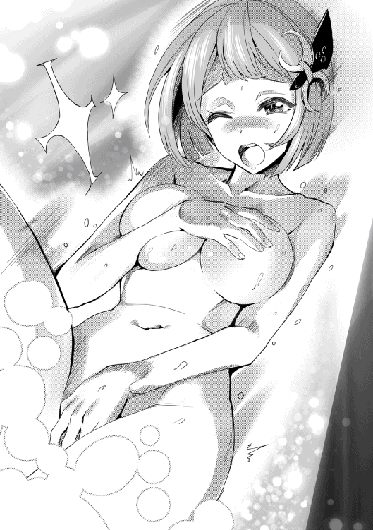

| レベル0で最強の合気道家、いざ、異世界へ参る！2 | |
| 空地大乃 | |
| TOブックス (2016) | |
異世界で冒険者となり、数々の猛者たちを屠ってきた人類最強の合気道家・ナガレ。次に挑むは蜂型モンスター、討伐にいざ、参る──はずが道中で美女たちからモテモテに!? 異国のお姫様に癒しの聖魔術師、謎の巨乳冒険者までよりどりみどり！ 彼は最強だけでは飽き足らず、最モテ伝説まで手に入れるのか？ ナガレは今、甘い蜜（意味深）と強敵を求めて、再び激闘の旅路を行く！ こんなにモテていいんですか!? いいんです！

イラスト：多門結之
デザイン：萩原栄一（big body）
第一章 とある依頼の前日
「甘い甘いスイートビー、ふふ〜ん」
空に向かって音符が浮かび上がりそうな、そんなご機嫌の鼻歌を（実際にある曲かは知るよしもないが）奏で、ナガレの隣をピーチが歩いていた。
そんな彼女を微笑ましく思いつつ、往来を歩く住人の、クスクスとした笑い声が気になるナガレでもある。
と、同時にやはり未だ好奇の視線を浴びる事もあった。
ナガレの風貌が珍しいというのもあるのかも知れないのだが、この組み合わせも影響しているのかもしれない。
男性であるにもかかわらず艶のある黒髪が特徴的な少年、しかしそれは見た目だけであり、重ねてきた人生は八五年。
普通に考えればお爺ちゃんとも称される年齢だが、今の彼の見た目は精々一五か一六。
これはナガレが地球から異世界に渡った時に細胞が活性化され細胞そのものが若返った事が原因である。
そして背中まである黒髪と黒目、これはこの世界では非常に珍しく、しかしナガレのいた世界では当たり前の特徴であった。
彼の本名は神薙流。
れっきとした地球生まれの日本人である。
そんな彼の出で立ちはこれまた日本の、しかも武闘家然とした袴姿である。
ナガレは日本にいた頃は神薙流合気柔術の最高師範であり、その鍛錬中に異世界に赴いてしまったので今もなおこの格好なのである。
何せ彼にとってはこの姿が一番落ち着くし、それに動きやすい。
そして今もなお嬉しそうにナガレの横を歩いているのはピーチ・ザ・ファンタスキー。
彼女とは、ナガレが異世界に来た際にゴブリンに襲われていたところを助けた事がきっかけで知り合った。
そして既に冒険者ギルドに登録していた彼女の勧めもあって、今はナガレも冒険者としてこの世界で活動している。
隣を歩くピーチを横目でみやるが、彼女の特徴でもあるツーサイドアップにしたピンク髪もぴょんぴょんとごきげんに跳ねまわっている。
本当に嬉しそうで周りの目は気にならない様子。
魔術師が好むような蒼く染色されたローブを羽織り、手には杖といかにもな格好をしている彼女。
そして袴姿のナガレ。
この組み合わせが周囲の関心を呼び起こす要因なのかも知れない。
「ねえナガレ、聞いてる〜？」
「──ッ!?」
突如覗き込むような形で接近したピーチの顔に、完全に意表をつかれたナガレである。
相手が明確な敵であれば、このような油断、神薙流合気柔術を使いこなし、武術においてナガレの右に出るもの無しとまで称された彼にはありえないことなのだが、どうもピーチの事となると気が緩んでしまう傾向がある。
それに異世界に来てまだそこまで日は経っていないのだが、精神的な若返りも如実に感じられるようになっていた。
故に女性に対して妙に緊張してしまうところがある。
特にピーチに関して言えばこれまでもその何気ない言動や仕草に、今は亡き彼の妻を重ねてしまうところがあり、それが妙に彼女を意識してしまう原因でもあるのだが──
どちらにしても、ぱっちりとした桃色の瞳で見つめられると妙な気持ちになってしまう。
「え〜と、ごめん、なんだっけ？」
なので両手を上げ、仰け反るような体勢で反問した。我ながら笑顔が硬い。
「もう！ だ・か・ら、スイートビーの蜜を採取するのにいろいろ道具も揃えないとねって話よ」
ぷくぅっ〜と頬を膨らませ、どこか不機嫌そうにピーチが言う。どうやらちょっと怒らせてしまったようだ。
いつも元気で明るい彼女は中々に気が強かったりもして、ナガレに対しても遠慮なく思ったことを言ってきたりする。
尤もそんな彼女の性格のおかげでナガレ自身救われたことも多く、最初に出会えたのが彼女で良かったとナガレは思っている。
実際すったもんだはあったものの、無事彼女とパーティーを組むことも出来た。
これもナガレがピーチとパーティーを組みたいと切に願った結果である。
「でもＢランクに昇格して最初の依頼がスイートビーの討伐依頼だなんてついてるわね。これは幸先がいいかも！」
「ピーチよだれ、よだれ」
苦笑しながらナガレが突っ込んだ。
いつの間にか口から溢れ出しているのに気づき、気恥ずかしそうに腕で拭う。
どうやらスイートビーの蜜というのはそれほどまでに甘美な魅力を秘めているらしい。
食いしん坊なピーチ程ではないが、ナガレも異世界の食べ物には興味があるので気になるところである。
それにしても本当にタイミングとしては最高だった。
ナガレとピーチは今日の午前中、ここハンマの街の冒険者ギルドを管理するギルド長に推薦され、ランクを上げるための昇格試験に挑んだ。
冒険者ギルドに登録するとランクと級の刻まれたタグが与えられる。
ランクは最低がＤの見習いと呼ばれるもので、これには級はないが、Ｃランクより上は１級から５級までの級が付く。
これは一番下が５級で上が１級（それとは別に秘匿されている特級というものもあるが）となる。
そしてランクに関して言えばＤランクからＣ、Ｂ、Ａ、Ｓと順に上がっていく。
その内Ｂランク以上になる為には昇格試験を受け、試験官と模擬戦を行う必要がある。
そしてナガレとピーチは見事ふたりそろって試験官に認めてもらい、Ｂランクの５級に昇格できたわけだが──その直後舞い込んできたのが、後日出向くこととなるスイートビーの討伐依頼なのである。
「でも本当はスイートビーの依頼って凄く人気があるらしいし、偶然とはいえ冒険者がふたりキャンセルして空きが出るなんて運が良かったね」
「ふふん、きっと私の普段の行いがいいからね！」
堂々と言い放つピーチに苦笑するナガレ。ただ、もしかしたらピーチは運がいいのかもしれないという気はする。
この世界には個人の能力を把握するためのステータスというものが存在し、それによって称号や覚えたアビリティやスキルなどといった特技も確認できる。
更にレベルや生命力、魔力などを数値化したものを把握する事も出来るわけだが、実はナガレは他者のこういったステータスを推し量る事は可能だが、自分自身のステータスは見ることができなかったりする。
どちらにしても、このステータスには運というものは残念ながら存在しない。
もし運が数値化されていれば、きっとかなり高い数値を叩きだすのではないか、とも思えたりする。
つまり、スイートビーの依頼に参加する事が出来たのはそれぐらい運がいいという事である。
何せスイートビーから採取できる蜜は貴族にも人気で、市場でも高値で取引されている。
それを多く採取する事ができれば大金を手にする事が出来るかもしれない。
故にＢ５級（Ｂランクの５級という意味）以上限定という依頼にもかかわらず、多くの冒険者が殺到するのである。
尤もあまりに依頼を請けようとする冒険者が多いため、余計なトラブルに繋がらないよう請けられる人数に制限を設け、討伐隊という形で参加者を募る形をとっているわけだが。
「ふふ、スイートビーの蜜を採取したらメルルに届けてあげないとね。あのねナガレ、メルルってお菓子作りが凄く得意なの。きっと蜜を使って極上のスイーツを作ってくれるわよ！」
目をキラキラさせて語るピーチ。どうやら多くの冒険者が大金の為にスイートビーを狙っているのに対し、ピーチは完全に食い気が優っているようだ。
「どちらにしてもピーチ。スイートビーの討伐隊の馬車が出るのは明日の朝だしその前に準備はしておかないとね」
「も、勿論判ってるわよ」
そう言って口を尖らせるピーチ。試験は午前中には終わり、タグもＢランクに書き換えて貰った。
そしてふたりで昼食を摂っている時、ピーチが思い出したように色々と買い揃えるものがあると口にしたのである。
なので、どちらにせよ午後は時間が余ってしまっていたので昼食後はそのあたりの道具を揃えようという話になった。
すると途中、広場の串焼きの誘惑に負けて、昼食を摂ったばかりだというのにピーチが串焼きを購入し結局それにナガレは付き合うこととなった。
ちなみにナガレは一本、ピーチは三本である。
一体この小さな身体のどこにこれだけの食べ物が入るのか不思議でもある。
そして何故かもぐもぐと美味しそうに食べているピーチの胸に注目してしまうナガレでもあった。
串焼きを食べるリズムに合わせてポヨンポヨンと上下しているのがなんとも言えない。
「ん？ どうしたのナガレ？」
「へ？ い、いやなんでもないよ！ いや、串焼き美味しいね、それに空も綺麗だね！」
思わず大慌てでごまかし空を見上げた。ピーチの胸に目が行ってしまったことに自己嫌悪も覚える。凝視しないだけまだマシだが。
とはいえ思いがけず空をみあげてしまったが、確かに今日は晴天、澄み渡るような青空だ。心地よい風が肌をなで太陽の光が降り注ぎぽかぽかと暖かい。
バール王国は気候にも恵まれており、一年を通して過ごしやすく、夏の時期も冬の時期も温度の変化は少ないのが特徴だ。降雨量も適度に多い。水源が豊富で、肥沃な土地に恵まれているのもこの環境によるところが大きいのだろう。
「う〜ん、確かに気持ちいいね」
いい笑顔を浮かべピーチが言った。魔術師でありながらも天真爛漫な雰囲気のあるピーチは太陽の下にいる時のほうが活き活きしているようにも感じられる。ころころと変わる表情を見ているだけでも飽きることはない。
「あ、そういえばピーチから借りていた本、凄い参考になったよ、ありがとう」
ナガレがふと思い出したように口にする。ピーチはその言葉に反応し、
「え？ あ、うん、も、もう読んだの？」
と少し頬を赤らめて反問する。
Ｂランク試験を受ける前日、ナガレは宿でピーチから一冊の本を借りた。
その日はナガレがピーチをシギーサという罪人の手から救出したりもしたわけだが、その御礼に何かしたいと彼女の部屋に誘われ──そしてピーチの所持していた本の一冊を借りた。
勿論ナガレはそれ以外に特に何か要求したりもしなかったのだが、しかしその時何故かピーチは今のように妙に顔が紅かったり、ちょっとガッカリしていたようにも思えた。
その理由を未だにナガレは判っていない。壱を知り満を知るナガレもやはり女性のこととなるとかなり鈍感である。
とはいえ、この本はナガレにとってはかなりありがたかった。この世界を良く知る上で参考になったからだ。
借りた本にはこの世界の歴史や魔法についてなどが多岐にわたり記されていた。広く浅くといった形なので踏み込んだ内容にまでは触れられていないが、それでもこの世界について明るくないナガレにとっては十分役立つ。
「あ、本は今度返さないとね」
「別にいつでもいいわよ。私も読破済みだし」
ちなみにピーチはそれ以外にも炎や風の魔術書を所持している。
基本的に魔法は、ふとしたきっかけで身につく魔法行使のアビリティの効果で使用可能になる。
だが、魔法を行使するための術式などはしっかりと勉強や練習を繰り返して覚える必要があるらしい。
ただ、これに関してもセンスや才能などが深く関係しているようで、どんな勉強が必要でどんな練習を積めば良いのかなどに答えはない。
ある人にとって凄く簡単に覚えられる術式であっても、別の人にとっては覚えるのにかなりの時間を要す事になったりと個人差も激しいのである。
「Ｂランクに昇格したし、そろそろ私も新しい魔法の一つも覚えないとな......」
するとピーチが真面目な雰囲気を醸し出しながらそんな事を呟いた。
ただ、串焼きの肉をもぐもぐしているせいか色々台無しではある。
そして三本目の串焼きもピーチが完食し、そろそろ行こうかとふたりは腰を上げた。
昼食は広場から見て南側の店で摂った。旅に必要な品物は東地区の店で購入出来るようなので、広場で一休みした後は東の通りを目指す。
実はこの広場は結構な面積もあったりするので、住人の散歩コースとしても多く利用されている。
子供の遊び場としても最適なようで家族連れも目立っていた。
「おふたりさんちょっと見ていかない？ 俺、今日からこの場所で商売始めたばかりでね。良かったら安くしておくよ」
そしてふたりが東の通りに向けて歩いていると、誰かの呼び止める声が耳に入る。
ふたりは足を止めて声の主に目を向けた。そこには一人の女の子が立っていた。身長がかなり低く頭の位置はピーチのお腹辺りまでしかない。
肌色は黄色系、髪は焦げ茶色で頭頂部近くをリボンで結び一つに纏めている。
ちょっと変則的なポニーテールといった感じだ。
パッチリとした目は紅色の虹彩が宝石のようでもあり、卵型の面立ちと相まって中々に可愛らしい。
首に緑色のスカーフを巻き、白シャツの上から青地のベストを羽織り、下半身は裾の窄まったダボッとしたロングパンツを穿いている。
そしてそんな彼女のすぐ横には厚めの布が陣地を示すように広がっており、その上に宝飾品の類が陳列されている。どうやら露店を開いているようだ。
「あら可愛い。お店番？ 偉いのね〜」
そんな一見幼く見える彼女を認め、ピーチがその頭を撫でた。確かに見た目だけで判断するなら、まだ一人で商売するには早いようにも思え、きっと店主は他にいるのだろうと考えるのも無理はない。
だがピーチの言葉に、な!? と彼女が目を見開き、よせやい！ とその手を払いのける。
「全く、こっちから声を掛けておいてなんだけど失礼な奴だな。俺はれっきとした商人だよ。街から街に移動してこうやって露店開いて稼いでるんだ。商人ギルドにだってちゃんと登録しているんだからな」
「え？ うそ！ こんなに幼いのに!?」
彼女の話を聞きピーチが随分と驚いた。それにやれやれ、といった具合に店主は頭を掻く。
「ま、今に始まったことじゃないから俺もなれっこだけどな。俺はドワーフだよ、そう言えば後は判るだろ？」
ドワーフを名乗る彼女の言葉に、ああ！ とピーチが声を上げ、得心がいったように手を打った。
「なるほどね。ドワーフの女の子か〜でも私初めて見たな」
「僕も初めてだけど、男性のドワーフとはまた違うものなんだね」
スチールを思い浮かべながらナガレが言う。確かにドワーフの男とは背が小さいということ以外は似ても似つかない。髭も生えてないし筋肉も彼女はそこまでついていないからだ。
「ドワーフの男はむさいし偏屈だしな。同じドワーフでも男と女はだいぶ違うよ。鉄を打ってれば幸せってのがドワーフの男さ。俺からすれば何が楽しいんだかって話だけど」
「貴方は違うの？」
ドワーフの少女（といっても年齢はピーチより遥かに上だろうが）にピーチが問いかける。
「見ての通りさ。ドワーフの女は俺も含めて宝石をいじったりしてるほうが好きなのさ。女の子っぽいだろ？」
コテンっと首を傾けて訊いてくる。その仕草は可愛らしいが、口調に関して言えば自分の事を俺と言ったりと妙に男っぽい。
「そ、そうね。男のドワーフよりは遥かに女の子っぽいと思うわ」
「いやピーチ、それは当たり前じゃないかな」
苦笑交じりにナガレが言う。正直全く褒め言葉になっていない。むしろそこで男のドワーフより男っぽいなどと言われてしまったならこの子が可哀想過ぎる。
「ま、いいや。とにかく商売商売。さ！ ご両人！ 俺の自信作をちょいと見ていきなよ！」
頭を商人のソレに切り替えたのか、ナガレとピーチの手を引き布地の上に並ぶ宝飾品に目を向けさせようとしてくる。彼女は中々に強引だ。
とはいえ折角だからとふたりは促されるまま露店の前に立ち、並んでいる品々に注目する。
「でも、これ自信作ってことは手作り？」
「そうさ。ドワーフの女は男みたいに武器だ防具だみたいなむさ苦しい事はやらないのさ。だからこういった細かい芸術品を得意としていてね。見てくれよこの繊細な仕事。これはあのぶっとい男の指じゃとても真似できないね」
鼻をこすり得意がる。口調は男勝りな彼女だが、確かに一つ一つの仕事はとても丁寧である。
「へえ、これ全部って凄いわね。あ、これ可愛い」
「おっとお目が高いね！ そいつなら五万ジェリーだぜ」
「五万!? いや無理無理！ そんなの手が出ないわよ！」
値段を聞いてピーチが仰天し両手を振った。実際は最近の稼ぎを考えたら払えない金額でもないが、これまで生活に苦労していた分金額には敏感なのだろう。
「まあこれはちょっと値が張る方だけど、勿論お手頃なのも多いよ。折角だしさ何か買っていってよ。これとかこれとかどうだい？」
そう言って彼女が指で何点かオススメを紹介してくる。中々に熱の入った薦め方で、このあたりは流石商売人といったところか。彼女は中々に喋りも達者で、口下手な男のドワーフとはやはり違う。
彼女が特別そうなのか、それともドワーフの女が全員そうなのかは判らないが。
「でもいきなりそう言われてもね。確かに可愛らしいのも多いけど──」
色々と薦めてくる彼女だが、ピーチは顎を指で押さえ考えこむしぐさを見せた。彼女の財布の紐は中々に固い。
「だったら彼氏はどう？ 女の子はこういった物を喜ぶもんだよ。彼女に贈ってあげたら喜ばれるし男も上がるってもんさ」
どうやらピーチから落とすのは難しいと考えたのか、今度は矛先をナガレに向けてきた。しかも微妙に男心をくすぐる形でだ。
「え、か、彼女？ そ、そういう風に見えてるの？」
「うん？ 違うのかい？ 俺はずっとそう思っていたよ。お似合いだと思うけどな〜」
そうもて囃され、見る見るうちにピーチの顔が紅くなっていった。
ただナガレはそんなピーチの変化にも気づく事なく、
「う〜ん僕たちはそういう関係ではないんだけどね」
とわりと冷静に切り返した。ナガレは別に悪気はなく、むしろ変な勘違いをされたままではピーチに迷惑かなと思っての事だったのだが、肝心のピーチはがっかりとした表情を見せている。
「ところでこれいくらかな？」
すると、ナガレが陳列された宝飾品の一つを指さし彼女に尋ねる。
「おっと、お目が高いね！ それなら、そうだね折角だしこれも何かの縁さ。本当は七〇〇ジェリーだけど五〇〇ジェリーでいいよ」
ナガレは疑いもせず提示された金額を支払った。
別に彼女を信頼しているからなどといった感情論ではない。ナガレは合気道家でもあるが、こういった代物の目利きにも自信がある。
ここの品々は彼女自らが得意と言うだけあって、その細工の腕はかなりのものだ。輝石も散りばめられ、元の値である七〇〇ジェリーであっても安いといえる代物である。
すると、そんなナガレと彼女のやり取りを不思議そうな目で眺めていたピーチが声をかける。
「でもナガレ、それどうするの？ ま、まさか自分で着けるとか？」
どうやらピーチはなぜナガレがこんな物を買おうとしているのか判らない模様。なのでナガレはピーチに顔を向け、微笑みながら答える。
「え？ はは、まさか。そうじゃなくて──」
そしてナガレは、購入したソレをピーチの髪に着けてあげた。ナガレの購入したのはいわゆる髪飾りで、桃の花をあしらった可愛らしいものだ。
勿論男のナガレが身に着けるようなものではないが、ピーチであればその桃色髪と相まって良く似合う。ピーチの名前にもぴったりだ。
「え？ え？ う、嘘、これを私に？」
「うん、パーティーを組んだ記念にね。あ！ もしかして気に入らなかった？」
ナガレは早まったか、と不安そうな表情を見せるが──ピーチの頬がみるみるうちに紅潮し、俯き加減に、
「そ、そんな事無い。嬉しい──」
と口にし髪飾りを愛おしそうに撫でた。
「良かった。喜んでもらえて」
ホッとした表情を見せるナガレ。何せ中身は八五歳だ。もしかしたら自分のセンスが古臭かったのかもしれないと少々不安に思ったのである。
「全く見せつけてくれるねご両人。でもお似合いだと思うぜ。この際だし本当に付き合っちゃえば？」
「つ、つきあ、って、えーーーーーー！」
目を見張り、突飛な声を弾かせるピーチに、彼女が目を丸くさせた。
「な、なんだよ突然叫んで。驚いたぜ」
「だ、だって、だって。わ、私とナガレが、そ、そんな──」
ピーチはかなり戸惑っているようでもあるが、その口元は緩みきっている。
「はは、そんな誂わないでよ。それに僕達まだ知り合って間もないしね」
「え？ そうなのか？ 随分と仲がよく見えたけどな」
「う〜ん、そう言われて悪い気はしないけどね」
ナガレが微笑を浮かべ言う。その横でピーチは今も照れくさそうにしている。
「まあとにかく買ってくれたのは嬉しいよ、ありがとうな。俺ルビーって言うんだ。暫くはこの街にいるし、商売するとしたらここらへんでやってると思うから気が向いたらまた覗きに来てよ」
「うん、判ったよ。いい買い物も出来たしね」
「そ、そうね──」
ナガレの言葉を聞き、ピーチが髪飾りを優しく撫でながら言う。そしてふたりは辞去し、その脚で必要な物を買い揃えに向かう。
「あ、あのナガレ！ これありがとうね！ 本当に、私、一生の宝物にするから！」
「え？ いや！ 流石にそれは大げさだけど、うん、でもそれだけ喜んでもらえると僕も嬉しいよ」
そして道すがらそんな会話をするふたり。ピーチは本当に嬉しそうであり、しきりにナガレから貰った髪飾りを弄っている。
「でも、私だけってなんだか悪いな。ナガレにも何か......」
「え？ いや僕はいいよ。そんなつもりで贈ったわけでもないし」
ナガレは遠慮がちに応えるが、ピーチは、う〜ん〜でも〜、とあれこれ考え始めた。ナガレとしてはあまり気を遣わせたくないという思いがある。
「う〜ん、でもあの子口が上手いわね。物も良いみたいだし、あの場所なら人気出るかも」
ナガレは、確かにね、と同意する。
「本当同じドワーフでもスチールとは大違いよね」
するとピーチがそんな事を言い出し、ふたりで彼の顔を思い浮かべた。そして悪いとは思いながらどこかおかしくなって、プッと吹き出し、ピーチもクスクスと笑顔を覗かせた。そんな笑顔と彼女に贈った髪飾りが妙に印象的であったナガレである。
ルビーの店での買い物を終えた後は、ふたりは店を巡り必要な物を一通り買い揃えた。
蜂蜜を採取するにもそのまま魔法の袋に入れるわけにはいかないので、採取した蜂蜜を入れる為の空き瓶、それに携帯用の食料──これは主に干し肉や乾パンなどだ。魔法の袋とはいえ中に入れっぱなしだといずれは腐敗してしまうので日数の掛かる旅ではこういった物が必要になる。
それと念のためエルミールの薬店に向かった。薬師兼店主のエルミールはいつもどおりの笑顔でふたりを出迎えてくれた。彼女の笑顔はそれだけで癒やされる。
エルフの彼女は薬の知識が豊富なので、エルミールの案内でポーションや傷薬なども何種類か買い揃えておく。
ポーションはどんな傷でもある程度治し、体力も回復できる万能薬だが、連続使用は出来ない。
その為、傷薬で治る程度の怪我であるならば、そちらを利用した方が良いとされる。尤もナガレに関していえば、よほどのことがない限りかすり傷一つ負う事はないだろうが。
それにナガレは合気の恩恵で自然治癒力が常人より遥かに高い。その為買い揃えた薬などはもっぱらピーチや誰か他に怪我した冒険者などがいた時の為といったところだ。
そして薬を買い揃えた後の帰り際、ピーチがスイートビーの蜜を使ったお菓子を持ってくるとエルミールと約束していた。
彼女も甘い物には目がないようで、
「うわ〜楽しみに待ってます」
と目をキラキラさせていた。この辺りはやはり女の子だなとナガレは思う。
その後は最後にメルルの魔導具店に寄った。蜜を採取後のお菓子作りをお願いするためだ。
「......任されたわ」
ぐっ、と拳に力を込めてメルルが応じた。スイートビーの蜜と聞いて俄然やる気が出てきたといったところか。
それはいいのだが、ピーチはマリーンにも必ず蜜を採取してお菓子を持ってくると約束してしまっている。
まだ出発もしてない内からそんな約束して大丈夫かなと心配にもなるナガレだが、今から楽しみで仕方ないといった様子で浮かれているピーチを見ていると、とてもそんな余計なことを言う気にはなれない。こうしてメルルの店を出た頃には辺りも薄暗くなり始めていた。
「そろそろ戻ろうか」
「うん、そうだね。明日は早いし」
そして宿への道を歩くふたり。途中ピーチがメルルの作るお菓子がどれだけ美味しいか、そしてスイートビーの蜜がどれだけ楽しみかを語ってくれた。
ピーチの為にもこの採取の依頼を頑張らないとなと決意を新たにするナガレである。
そしてふたりは宿泊している宿屋が見える位置まで戻ってきたのだが、そこでピーチが何かを思い出したように声を上げる。
「......あ、ナガレ先に宿に戻ってて！ 私ちょっと忘れ物思い出しちゃって──」
「え？ だったら僕も付き合うよ」
「い、いいのよすぐ戻るし、ナガレは先に宿に戻ってお風呂でも頂いて明日のためにリフレッシュしててよ！」
ナガレが一緒についていくのを何故かピーチが拒み、そして慌てて走り去ってしまった。
追いかけてもよかったのだが、何かついてきてほしくない事情がありそうだったので、とりあえずナガレは合気陣でピーチの様子だけを探る程度にし、言われた通り宿に戻る事にする。
「あれ？ もしかして待っていてくれたの？」
宣言通り、ピーチはナガレが宿に戻ってからそれほどの時間も掛からず戻ってきた。
それを察したナガレが部屋を出て声を掛けたところ、返ってきた反応がこれである。尤もそれほどといっても一時間程度は経っているが。
「うん、それに僕も色々明日の準備をしていたからね」
「そ、そうなんだ──」
そう口にしながらも、ピーチは頬を若干赤くさせながら視線を斜めに持って行き、どこかモジモジとしている。そして杖を持つ方と逆の手が腰の後ろに回されていた。
何か見られたくないものでもあるのだろうか？ と小首を傾げるナガレ。どっちにしろそうであれば、一旦部屋に戻ってもらったほうがいいだろうか？ とも考えるが。
「ナ、ナガレ！ これ！」
ガバッ！ とピーチが後ろに回していた手をナガレに向けて突き出した。その手には細い紐で括られた、やはり紐が握られていた。
とはいっても細い紐はあくまでソレをまとめる為に縛っておくための物。メインは若干太めのリボンに近い紐の方のようであり、ただリボンに近いといってもシンプルかつスタイリッシュな雰囲気ただようもので、男性が使用しても違和感がなさそうである。
「え？ これは？」
「お、お礼！」
ピーチが声を張り上げて上目がちにナガレを見やった。ピンクサファイヤのような薄紅色の瞳に見つめられると、やはり少々ドキッとしてしまうナガレである。
「お礼って、え〜と、あ、もしかして？」
「う、うん、これの、ね」
ナガレに貰った髪飾りに触れながらピーチが照れくさそうに言う。
「別に良かったのに」
「でも！ パーティーを組んだ記念なら、わ、私だって何か贈りたいもの！」
必死に告げてくるピーチを、なんともいじらしいと思ってしまうナガレ。
「そ、それでね。ナガレ髪長くてこれから冒険者としてやっていくなら、もしかしたらちょっと邪魔になったりしないかなって思って......だから──」
どうやらこれはナガレの髪を縛る為のものという事らしい。確かに激しい動きを要求される場合、長い髪は邪魔になることもあるし、戦闘ともなれば髪を掴まれたりと不利に働くことも多い。
ナガレは合気があるためその辺りに頓着はなかったが、折角こうして選んでくれたのだ。受け取らない理由は勿論ないし、素直に嬉しい。なのでナガレはニコリと微笑み。
「そっか、うん、でもありがとう、凄く嬉しいよ」
「そ？ そう？ お店も閉まりそうで慌てちゃったんだけど......も、もし嫌だったら！」
「ピーチが選んでくれたのに嫌な筈無いじゃないか。ほら──」
ナガレはどこか不安そうでもあるピーチにそう答えつつ、折角だからと長かった髪の毛をその紐で縛り総髪にしてみせる。
「あ──」
するとピーチがナガレの顔を見上げ、そして、ぽ〜っとした表情で見つめてくる。その様子にナガレは少々照れくさく思いながらも、どうかな？ と尋ねてみた。
「に、似合う！ 凄い似合うわナガレ！ うん、絶対にいいよ！」
どうやら髪を下ろしている姿より、後ろで縛って纏めた姿のほうがピーチの琴線に触れたようだ。
「うん、じゃあこれからはこの髪でいく事にするよ。これも大切にするね」
そう言いながら、ピーチがやっているようにナガレもピーチから貰ったそれと髪を撫でてみせる。
それを認めたピーチが嬉しそうに微笑んでくる。そしてナガレは再度感謝の言葉を述べつつ、その後は湯浴みし、ふたりで夕食を食べ、次の日に備え早めに就寝するのだった。
第二章 新たな出会い？
──明朝、出発の準備を終えたナガレであったが、部屋を出てもまだピーチの姿が見えない。暫く待ってみたが、もしかして？ と思い彼女の部屋の扉をノックする。
「あ〜〜〜〜！ 寝過ごしちゃった！ ご、ごめんねナガレ！ すぐに、すぐに準備するから！」
すると、そんな大音量がドアの向こう側から響き渡ってくる。どうやら少々ぐっすり眠りすぎてしまっていたようだ。
とりあえず眠り姫が準備を整えるのをしばし待つナガレ。ドタバタと騒がしい音がなんだかおかしくて、悪いと思いつつ吹き出してしまった。
「お待たせナガレ！」
そしてそれから少ししてドアを開けピーチが飛び出しナガレに声を掛けてくる。
「あ、うん、大丈、夫、て！ ちょ！ ピーチ！」
それに合わせてナガレは彼女を振り返るが、慌てて咄嗟に手で顔を覆う。え？ と不思議そうな表情を見せるピーチだが──その視線がローブから開けた胸にいき、きゃ〜〜〜〜！ と大声で叫んだ。
実は前々からナガレも気になっていた事でもあるのだが、ピーチの羽織っている外套は脇のあたりで紐で縛り締め付けるタイプであり──彼女の胸が一般的に見てもかなり大きなサイズに該当するため、その圧力に負け紐がよく緩むのである。
その為、何故かローブが胸に挟まれたような状態になる上、大きな果実の下側が顕になるという事態によく陥ってしまっている。
ただ、これはもう本人もあまり気にしていないようなので、ナガレも敢えてそこを指摘するような真似はしなかったのだが──
しかし、今に関しては流石に黙ってはおけないというか、何せ慌てていたせいなのか、紐が緩みに緩んでいたのは勿論のこと、下どころか薄紅色の大事な先端まで見えてしまっていたのである。
その為、最近妙に精神的な若返りを感じてしまっているナガレには正直刺激が強すぎた。自分でも顔が熱を持ち赤面しているのが判る。だが、それは勿論ピーチも一緒だ。
「み、見えた？」
居ずまいを正しピーチが確認してくる。ナガレは覆っていた手を戻し、両手を振って、見てない！ 見てない！ とごまかした。実際は、結構はっきりと見えていたりしたが。
「......ま、まあ──でもナガレになら......てもいいけど」
すると少し顔を逸らしながらも、ボソッと何かをピーチが呟く。それに、え？ と聞き返すナガレであるが、ピーチが更に顔を真っ赤にさせて声を上げる。
「な、なんでもない！ それより急いで朝食摂らないと遅れちゃう！」
「あ、うん、それでもそこはしっかり食べるんだね」
頬を掻きつつちょっぴり呆れた調子で言葉を返すナガレである。そしてしっかりピーチと朝食を摂り、ふたりは急いで宿を出るのであった──
「スイートビー討伐隊専用馬車はこっちだぞー！ 乗るなら急いでくれーもうすぐ出るぞー！」
中央広場西の馬車通りに止められた大型の幌馬車から、御者の男が声を張り上げた。するとピーチが、待ってーー！ と手を振りながら叫び、ナガレと一緒に馬車まで急ぐ。
「ふぅ、なんとか間に合った」
出発ギリギリで目的の馬車に飛び乗り、胸を撫で下ろすピーチ。走った為かピーチの額には玉のような汗が滲み出ていた。
そんなピーチをみやり苦笑するナガレ。彼女とは違い彼には一切疲れの色が見えない。鍛え方が常人と異なるナガレは、多少走ったところで汗一つかく事もないのである。
ちなみに馬車に乗るのがギリギリになったのは、ピーチのうっかりで宿を出るのが遅れてしまったというのもあるが、更にピーチが途中で、
「ま、まだギリギリ間に合うわよね」
と串焼きやクレープなどを買い食いしてしまったのも要因だ。しっかり朝ご飯にも手を付けておきながら、相変わらずの食欲である。尤もナガレも、一応はギリギリに間に合うタイミングを見計らってピーチを促した事もあり、無事間に合ったわけであるが。
まあ何はともあれ、ふたりが乗り込むのとほぼ同時に馬車が動き出した。間に合った事でほっと大きな胸を撫で下ろすピーチである。
ただ、このことで少々目立ってしまったようで、既に乗り込んでいた冒険者の視線がふたりに突き刺さってきた。このまま黙っていてもナガレはともかくピーチは居た堪れないだろうと、適当な空いている場所を見つけ、木製の床板にふたりが腰を掛けた──その直後であった。
「チッ、ギリギリで乗り込んできやがって随分と仕事を舐めた連中だなと思ったがおまけにガキかよ。おいおいこれから行くのは子供の遊び場じゃねぇんだぞ。これはＢランク専用の討伐馬車だ、判ってんのか？」
ふたりの近くに座っていた一人の冒険者が瞳を尖らせ、そんな事を言って来たのだ。ツンツンとした炎のような朱髪にナイフのような鋭い瞳。引き締まった浅黒い肉体の上からは、魔獣の革を鞣して造られたであろう胸当て、そして首には黒い狼の毛皮のような物を巻いている。ズボンの上からは同じ素材であろう革の膝当てと、具足といった動きやすさを重視したようなスタイル──そんな出で立ちの男が、突如ふたりに文句をつけてきた相手である。
ただふたりが予定時刻ギリギリに乗り込んでしまったのは事実だ。仕事をこなす上である程度余裕をもって行動するのが望ましいのは当然だろう。ついついピーチに合わせてしまったが、もしかしたらこちらにも反省すべき点はあったのかもしれない、と考えナガレが彼に軽く頭を下げた。
「ギリギリになってしまったのは失礼致しました。僕はナガレ。彼女は一緒にパーティーを組んでいる魔術師のピーチ。色々至らない点もあるかもしれませんが、こう見えて僕達もＢランクの冒険者なんですよ」
ナガレは初めての相手という事もあり、また冒険者としての経験は彼の方が上であると判断した為、比較的丁重な姿勢で接して見せる。
だが、はんっ、と男は鼻を鳴らしふたりを小馬鹿にしたような目を向けてきた。
「お前らがＢランクだと？ 最近のランクってのは随分とぬるくなったもんだなぁ。こんな右も左も判らないような連中がＢランクだってんだからよ」
その返しにナガレの隣に座るピーチが、なんなのこいつ？ といった感じに目を細めた。ナガレとしてはこのような場所でのトラブルは避けたいところでもあるが、彼の蔑むような視線と口から吐き出された嫌味は、あまり気分のいいものでもない。
「ちょっとフレム！ さっきから失礼でしょ！」
すると、彼の隣にいた白ローブの女性（見た目には少女と言ったほうがいいであろう）が彼を窘めるように会話に割り込んだ。
木製の杖を持ち、首にかかる程度まで伸びた白い髪、パッチリとした大きな黒瞳が印象的な可愛らしい少女である。
この世界では黒髪と黒瞳の両方を併せ持つものはかつて召喚された地球人の血統か、召喚された日本人ぐらいなもののようだが、黒髪か黒瞳のどちらかだけであれば珍しくもないようだ。
「ごめんなさい。彼フレムといって、一応私達とパーティーを組んでいるのだけど、なんか口が悪くてすぐ相手と喧嘩になってしまうのです。悪気はないのですけどね」
「おい！ 余計な事を言ってんじゃねぇぞローザ！」
フレムが歯牙を剥き出しに喚くが、はいはい、と手慣れた様子でローザがあしらう。このふたり、パーティーとは言っているが恐らく付き合いは相当に長いのかもしれない、とナガレはその様子から予想する。
「フレムっちの喧嘩っ早さにはおいらも困ってるからねぇ」
「てか、俺を妙な呼び方で呼ぶなっていつも言ってんだろカイル！」
フレムとローザの背後からにょきっと顔を出したのは、灰色がかった髪を肩まで伸ばした弓使いと思われる男性だった。特徴的なのはこの青年、耳がまるで狐のようである。
瞳も狐の毛を連想させる色で、額には細いバンドのようなものを巻いている。彼は弓使いである事を主張するように、肩には矢筒、そして矢筒と一緒に木製の弓（恐らくコンポジット・ボウと思われる）を携えていた。
（狐耳の獣人か、やっぱり異世界だけにこういう種族もいるんだな──）
そんな事をナガレが思っていると、ピコピコとカイルが狐耳を揺らした。
「おや？ おいらみたいのは初めてかな？」
「ええ、獣人の方を見たの僕は初めてですね」
「そうなんだ。王国では彼みたいなタイプは少ないものね」
「ふん、どうせ奇異な目で見てんだろ？ 言っとくけどな！ 俺の仲間を差別なんてしやがったらぶっ殺すからな！」
突如怒鳴りだすフレムを眺めながら、どうやら喧嘩早いのは本当のようだな、と一考しつつ、顎に指を添えるナガレである。
そして勿論ナガレには獣人を差別する気など毛頭ない。カイルもその事は十分理解しているようで苦笑している。
「全く、誰もそんな事を言ってないでしょう？ いい加減そうやってすぐ目にした人に突っかかる癖やめてほしいわね」
「な、なんか大変そうね」
ローザに窘められるフレムを見ながらピーチが言った。その様子にフレムが、ふんっ！ と鼻を鳴らしてそっぽを向く。
「ははっ、本当にごめんね。でもフレムっちはこう見えてかなり頼りにはなるからさ。Ｂランクの１級だしね」
Ｂランクの１級ということは、後は昇格試験を受けて合格できればＡランクに昇格だ。
ナガレは普段からギルド内でも自然と相手の力を測っている。それでいけばフレムぐらいまで達しているのは非常に少ない。そう考えればその実力は中々のものと言えるのだろう。
「へえ凄い。じゃあ貴方達も？」
「いや、おいらはＢランクの３級だね」
「私はやっと４級になれたばかりで」
そう言って笑うふたり。どうやら三人はパーティーを組んでいるようだ。
だが、勿論パーティーだからといって常に一緒に行動する必要はなく、別行動をする場合だってあるようで、そういった事情から、同じパーティー内でもランクや級に差が出るという事は珍しいことではないのだろう。
「そうなんだ〜でもそれでも凄いな。私もナガレもＢランクの５級になったばかりだし」
「はぁ〜？」
ピーチの発言を耳にしたフレムがどこか不機嫌そうに発し、ふたりを睨みつけた。
「んだよそれ。つまりＢランクに上がったばかりって事かよ。そんなんでよくこんな依頼請けやがったな」
「な、何よ！ スイートビーの依頼はＢ５級から可能なんだから問題ないじゃない」
ジト目で小馬鹿にするように言ってくるフレムへ言下にピーチが切れた。初対面にしては随分と失礼な物言いが続いていた為、腹を立てる気持ちも判らなくはない。
「はん、これだから金に目が眩むようななんちゃって冒険者は困るぜ」
「ちょっとフレム失礼よ」
「そうだよフレムっち。出会ったばかりでそんな──」
「うるせぇ！ だいたい俺はここで雁首並べてる連中にも腹を立ててるんだよ！ 腕もねぇくせに金になるからって理由だけで依頼選びやがって。仕事舐めんな！」
フレムが車内を見渡すようにして吠え上げる。この幌馬車は一台で一二名程度が乗り込めるタイプであり、そして当然だがこのフレムの発言は周囲にいる冒険者の反感を買う事になるわけだが──
「んだとてめぇ、もういっぺん！」
「おい、待てヤメろ、あいつ暴れ火のフレムだ。絡んでも面倒なだけだぞ」
「狂犬とも噂されてる奴だしな......」
「何だよ、マジであいつが一緒かよ......とんだトラブルメーカーじゃねぇか」
そう囁きつつ、周囲の冒険者が何かをしてくる事はなかった。
どうやらこの男、中々に有名なようである。ただし悪い意味でであり、ローザもカイルも少々困ったような表情を見せてはいる。
「ふんっ！ とにかく、どうせてめぇらだって安易にスイートビーなら楽勝、倒した時の討伐金も手に入るし蜜の分の儲けがあって最高！ とか大して考えもせず請けた口だろう。Ｂランクになりたてって事はスイートビーがどんな魔物かもよく判ってねぇんだろうが」
「それは多少は判っているつもりだけどね」
ぐちぐちと少々言い過ぎ気味なフレムに、ナガレが言葉を滑りこませた。
すると、あぁ〜ん？ と不機嫌そうに目を眇め、だったら言ってみろ、という視線をナガレに向けてくる。
「スイートビーは確かに単体ではそこまで手強いとされない魔物です。尾針の攻撃もあるけど、そこまで鋭い事もなく、Ｂランクの冒険者なら見極めるのもそこまで難しくはない」
ナガレがそこまで言うと、はんっ、とフレムが上から見下すような態度で胸を反らす。
知っていると言ってもその程度か、といった気持ちなのかもしれない。
「──だけど、スイートビーは己の身が危険になると周囲に特殊なフェロモンを撒き散らし仲間を呼ぶ傾向がある。単体ではそれほど脅威でもないスイートビーだけど、集団で来られると話は別。仲間を呼んだスイートビーは攻撃を仕掛けてきた相手を囲み、そして逃げられないように密着する。そこからスキルである【蜂球】を発動させ、スイートビーが激しく振動し内部の温度を上昇させてその熱を持って対象を蒸し殺し──」
ナガレはピーチと一緒にギルドの資料室で今回の討伐対象であるスイートビーの生態をしっかり読み込んでおいた。
それを読む限りはスイートビーの攻撃法は、彼が元いた世界の蜜蜂とほぼ同等である。
ただし当然その体長は比べ物にならず、スイートビーに関しては八〇センチ〜一〇〇センチ程度の大きさであり、その分蜂球時の温度も飛躍的に上昇、スキル発動時その内部は一五〇〇度近くまで上昇する。
当然そんな温度の中、並の人間が生きていられるわけもなく、つまり蜂球を喰らうということはそのまま死に直結すると言っても過言ではない。
そして、それだけの温度を発しても耐えられるスイートビーは熱への耐性も強く、炎魔法も効きにくい傾向にある、といった説明も思い出しながらついでに織り交ぜて聞かせ──という感じですよね？ と話を締めると、目の前のフレムはポカ〜ンとした顔でナガレを見ていた。勿論それは隣にいるローザやカイルもだ。
本来しっかりと事前に調べておけばこれぐらいは答える事は難しい話ではない。ただ、多くの冒険者はそういった事を疎かにしがちだ。
それは資料室にいた冒険者が非常に少なかったことからも窺い知る事が出来た。頭で考えるのが苦手な冒険者が多い証拠だろう。
また、読んでもそこまで仔細に理解できない場合もある。実際ナガレは簡単に纏めた内容を説明しているが、資料としてはもっと小難しく書いてあり、隣のピーチもナガレほど詳しくは理解していない。
「く、詳しいのですね」
目を丸くさせて言葉にするローザ。一緒に聞いていたカイルも目をパチクリさせ、耳を前後に揺らしている。
「いや、事前にギルドの資料に目を通していたのだけどね」
「......わ、私、実はそこまで判ってなかったけどね──」
ピーチが少し恥ずかしそうに言う。それにナガレは、ま、まあちょっと難しく書いてるところもあったしね、とフォローするように返す。
するとフレムが鼻を鳴らし、
「ハンッ！ 確かに多少は知識があるみたいだがな、冒険者は頭で仕事をするんじゃねぇ！」
と、そんな事を叫びだした。
半眼で、自分から聞いてきたくせに──と、ピーチが思わずこぼす。
だがナガレは平静とした口調で、
「と、言うと？」
と、そう問いかける。
すると、つまり──とフレムが腰に手を回し、一瞬まさに瞬きしている間にナガレの首筋に一対の刃が挟み込むようにして擬する。
「こういう事だよ。最後に物を言うのは腕だ。にしても、やっぱテメェは大したことないみたいだな。全く反応できてねぇじゃねぇか」
フレムは得意満面でニヤリと口角を吊り上げる。しかしナガレは特に表情を変える事なく、そうですね、と頬をゆるめた。
「ふんっ！ 言い返す度胸もなしかよ。拍子抜けだぜ」
そう言って手にした双剣を腰の鞘に戻す。彼の持つ一対の剣は全長六〇センチで若干湾曲した片刃のタイプだ。が、その剣が鞘に引っかかり上手く収まらない様子。
「あん？ どうなってんだこれ？」
「いや、フレムっち、それ向き逆じゃない？」
カイルに指摘され、ようやくフレムは鞘に収めようとしている刃が逆向きになっている事に気がついたようだ。
なんで？ と疑問げに顔をしかめるフレムは、それがナガレの所業だとはこれっぽっちも気がついていない。
尤もナガレとて、本気で斬る気などないことは即座に察したが、これはちょっとした悪戯心だ。
つまり、フレムが腰から双剣を抜いた瞬間、目にも留まらぬほどの動きで、彼の剣の向きを変えたのである。
その様子が少しおかしくもあるナガレだが、我ながら子供っぽい真似をしてしまったな──と少し反省したりもした。
「ナガレ......なんで黙ってたのよ──！」
すると、ピーチが彼らには聞こえないほどの小声で耳打ちしてきた。
どうやらフレムの言いぶりに少なからず彼女も鬱憤が溜まっていたようだ。勿論ピーチはナガレの所為にも気がついていない。
「こんなところで揉めても仕方ないしね。それに彼も討伐依頼の中では協力すべき仲間だし、ここでギスギスするのは得策じゃないよ」
ナガレは宥めるようにピーチへ返すが、どうにも彼女は腹の虫が収まらない様子。ただフレム以外の、特にローザは人当たりも良く親しみやすい性格であった為かピーチとすぐに打ち解けたようだ。
「ピーチさんは魔術師なんですね。私もなんですよ。私が使用するのは聖魔術ですけどね」
「へえ、聖魔術って凄いわね。あ、私の事はピーチでいいわよ」
「そ、そうですか？ じゃあ私の事もローザでいいですよ」
嬉しそうに言うローザ。どうやら同年代の友達があまり多くないらしく、ピーチと仲良くなれたのがかなり嬉しそうだ。
そんな彼女の扱う魔法は魔導門ではなく聖導門を開くという形で行使される魔法であり、古代魔法に分類される代物でもある。
古代魔法はこの他にも何種類か発見されているのがあるようだが、その中で最も広く知れ渡っているのは聖導門のようだ。
ちなみにピーチが使用している魔導門の歴史自体は浅い。だが数多くの魔導研究者の手によって数多の術式が編み出されている。
ただ基本的な考えかたは古代魔法の術式を参考にしているらしく、難易度に応じて第一門から第一二門に振り分けられるのもその影響だ。
ちなみに門は数字が少ないほど強力な効果が望める仕組みである──と、このあたりの事はピーチから借りた本に書いてあった内容だ。
ただ魔法の力で傷や毒などの状態異常を癒やしたりできるのはこの聖導門だけで、その為とても神聖視されており、この系統の魔法を扱うのは教会の神官などの地位に就いた者が殆どのようである。
ただローザに関して言えば教会に属さず冒険者として活動しているようだ。
どちらにせよ、彼女のどこか人を安心させる様相は癒やしの力の使い手故なのかもしれない。
一方フレムの隣でにこにことしているカイルは、最初の印象通り陽気な性格で親しみが持てる。
「それにしてもピーチちゃんはおっぱいが大きいよねぇ〜」
......ただ、言葉の端々から軽薄そうな感じも滲ませているのが難点だ。ピーチも時折口走る彼の言葉に若干引いているし、ローザにも怒られていた。
そんなふたりと会話していると、フレムはどうにも不機嫌そうにムスッとしており、
「おい、そんな奴らと仲良くする事はないだろ」
と、そんな茶々も途中に挟んできたりする。
どうにも他のふたりと比べると偏屈な性格なようである。特にナガレに対しては何が気に喰わないのか度々睨みつけてきたりとあたりが強い。
ふたりの話だとこれで彼は平常通りなようだが、そんな態度でいて疲れないのだろうか？ などと余計な心配をしてしまいそうになる程である。
そしてその後は取り留めのない話が続きその間も馬車は走り続けた。途中昼食は車内で摂り更に日が暮れて一日目は街道から少し外れた場所での野宿となった。
この日の食事はほぼ全員持参していた携帯食でナガレとピーチも準備しておいたものを食した。昼も夜も乾パンと干し肉といった簡素な食事で、冒険者は大体似たようなものを食べている。
これがもし小人数での移動なら途中何箇所かあるという村の宿場を利用してもいいのだが、今回は人数がかなり多い。この規模だと当然部屋が足りず他に宿場を利用しようとしている客人に迷惑がかかるので、こういった場合冒険者は基本野宿となる。人の助けになる筈の冒険者が人の迷惑になっては本末転倒だからだ。
その日の夜は特に問題なく終わり夜明けと同時に冒険者一行は馬車や馬を走らせた。そしてその日の昼も車内で摂るが、この間も一定の速度で走り続ける馬の耐久力にはナガレも中々驚いた。なにせ昨日から同じ馬で疾駆し続けているのだ。普通であれば途中馬を休めたり交換したりが必要なものだが、この世界の馬はナガレの居た世界よりも持久力が高いらしい。
それにナガレが感嘆しているとカイルが教えてくれた。どうやら全ての馬がそうというわけではないらしく、冒険者ギルドの保有している馬が特に精強なようであった。過酷な仕事も多い冒険者ギルドでは当然馬の質もある程度高くないと無駄に死なせるだけになってしまうのだろう。魔物が跋扈するような異世界であればそれも当然か、とナガレも納得する。
すると──突如馬の嘶く声が響き渡り、馬車の動きがとまった。かなり急な停止だったので、多くの冒険者が地べたに倒れ込む。
ピーチも、キャッ！ と悲鳴を上げてバランスを崩しそうになった為、ナガレがその肩を抱きしめた。
「大丈夫？」
「う、うん、ありがとう──」
ナガレを見つめながらお礼を言うピーチ。頬を染めはにかむ姿も愛らしい。
「てめえらイチャイチャしてる場合じゃねぇぞ！」
そんなふたりをみやりながらフレムが怒鳴る。正直一言多い気もしないでもないが、確かにこの急停止ぶりは何かあったと考えるのが妥当だろう。
「皆さん至急戦闘準備を！ 馬車が魔物に襲われています！」
そして御者の緊迫した声。それが車内に響き渡ると瞬時に全員が武器を手に取り始める。このあたりの対応の早さは流石手練れの冒険者が集まっているだけある。
「テメェらもどうせ役に立ちやしねえだろうが、さっさと準備して表に出やがれ！」
フレムが激を飛ばし、馬車の外へと飛び出した。その後に続くローザがふたりを振り返り、空いている手でごめんなさいのポーズを見せる。カイルも苦笑いだが、とにかく魔物に誰かが襲われているというならすぐに対処すべきだろう。
ナガレとピーチも急いで幌をめくり外に出る。既に辺りはかなり薄暗くなっていた。外にはもう一台の幌馬車も動きを止め、冒険者がぞろぞろと顔を出してくる。
今回の遠征では十二名程度が乗れる幌馬車が二台、更に馬持ちの冒険者が数名横や後ろからついてくるといった形で目的地を目指していた。
総勢三〇名からなる討伐隊である。尤もこれでも大分人数は絞っているようで、申し込み数はこの倍以上は軽くいたらしいが。
「状況はどうなんだ？」
「ああ、あの馬車だ。ブラックドッグの群れに襲われているようだな。数十匹はいるし正直厄介だぜ、こっちも只では済まないかもしれない」
フレムが尋ねると、恰幅のいい冒険者が緊張した面持ちでそう返した。ナガレは沢山の冒険者の間を抜け視界の取れるところに飛びだしピーチもそれに倣った。
目算で五〇メートル程先に街道が交差している場所があり、ナガレ達から見て左側の街道沿いに一台の馬車が止まっていた。馬車はナガレ達の乗っているような幌馬車ではなく、箱型で地味なもの。ただ見た目に反して中々頑強な作りのようでもある。
襲っている魔物は見た目には中型の成犬程度の大きさ、ブラックドッグの名の示す通り黒く滑らかな毛並み、シルエットだけ見る分には普通の黒い犬なのだが、顔と四肢を見れば魔物である事は明らかだろう。
特にその真っ赤な瞳とワニのように長い吻が特徴で、吻内には鋭い牙が生え揃い、特に長い湾曲した牙が上顎から突き出ている。
四肢もやはり犬とは明らかに違い、関節が剥き出しのような長い指と鋭利な鉤爪が特徴でもある。この魔物は木登りも得意であり、森の中では梢に潜んで通りがかった冒険者に襲いかかる事もあるようだ。
基本単独では行動せずある程度の群れで行動するのも厄介なところであろう。更にナガレの合気で探る限り、闇導門という特殊な門を開く魔法（闇魔法と称される）も一種類ではあるが扱えるらしい。
闇魔法に関してはピーチから借りた書物にも記されていたが、かつてこの世界を恐怖に陥れた魔神が得意としていた魔法でもあるようだ。その為、多くの種族から忌避されている魔法でもある。
そんなブラックドッグの群れに襲われているわけだから馬車はかなりの危機に瀕している、と思いそうなものだが殊の外奮闘している様子。
ブラックドッグの相手をしているのはふたりの男女、しかもかなりの腕前だ。女性の方は銀髪をボブカットにし、手足がスラリと長く華麗という言葉がぴったりくるほど。戦っている姿も非常に洗練されている。
そんな彼女と背中合わせになるようにしているのは全身鎧を身に纏いし騎士然とした男だ。そしてこの騎士も同じく強い。身のこなしの軽さであれば女性側の方が秀でているようだが、それ以外の面では力も技術面も騎士の方が一枚上だろう。
あれだけのブラックドッグに囲まれていながら彼らが今も無事でいられるのは明らかにこのふたりの力量によるところが大きいといえる。
魔物との戦いを続ける女性は細剣を手にし、素早い突きや振りで迫るブラックドッグを迎え撃つ。騎士は自身の制空圏をしっかりと把握しているようで、馬車をしっかり守りながらも範囲内に入った魔物を大剣で的確に仕留めていっている。
「あれ、俺らの助けいるか？」
馬車を必死に守ろうとしている護衛の姿を眺めながら、一人の冒険者が言った。
確かに遠目から見ていても騎士と女剣士の活躍ぶりが目覚ましく援護の必要などいらないようにも感じられる。
ただ、やはり数が多くブラックドッグも接近戦だけではなく、魔法による攻撃も行っている。ふたりはどう見ても近接タイプなので間合いの外からくる魔法攻撃を嫌がってそうにも感じられる。
「セワスール！ ナリア！ 私も出るぞ！」
そんな中、馬車の扉を開け、一人の女性が顔を見せた。どうやら一緒に戦おうとしているようだが、ドレスを着衣したその姿は戦闘にはあまり相応しくないように思える。
彼女は肩まである金髪が美しく、頭には銀色で所々宝飾されたティアラを身に着けている。少し気が強そうにも思えるが見た目にはかなり麗しい。
「お嬢様いけません。ここは私達で」
「そうですよルルーシ。護身用程度の剣術では邪魔になります」
セワスールと呼ばれた騎士が咄嗟に顔を出した女性に近寄り制するように言う。その後は女剣士がはっきりと苦言を呈した。ルルーシというのが彼女の名なのだろう。お嬢様と言われている辺り護衛対象は彼女であると推測される。
「確かにあのふたりは強いけど、やっぱり数が多いね。護衛をしながらだとキツイかも。それに──」
正直護衛されている側の彼女はあまり言う事を聞くような雰囲気ではないな、とナガレは判断する。ただ、もし彼女が出てきてしまったら色々と面倒なことにもなりそうだ。
ここは出来るだけ早く解決しておくべきだろう。そう思い立つが否や、ナガレは飛び出す。
「あ！ テメェ何勝手な真似してやがる！」
するとフレムの怒鳴り声が聞こえたが、これは自分でなければ出来ないとナガレは判断した。そして馬車に群がるブラックドッグに向けて合気による威嚇を行う。その上でナガレはレベル０という状態を逆に利用した。つまり自らを魔物にとって狩りやすい餌だと思い込ませた。
するとブラックドッグはすぐさまナガレに感づき、かと思えば全員が一斉にナガレに向けて疾駆してくる。ここまではナガレの予想通りだ。
それに今までブラックドッグの相手をしていた護衛のふたりが目を丸くさせる。今の今まで歯牙を剥き出しに襲いかかってきていたブラックドッグがまるですっかり興味をなくしたようにその場を離れたのだから怪訝に思うのも当然だろう。
勿論これはナガレの所為による効果だ。ナガレは自分が囮になる形で魔物の群れを引きつけたのだ。
「ファイヤーショット！」
すると斜め後方からピーチが魔法を行使。大きめの火球が前進し、ブラックドッグと冒険者を結ぶ直線の丁度半ば辺りで弾け散弾と化した。炎の破片が群れへと着弾。多数のブラックドッグが炎の洗礼を受けたわけだが──しかしブラックドッグを相手するにはあまりに威力が弱すぎた。
その為、ブラックドッグ達は一瞬だけ怯んだに留まり、そしてナガレに向かっていた意識がピーチを含む全員に切り替わってしまった。
その結果、途中で足を止めたブラックドッグの群れが奇妙な声を発し始める。
「──ッruギズンンァ"ulaeギッ"」
「お、おいこれ詠唱だ。魔法が来るぞ！」
後方から男の警告の声が響く。たとえ魔物といえど基本的には魔法を行使する上で詠唱や術式の展開は不可欠。しかしこの獣姿の魔物は詠唱によって魔法を行使するようだが、声帯は当然人間とは異なる為、その詠唱によって発せられる言葉も独特なものだ。
低く唸るような声と相まって、非常に不快で不気味な詠唱、しかもそれがブラックドッグの群れから重なるように発せられている。
魔物の群れが一斉に魔法を発動させようとしているのだ。ブラックドックの扱う魔法は決して強力ではないが、それでも一斉に放たれると脅威度は跳ね上がる。
「チッ、野郎は勝手に前に出るわ、女は中途半端な魔法で相手を刺激しやがって、予想以上に使えねぇ連中だな！」
フレムがふたりに向けて文句を言った。それにピーチはしゅんとした顔で頭を垂れる。
「う、ううナガレごめんなさい......」
確かに今のは結果だけ見ればピーチの悪手だ。そのことでナガレまでも役立たずのレッテルを貼られピーチは申し訳無さそうに謝罪する。
「ピーチ、今は頭を切り替えて！ 反省は後でいくらでもすればいいから」
ナガレがピーチにそう返すとほぼ同時にブラックドッグの詠唱が止まった。魔法を行使する準備が整ったようである。
「おいやべぇぞ！ 防御系の魔法が使える奴は援護頼む！」
誰かの弾かれたような声を聞き、ふたりの魔術師が一歩前に出る。その中にはローザの姿もある。
そして後方からも数人の魔術師が詠唱を紡ぎ始めた。
ただ、正直相手の数に対してこの魔術師の数は一見すると心許ない気もする──が、これは仕方のないこととも言える。
そもそも魔法自体、簡単な魔法が使えるというレベルでも一〇〇〇人に一人、魔術師になれる才能ともなれば一万人に一人といった割合だ。しかもある程度才能に恵まれた魔術師であれば魔導師として王宮に仕えたり、魔導学者として魔術師ギルドに属している場合が殆ど。その為、冒険者ギルドに属して精力的に活動している魔術師の数はそもそもが少ない。
この三〇名からなる規模の討伐隊の中でも魔法を扱える冒険者はピーチとローザを除けば後は数人だけであるが、それでも比率でいけば十分多い方なのである。
とはいえ──流石にこれではブラックドッグの群れから一斉に放たれる闇魔法の全ては防ぎきれないだろう。
「開け聖導第六門の扉、発動せよ聖術式【セイクレッドシールド】！」
「開け魔導第八門の扉、発動せよ地術式【ロックアップ】！」
「開け魔導第九門の扉、発動せよ強化術式【ディフェンド】！」
こちら側の魔術師達の魔法が行使されたのと、ブラックドッグの群れから【ダークボルト】が撃ち放たれたのはほぼ同時であった。ダークボルトは闇魔法の中でも第十二門に属する。
これは拳大ほどの黒色の礫を対象にぶつける攻撃魔法だ。しかし十二門とはいえ闇魔法のソレはそれなりに殺傷能力の高い物である。速度は膂力に自信のある冒険者が投擲する石程度か。
そして放たれた魔法から冒険者達を守ろうと、何人かの魔術師とローザの行使した魔法によって、聖なる盾や隆起した岩の塊が魔物と冒険者の間に現出し闇の礫の進行を妨げる。更に強化術式が使える魔術師の手によって前衛の戦士たちは防御力を上昇させた。魔法による防護だけでは全てを受けきる事は出来ない為だ。そして魔法の防御をすり抜けたダークボルトが迫り、強化魔法を受けた前衛の冒険者達が歯を食いしばる。
ある程度の被弾を覚悟しているのだろう。盾を持っている者はそれを身構えた。だが──聖なる盾と岩の守りをくぐり抜けた礫が冒険者に着弾するまえに、何かの力に跳ね返され、発動したブラックドッグに向けて軌道を変えた。
しかも威力は格段に跳ね上がっている。唸りを上げ自らの下へと戻ってくる黒色の弾丸に、行使したブラックドッグ達は躊躇い反応が追いつかない。そして放った魔法を自らが喰らう結果となった魔物たちは、キャンッ！ と犬によく似た鳴き声を上げ地面に倒れた。
その光景に声を失う冒険者達。ただ、その中で冷静に事態を見守っているのは、密かに合気陣を張り、相手の魔法を跳ね返した張本人ナガレだ。
合気陣は意識を集中させ相手の一挙手一投足を見逃さず、相手の攻撃に合わせて的確に返し技を決める。これが本来の型だが、ナガレともなれば本来接近戦での反撃に使うこの奥義も、広範囲に及ぶ上、陣の中に入った情報も全てつかみとる事が出来る。
そしてナガレほどの腕であれば、合気陣に入り込んだ魔法ですら受け流し、威力を増加させ跳ね返す事が可能なのである。
そしてそれが、ブラックドッグに隙を生み出すきっかけを作り上げ──それと同時に弾けたようにフレムが飛び出し群れに到達。手持ちの双剣でバッサバッサと斬り殺していく。その動きは中々のものだ。ナガレ達を前にし強気な発言を繰り返していた彼だが、どうやら口だけというわけではないようである。
「──お、おい！ 何をぼーっとしてやがる！ 俺達も続くぞ！」
そして誰かの発した声によって、我に返った冒険者達もその後に続いて前に出た。とはいってもフレムに続いたのは彼と同じ接近戦を得意としている戦士タイプで、弓矢を扱うカイルや魔法を扱う魔術師は後衛でのサポートに徹する。
先行していたフレムに対しブラックドッグの内数匹が同時に襲いかかった。だが、フレムは双剣を巧みに操り鋭い斬撃が次々とブラックドッグの命を刈り取っていく。彼の持つスキル【双連撃】は、双剣の威力と剣速を上昇させ強力な連続攻撃を相手に浴びせる技だ。そして同時にアビリティの【疾風】の効果が生きてくる。
疾風は行動速度を向上させる事が可能。フレムの会得しているものはその効果が中程度のようで、上昇値はプラス二割程度のようだ。そしてこの世界の生物が覚えるこれらのアビリティは意識して切らないかぎり基本的に効果は持続する。
逆に双連撃のようなスキルは自らの意思で任意に発動する能力である。スキルはアビリティに比べると強力な技が多いのが特徴だが、使用すると体力を大きく消費したり、生命力を使用したりする場合が多い。強力なスキルになると連続で使用できないなどの制約もある為、あまり考えなしに使用できないのが欠点でもある。
そんな中、フレムのアビリティとスキルの組み合わせは非常にバランスがいいとも言えるか。フレムは元々ステータス的に敏捷力が高く、他にも軽業というアビリティを覚えているため、非常に動きが軽やかでもある。
スキルも双剣としては基本的なもののようだが、その分消耗が少なく済むし、連続使用も可能。それでいて通常の攻撃とスキルで上手くコンビネーションを組み上げている。
その為相手に反撃させる暇さえ与えない。アビリティの【双剣術】が名人級なのは伊達ではないのだろう。ブラックドッグの動きも決して遅くはないが、フレムを前にしては手も足も、いや牙も爪も出せないといったところか。赤い髪と相まって、暴れ火の呼び名に相応しい戦いぶりでもある。
（言うだけあって腕は確かかな。この中では二番目に速いし）
その戦いぶりに心のなかでナガレはフレムの事をそう評価する。勿論これは自分を入れずにの評価であるが。
そして彼の仲間であるカイルも弓を引き絞り、【狙い撃ち】のスキルで着実に魔物の急所を射抜いていく。狙い撃ちはその名の通り、狙いを絞る事で命中率を向上させる、つまり狙いを外しにくくなるスキルである。
ただ狙い撃ちは射る為の時間がその分掛かるという欠点も持ち合わせている。しかしカイルは狙いを定めるのが比較的速い。
これはアビリティの【集中力増加】による恩恵も大きいのだろう。このアビリティは集中する時間が速くなるため、狙い撃ちなどのスキルと組み合わせるには持って来いだ。ぱっと見は軽薄そうなのだが、弓を構えたその表情はハンターそのものでもある。
そして聖魔法を扱えるローザに関しては全体を見て、自分の力が必要なものがいるかを探っている様子だ。彼女は治療師としての役どころが大きいため、あまり前に出ないほうが良いのだろう。
しかし的確な援護は近接タイプの冒険者にはありがたいだろう。彼女の生み出した盾によって難を逃れている冒険者も多い。
「ふ、フレイムランス！」
そしてナガレの近くに立っているピーチも、気を取り直したのか魔法で応戦。放たれた炎の槍が敵を捉える。
この戦い──本来であればナガレが全員片付けてしまえば早いのだろうが、それをしてしまうと冒険者達が互いの実力を測る事ができない。集団で行動している以上一人だけの力で事を終わらせるのは得策ではないとナガレは考える。それは結果的に他の冒険者が成長する可能性を摘み取っているにすぎないからだ。ナガレはそれを良しとしない男である。
それにもっと言えばピーチの事もある。彼女自身ナガレに守られるだけではなく仲間として共に行動したいと願っているのだ。その気持ちを汲むなら極力ナガレは出しゃばらないほうが良い。
ただ──ピーチの放つ魔法は正直そこまでのダメージには繋がっていない。しかも中途半端に攻撃を加えた事で、魔法を受けたブラックドッグ達の目標がピーチに切り替わった。
そして──ピーチ！ とナガレが声を発する。ピーチが、判ってるわ！ と返し再度詠唱を紡ぎ、向かってくるブラックドッグを迎え撃とうとする。
「開け魔導第一〇門の扉、発動せよ炎術式【フレイムランス】！」
彼女が突き出した杖より焔の槍が飛び出し見事先行してきた一匹のブラックドッグに命中する。
やったわ！ と喜ぶピーチだが──しかしブラックドッグは彼女の魔法によって数歩分押し戻されたが、生命力はまだ残っている。体勢を立て直し、四肢に力を込めピーチに向かって跳びかかる。更に別の三匹もピーチに迫っていた。ナガレはその三匹の噛み付き攻撃を見事受け流し地面へと叩きつける。
だがピーチに迫るブラックドッグは敢えて相手にしなかった。何故なら、どこからか伸びてきた刃がピーチに跳びかかったブラックドッグの脇腹を貫いていたからだ。
それはナガレ以外の者からすれば、一体何が起きたのかもわからないほどの一瞬の出来事であっただろう。攻撃を受けそうになったピーチも横からの助けに気づかず一瞬悲鳴を上げ後ろに仰け反った程だ。彼女を救った一撃は一瞬にして持ち主の手元へ戻っていった為恐らくピーチは今も何が起きたか理解していない。
だが、傾倒したブラックドッグの脇腹は見事なまでに穿たれていて、それを見たピーチが不思議そうな顔を見せる。
「え？ あれ？ どうして......もしかしてナガレ？」
結局ピーチはナガレのおかげと判断したようだ。ナガレの足元には三匹のブラックドッグの骸が転がっているのでそう思うのはおかしくないが、ナガレはすぐにそれを否定する。
「あ、いや、これは僕じゃないよ。冒険者の誰かが助けてくれたみたいだね」
ごまかさずに素直に告げたナガレを見つめ、え？ そうなの？ と目をパチクリさせるピーチだが、そこへ大きな声が広がる。
「どなたかは存じ上げぬが助太刀に感謝する！」
それは先程までブラックドッグから馬車を守ろうと奮闘していた騎士の声であった。その近くには腕利きの女剣士の姿。どうやら助けが入った事に気がつき、彼らは彼らで魔物を討伐する為に動いてくれたようだ。
そして後方から彼らが駆けつけてくれた事で見事ブラックドッグの群れを挟撃する形となり──そこからはもう完全にこちらのペースで戦いは進んだ。結局挟撃を受けたブラックドッグが混乱をきたし、群れの利点が完全に殺され、そしてそれから間もなくしてブラックドッグの群れは殲滅される事となったのだった──
第三章 美人お嬢様ルルーシと謎の女ビッチェ
「みんなのおかげで助かったわ。本当にありがとうね」
騎士の腕に乗ったお嬢様が冒険者一行にお礼を述べる。ブラックドッグの群れが殲滅され、もう安心ですぞ、と騎士に促され馬車から降りてきたのが彼女である。改めて見るとやはり美しく年齢としては一八歳か一九歳かといったぐらいに思える。
着衣しているものもそこまで派手ではないが、生地などは上質な絹帛が使われているようだ。滲み出る空気も庶民のソレとは大きく異なっている。
尤もだからこそ、このように護衛を付けて移動していると思われるが。ただ、もし彼女が貴族関係の出だとしたら護衛ふたりというのは少なすぎる気もする。勿論その分ふたりの腕は確かなものではあるようだが。
「私からもお嬢様に代わってお礼を申し上げます。それとお恥ずかしい話ではありますがお嬢様は少々おてんばが過ぎるところがありまして、それが口調にも出ていると思いますが、しかしこれでも本当に感謝しておりますのでどうかその辺りご理解いただけると嬉しく思います」
「ちょ！ 私のどこがおてんばなのよ！」
「そういうところですよルルーシ様」
ルルーシが騎士に目を向け両腕を振り上げて文句を言った。確かに彼女は見た目にはお嬢様という言葉がぴったりくるのだが、喋り方に関して言えば畏まった感じがない。しかしここにいる冒険者でそれを気にするような者はいないだろう。寧ろ好感を持っている者の方が多いのではないかと思われる。
「改めて私からもお礼を述べさせてください。本当にありがとうございました」
そして騎士に続いてもう一人の女剣士も皆に向けて頭を下げ、その後それぞれが自己紹介してくる。
その話によるとやはりルルーシはどこかの貴族の令嬢とのことであった。ただそこは向こうも曖昧な感じで詳細は教えてはくれなかった。冒険者側もこういった場合は無理に詮索しない事が不文律として浸透している為それ以上の事は聞かない。
騎士は名をセワスールといい、見た目通りルルーシの護衛騎士とのことであった。そして同時に教育係でもあったらしく、途中何度か彼女の口調などを窘める場面もありその度にルルーシは、彼へ、いちいちうるさいのよ、とため息混じりに言っていた。
「それもお嬢様の為を思ってのことです」
毅然とした態度で言い放つセワスール。戦闘中は鉄兜を被っていたが今は一旦外している。流石騎士だけに礼節をわきまえているようだ。兜を外した彼の面相は渋みの感じられる角ばった顔つきでブラウンの髪は後ろに撫で付けきっちりと纏められている。全体的には歴戦の騎士を彷彿させる精強な騎士といった様相だ。
年の頃は四〇半ばといったところだろうか。改めて見ると鎧の上からでも筋骨隆々な逞しい体つきであることがわかる。胸板も厚く鎧が山のように盛り上がっているようにさえ思えた。
上背も相当に高い。ナガレが男性にしては低い分より一層そう感じられるのかもしれないが一九〇センチメートルは間違いなくありそうで普通に立っていればルルーシは完全に彼を見上げる事となるだろう。
但し今は彼女の目線はセワスールとそう変わらない。理由は彼の右腕側に備わっているクッションにある。赤い色のソレはどうやらルルーシ専用のクッションのようで、彼女が腰掛けるにぴったりなサイズのようだ。そして今もルルーシは彼の腕の上に腰を掛けている状態である。
そしてもう一人の女剣士はナリアといい、どうやらナガレ達と同じ冒険者であるとの事。今回は騎士と一緒に護衛という形でふたりに同行しているようだ。
「冒険者と言っても彼女の両親は男爵。だから彼女も貴族の出よ。本当は冒険者なんて危険だって反対されたんだけど、ナリアってば一度決めたら意地でも貫き通すからね。でもそこがいいところなんだけど」
ルルーシの話を聞く分には、どうやらふたりは幼い頃に両親を通じて出会いそれからの付き合いらしい。お互いよく知っている仲との事でルルーシの方がナリアを姉のように慕っている節があるようだ。尤も立場としてはルルーシの方が上のようではある。
「ナリアはね、冒険者としても成長が目覚ましくてね。既にランクもＡランクなのよ」
「ルルーシ様、そのような事敢えて言わなくても......」
ナリアが困ったような顔で彼女に言う。どうやらルルーシが彼女の事を自慢するように語るのが気恥ずかしいようだ。
ただ、Ａランクというのは他の冒険者にとってもかなり驚きの事実だったようだ。それだけＡランクの資格を得るのは難しいということなのだろう。
「それにＡランクといってもまだ５級ですから......まだまだですよ」
コホンっと咳払いしつつそう述べる。するとナガレ側の冒険者から吐息混じりの声が囁かれ始める。
「謙遜しちゃって、でもそこが素敵よね」
「本当、同じ女性なのに惚れ惚れしちゃう」
今回の討伐隊には少なからず女性冒険者の姿も見受けられる。そしてナリアを見て盛り上がっているのは男よりも女冒険者のほうが密かに多い。
改めて見るとナリアは確かに見目麗しいのだが、男性的な凛々しさも兼ね備えている。動きやすい銀色の軽鎧と細剣といった装備だが女性らしさを感じさせない機能性重視なもので、その為かより男性っぽさを感じさせる。女性として見ても十分綺麗だが、男装してもきっと世の女性を虜にしてしまいそうな、そんな雰囲気を滲ませていた。
「ところで、皆様が私と同じ冒険者なのはご理解致しましたが、結構な人数で移動されているのですね。何か大きな案件でも抱えていたのでしょうか？」
自己紹介も終えたところでナリアが討伐隊の面々に質問してくる。それは別段彼女達にとって重要なことではないのだろうが、なんとなく興味が湧いたといったところか。ただ実際に興味を抱いたのはルルーシのようで、その気持ちを汲みとってナリアが代弁したようである。同じ冒険者である自分から切り出したほうが応じてもらいやすいと思ったのだろう。
「僕たちはこれからスイートビーの討伐に向かうところなのですよ」
「あ！ おいテメェ何勝手に情報漏らしてるんだよ！」
ナガレが彼女たちの疑問に素直に答えると、フレムが文句を言ってきた。やはり彼はナガレの事が気に入らないようだ。
「情報と言ってもギルドで公にされているものだし、別段隠す必要もないと思ったのだけど」
「そうよね。ギルドだけじゃなくこの辺りの村でも普通に聞ける話なんだし」
ナガレがフレムにそう返答し、ピーチもそれに追従する。実際文句を言っているのはフレムぐらいであり、他の冒険者から不満の声が出る事はなかった。
「だからって冒険者が自分の仕事の事をベラベラ口にするもんじゃないだろうが」
「ばっかじゃないの」
はあ!? とフレムが目を眇める。口を挟んだのはルルーシであった。
「本当くだらないこと気にするのね。大体いま下手に隠しても、それが他の村で簡単に聞けるような内容なら私達はあなた達に悪い印象しか抱けないわ。助けてもらった事を考慮してもね」
彼女は胸を張って堂々とフレムに言い放つ。だがフレムは不機嫌そうに、チッ、と舌打ちした。
「別にお前たちに好かれる必要もないんだよこっちは」
「ちょっとフレム失礼よ！」
ローザが咎めるも、だからといってフレムも謝る気はないらしい。
「本当貴方馬鹿ね。別に私たちに好かれる好かれないの問題じゃないでしょうに。もしかしたら私達をきっかけに貴方達の悪評に繋がる可能性だってあるかもしれないって考えないのかしら」
やれやれといった様子で頭を振るルルーシ。その態度に、
「だからそれがなんだってんだよ糞女！」
と頭に血が上ったのか、怒鳴り上げるフレムである。
するとナリアが一歩前に出て後を引き継いで話した。
「冒険者ギルドは人々の依頼で成り立っている部分も大きいのでしょう。それなのに悪いうわさに繋がるようなことをするのは愚かだとルルーシ様は申し上げているのです。そもそも皆さんは既にその意図を理解しているようですし、納得してないのは貴方だけのようですが？」
ナリアに言われフレムが背後を振り返り見回す。確かに多くの冒険者はフレムに対して呆れ顔である。
「全く相変わらず面倒くさいやつだなあいつは」
「暴れ火のフレムは変わらねぇよな......」
ひそひそと囁かれる声に不機嫌そうに舌打ちするフレム。そこにカイルが、まあまあ、とフォローに回った。
「しかし彼の言う事もわからないでもない。冒険者であれば依頼内容によっては絶対に秘密を守らなければいけないこともあるでしょうしな」
するとセワスールが、険悪な空気を察したのかフレムを擁護するようなことを口にしてきた。フレムはそんな彼をみやり、ふ〜ん判ってるじゃないかおっさん、と笑みを浮かべる。
元の目つきが悪いせいかその笑顔も悪人のようですらあるが──どちらにせよセワスールの気遣いによってフレムの気持ちも少しは落ち着いたようだ。
「あの、ごめんなさいうちのフレムが」
「いえいえ別にいいのですよ」
「ちょっと小生意気だけど一応助けてもらったわけだしね」
「ルルーシ様。もう少し言い方が──」
結局ローザが三人に対して謝罪した。確かにフレムの態度は高貴な相手と接するには問題も多い。だが三人はそのことに関しては特に不快に思っているわけではなさそうだ。
「それにしてもあの赤髪、本当面倒な奴よね」
「ははっ、でも彼には彼なりの考えがあってのことだろうしね」
ナガレはスイートビーの件を話した事が間違っているとは思っていないが、セワスールの言うように情報を大事にという考えも理解は出来る。勿論これは扱う情報によって変わるので、今回のフレムに関しては少々融通がきかなすぎなのは確かだが、かといって彼が間違っていると責める気にはなれない。
「それにしても──スイートビーとは面白そうよね！ ねえセワスール、ナリア、私達も一緒についていきましょうよ」
「え？ これからですか？」
「そうよ。それにスイートビーの蜜、私も欲しいし」
やれやれとセワスールが短い息を吐き出した。
「何よセワスール、文句があるわけ？」
「それはまあ、本来ならそろそろ帰路につくべきですからな」
「大丈夫よ。スイートビーの蜜を採取する時間ぐらい別に」
「セワスール様。ルルーシがこう言い出したらもう聞きませんよ」
呆れ顔でナリアが言う。このやり取りを見るにルルーシが気まぐれで行動するのはきっと今に始まった事ではないのだろう。
「おいおいお前ら勝手に話進めるなよな。大体この討伐依頼はハンマの街から人数限定で依頼されてるんだ。部外者がしゃしゃり出ていいものじゃないぜ」
三人の会話を聞いていたフレムが横槍を入れた。確かに彼の言う通りこの依頼は希望者が多く、少なくとも冒険者の人数には制限が掛けられている。
「何よそれ。そのギルドの言ってる事に私達も従わないといけないの？」
「いえ、冒険者ギルドの管理下に置かれるのはあくまで登録している冒険者です。なのでその権限は冒険者以外の人々までは及びません」
ルルーシの疑問にはナリアが答えた。彼女も冒険者だけあってギルドの規則には詳しいようだ。
「う〜ん、でも実際どうなんだろ？」
「いやピーチ。それはナリアさんの言うとおりだよ。ギルドから貰った冊子にも『冒険者ギルドの権限は一部例外を除いてギルドに所属する冒険者にのみに適用される』とあるからね」
思案顔を見せるピーチにナガレが説明する。ピーチはあまりギルドから貰った冊子には目を通してないのか、そうだったかな？ と弱ったような顔で返してきた。
尤もこれは殆どの冒険者に言える事だったようで、全員はっきりした答えは示せない様子。なのでＡランクの冒険者がそう言うならきっとそうなのだろうといった空気が漂っている。
「......チッ、たとえそこのＡランク女の言ってる事が本当だとしても素人についてこられちゃ迷惑なんだよ」
「あら、ナリアは貴方も言ってるようにＡランクの冒険者だし、セワスールだって十分な実力を備えた騎士よ。ブラックドッグだって確かに助けては貰ったけどふたりだけでかなりの数倒してるし、スイートビーってそこまで強い魔物じゃないんでしょ？ だったら問題無いわよ」
「お嬢様。いくらなんでも油断は禁物ですぞ。ですが確かにスイートビーであれば我々でも対応は可能です。しかし助けていただいた皆様の邪魔になるようなことになっては流石に申し訳ないと思いますがな」
「そうですね。それに私は冒険者ですから既に参加者が決まっている現場に赴くのも......」
「何言ってるのよ。ナリアはあくまで私の護衛じゃない。彼らの依頼とは関係ないわ。蜜だって私が欲しいから貴方が協力してくれるわけだしそれなら問題ないじゃない」
「はあ？ んだよそれ屁理屈だろ！」
「これのどこが屁理屈だって言うのよ！ とにかく私は行くわよ！ ついていくのが駄目だと言うなら勝手に行くわ！」
一度決めたら折れないというのは本当のようで、ルルーシはもうスイートビーの討伐に向かう気満々である。フレムの文句は続いているが聞く耳は一切もってないようだ。
「ちょっとフレム、いい加減そんな喧嘩腰な態度やめなさいよ」
「は？ なんだよローザは俺が間違ってると言うのかよ！ おいカイルお前はどうよ？ 突然変なのにこられたら迷惑だよな？」
「え？ いやおいらはむしろ大歓迎さ。こんな綺麗な女の子がふたりも参加してくれるなんて、フレムっちも少し落ち着いてさ」
「くっ！ お前に聞いた俺が間違いだったぜ！」
「言っておくけど私達も賛成よ」
「そうね。それにＡランクの冒険者についてきてもらえるなんて寧ろ光栄よね」
「ナリア様に同行してもらえるなんて、す・て・き」
「は、はあ？ 本気で言っているのかお前ら！」
「本気よ。あんたらも全員文句ないわよね！」
女冒険者の一人が他の男達を振り返り言った。彼女の周囲に集まった他の女性陣も彼らを睨めつけていてもう有無も言わせないといった雰囲気である。
「ま、まあそう言うならな......」
「は、華が増えるのはい、いいことじゃねぇかな？」
「断ったらあいつらに何言われるかわかったもんじゃないしな」
その様子にナガレは苦笑する。この世界でも女性が結託すると強いのは変わらないようだ。
「それなら私達も別に文句はないわよね」
「そうだね。これが普通の人だったら危険だからと止めるところだけど、ふたりとも実力は十分みたいだし文句の付け所はないかな」
ナガレの発言にフレムは気に入らないとばかりに舌打ちする。やはり彼はナガレのことが気に入らないようである。
「お嬢様のわがままに付きあわせてしまったようで申し訳ない」
するとセワスールがナガレの正面にたちそんな事を言ってきた。
「勿論皆様の邪魔にならない程度には行動を控えさせて頂くのでどうぞ宜しくお願い致します」
そして今度は全員に向けてそう告げ頭を下げた。それに思わず全員が恐縮するが、とりあえずこのままこの場に留まっていても仕方ないので倒したブラックドッグ分の素材を回収して早く出発しようという話に落ち着いた。
素材に関して最初に相手していたのはルルーシ一行なので、内訳をどうしようかという話になったが、それに関しては助けてもらったということもあり冒険者側で好きにしていいという話になった。
なので一旦すべて回収しギルドに戻ってから全員で山分けという形で落ち着いた。
「全く、テメェらは何もしてないのに分け前貰えてラッキーだよな」
素材回収後はフレムにそんな嫌味を言われた。実際はナガレの合気で機先を制したようなものなのだが、それに気がついている者は皆無だ。ブラックドッグにしても少なくとも三匹はナガレが倒しているが彼は先に前に出たため見ていない上、乱戦の中では全員他者のことにまでは気が回らない。尤もだからこその山分けなのだが。
しかしフレムに何を言われようとナガレには気にする様子はない。腹を立てる事もしない。これだけの冒険者が一緒に行動しているのだ。中にはフレムのように妙に喧嘩腰だったり気性が荒いタイプだっているだろう。そんな連中にいちいち目くじらを立てていてはキリがないし、ここでナガレまでもが言い返して険悪な雰囲気になっては結果的に他の冒険者の迷惑になる。
「本当あいつ腹立つわね。一体何様のつもりかしら。大体ナガレだって十分活躍してるわよ！」
だがピーチに関してはそこで達観出来るような性分ではないようで、ストレートに怒りを露わにした。それをナガレはまあまあ、と宥める。そんなふたりに微笑を浮かべる存在に気がつきながらもナガレはピーチと再び馬車に乗り込んだ。
そしてナガレとピーチが乗ったのを確認し、再び馬車は街道を走り始める。後ろからはルルーシ一行の乗った馬車がついてきていた。
その後暫くは、ブラックドッグの群れとの戦いについて思い返し仲間と話をする者や、ナリアについて花を咲かせる者などに分かれた。勿論ナリアのことを話題にしているのは殆どが女性である。
「それにしても、あれだけのブラックドッグ相手にして全員無事だったとは信じられないぜ」
「あれだけの数がいたら下手したら死人が出てもおかしくなかったからな。本当冒険者の責務とはいえ無視した方が良かったんじゃねぇかと俺も思ったりしたしな」
「でもよ、あのナリアという冒険者は流石Ａランクだと思うぜ。かなりの数のブラックドッグが倒れてたしな」
「それを言うならあのセワスールって騎士もだろ。あれが大剣振ってるの見たけど軽々ブラックドッグが吹っ飛んでいったぜ」
「だれか言ってたが、俺ら助ける意味あったかあれ？」
ブラックドッグ戦の事を話している冒険者達はふたりをそう評し話を続けていた。ブラックドッグは単体でもレベルは20程度。Ｂランクの冒険者では４、５級程度だと一対一では中々厳しい相手でもある。ある程度の被害を覚悟していたというのも頷ける話だ。
一方でナリアとセワスールの実力は確実にブラックドッグを上回っていた。そう考えればふたりでもなんとかなったのでは？ と考えるのも理解できる。
ただあの場合は単純な相性の問題があった。ナリアとセワスールは確かに強いが両方共近接攻撃が中心の戦い方を見せる。
しかしブラックドッグは魔法が使える。故にそれを射程外から連発されてしまうと、いくら実力で上回っていてもジリ貧になってしまう。
ましてや馬車を護衛しながらでは自由に動き回る事も出来ない。それを察したからこそナガレは密かにブラックドッグを惹きつける役目を担ったのである。
「それにしても何でブラックドッグの魔法が戻っていったんだろうな......」
「魔法かなんかだろ」
「どっちにしろあれのおかげで随分と助かったけどな」
それもナガレの所為によるものだが、殆どの冒険者はそれに気がついていないようだ。
「でも実際驚きましたよね、ブラックドッグの群れだなんて」
「まあ、このあたりは夕暮れ時になると魔物が街道にも出没するから、商人なんかはこの時間は避けるらしいしね」
馬車が走りだし暫くは周囲の会話に耳を傾けていたフレム達だが、その会話に乗るようにローザとカイルもブラックドッグについて話し始めた。
確かにカイルの言うように魔物を倒し終えた時には既に陽は落ちておりあたりも薄暗くなっていた。
魔物は基本的には闇が近い時間ほど活発になりやすい。野宿する際に夜営が必須なのはこのあたりの理由もある。
「今日はこの少し先にある森で陣をはる事になるそうだ。あそこはあまり凶悪な魔物はいないからな」
集団の中の一人の声がナガレの耳に入る。馬車を牽引する馬はかなりの持久力を誇るが、それでもやはり夜になると走行を続けるのは困難になる。だからこそ昨晩も野宿となったわけだ。
一応は御者台に魔灯（周囲を照らす為の魔導具）は備わっているようだが、魔物が出るかもしれないと考えると夜通し走り続けるのは得策ではないのだろう。
「だったらお前らふたりはそこから引き返した方がいいんじゃないのか？」
すると、ふとフレムがナガレとピーチを視界に収めながら問うように言ってくる。
「ちょっとフレム！」
それを聞いていたローザが彼を咎めようとするが、構わずフレムが続けた。
「さっきの戦いを見て判ったぜ。俺は魔法にはそこまで詳しくはないが、そっちのピンクの女は使いもんにならねえ。それどころか下手したらテメェの魔法のせいでピンチになってたかもしれないんだからな。それにおかしな格好をしているテメェもとても役に立ってたとは思えないしな」
これにピーチは杖をぎゅっと握りしめた。表情からも悔しさが滲み出ている。気にしないように努めていたようだが、フレムの言葉が胸に突き刺さったのかもしれない。
「別に僕のことは何を言っても構わないけど、ピーチのことは悪く言わないで貰えるかな」
「......あん？」
そして──ナガレは初めてフレムに文句を言った。それは静かなトーンでナガレの表情も普段とそこまで変わらないようでもあった。だが、だからこそ言いようのない威圧感が周囲に撒き散らされる。そのピリピリとした空気は他の冒険者にも伝染したのか周囲の話し声が少しずつ萎んでいった。
「......そっちの女が役立たずなのは確かだろ」
「ピーチは役立たずなんかじゃない。何も知らないのに勝手なことは言ってほしくないかな」
「そ、そうよフレム！ ちょっと言いすぎよ」
「テメェは黙ってろや！」
フレムの言葉にローザの肩がビクリと震えた。今の彼はローザの声にも耳を貸そうとしない。
「で、でもフレムっち。女の子にそんな言い方はないとおいらは思うな」
「冒険者に男も女も関係あるかよ。乳がデカイしか能がないならさっさと冒険者なんてやめてしまえ」
「いい加減失礼が過ぎるんじゃないかな？」
先程まで冷静だったナガレだが、どうにもピーチのこととなると別らしい。先程よりも更に険の篭った声でフレムに言い返してしまう。
「も、もういいよナガレ。私のことなら別に気にしてないし──それに......」
すると、ピーチがナガレの腕をギュッと掴んで言う。その声はどことなく沈んでいた。だが別にフレムに言われたからというわけでもなさそうであるが──
「ああ、そうか。判った判った。あれだろ？ 負け犬同士がそうやって傷を舐めあって慰めあってるってわけだ。ふん、情けない奴らだぜ。一人じゃ何も出来ねぇからそうやって生きてくしか無いんだな。全くそんな弱い奴が冒険者語ってんじゃ──」
「ナガレの事は悪く言わないでよ！ あんたなんかにナガレの何が判るってのよ！」
ピーチは顔を上げ、キッとフレムを睨めつけ声を張り上げた。それにフレムは一瞬目を丸くさせる。ナガレもそれに驚いてついピーチを見やってしまった。だがピーチの目は真剣でナガレを思って言ってくれているのがよく判り、それが嬉しくもあるナガレである。
「あん？ たく、また庇い合いかよ。大体何も知らなくても見れば判るんだよ。さっきの戦いだって役にもたってなかっただろうが」
「それはあんたがちゃんと見てなかっただけでしょ！ ナガレはしっかり活躍してたわよ！」
そして、今度はピーチも切れだした。さっきは若干落ち込んでいる様子も感じられたのだが、フレムと言い合いを始めた途端いつもの調子が戻ってきたようである。
そしてその分ナガレが冷静になり、ふたりの様子を見ているうちに自分も少々熱くなりすぎたなと反省する。
「一体何言ってやがんだテメェは！ その男もお前も役立たずなのは間違いないだろ。戦いで後れを取るような弱い冒険者はいらないんだ──うおっ！」
突如フレムが叫んだ。彼の首筋に鋭い刃が突き立てられたからだ。それに驚き声を上げ床板に腰をつけた状態から後ろに向かって跳ねる。中々に器用な事だ──だが、その刃はあくまでそう見えただけに過ぎない。
「......お前、今のが本物なら死んでる」
「は？ はあ？」
フレムはわけがわからないといった様相。そんな彼に向けられたのは細くしなやかな手刀であった。
だが、フレムにとってそれは何よりも鋭い刃に視えていた事だろう。研ぎ澄まされた殺気が具現化しそう思い込ませてしまったのだ。
そしてかと思えば、この足場の悪い車内ですっと彼女は立ち上がり、くるりとナガレを振り向いた。
「......貴方──気がついていたよね？」
ナガレに向けて、そんなどことなく甘ったるい声が響いたかと思うと、今度は彼女が腰を屈め、ナガレへと迫った。彼の眼前に見事な大きさと形の褐色の双丘が聳え立つ。
「な!? いや、あの──」
目の前に聳え立つふたつの山を目にし思わずたじろぎ慌てふためきつつも、ナガレは彼女の顔をみやった。
「え〜と、とりあえずどちら様で？」
彼女の言うように、ナガレが気がついていたのは確かなのだが、一応は初対面となる為、誰何しておく。それにしてもピーチの視線が痛いところでもある。確かに傍から見ていると誤解されそうな状況ではあるし段々と周囲のざわめきも大きくなっている。尤もざわついている理由は他にもありそうだが。
そして、ナガレの顔に左右から包み込むように手を添え、更に顔を近づける彼女。褐色の肌を有し妙な色気を漂わせた女性である。
サイドは耳に掛かるぐらい、後ろは項が覗けるぐらいまで伸ばした銀髪を湛え、形の良い細眉も銀、更に男心を擽るようなアーモンドアイもその虹彩はシルバーであり、その分褐色の肌がやけに映える。
この場にいる以上、恐らく彼女も冒険者なのであろうことはナガレにも理解出来ているが、にしてもその出で立ちは中々に刺激的だ。
何せこの女、身を隠す銀色の布地は面積が極限まで抑えられており、つまり露出度が異常に高い。
面積のやたら狭いビキニスタイルといったところである。臀部などはＴバックみたいなものであり、当然そのラインなど丸わかりだ。
はっきり言えば裸とほぼ変わらないが、よく見ると際どい下着のような着衣同士は極細の絹糸のようなもので繋がっていて肌にも薄っすらと網目が滲み出ている。これはある意味裸より刺激的と言えるだろう。そんな彼女を凝視しているカイルの鼻下には既に赤い河川が出来上がっているぐらいだ。
とはいえ、今にも唇が触れそうな距離まで顔が近づいているこの状況、少々憚られる。なので、改めて、あの──と、声を発すナガレだが。
「......貴方、面白い」
「ぼ、僕が？ はは、そんなことはないと思うしそれに──貴方も十分面白いとは思うけどね」
ナガレが含みを込めてそう返答すると、小悪魔的な笑みを浮かべ......うふっ、と発し今度は彼女が片手をナガレの袴へと滑らしていく──ナガレは一瞬ぎょっとしたが、その狙いにすぐに気がついた。
「ちょ！ ちょ、なにしてるのよあんた！」
すると、ピーチが無理やり押しのけるようにして、二人の間に割って入ってきた。それにより、彼女の靭やかな腕が離れ、どこか残念そうな表情を見せる。
「......貴女、だれ？」
「それはこっちの台詞よ！ 突然一体誰なのよあんた！」
何故かナガレを守るようにしながら、ピーチが声を張り上げる。さっきまでどことなく沈みがちだったのが嘘のようだ。それだけナガレが心配（色々な意味で）だったという事だろう。
「......私はビッチェ」
「わ、私はナガレとパーティーを組んでいるピーチよ！」
ビッチェと艶っぽい声で彼女が名乗ると、何故か張り合うようにピーチも名乗り上げ、更にどういうわけか自己のたわわに実ったそれを主張するが如く、胸を張って見せた。
「おお！ これは両方共素晴らしい大きさ！」
「......ちょっとカイル──」
鼻血を垂らしながら興奮した口調で述べる彼を、軽蔑したような顔で咎めるローザ。そしてピーチとビッチェ、このふたり、胸の大きさに関して言えば甲乙つけがたい、が、しかしやはりビッチェの方が一回りほど勝利しているようである。
「......貴女が、彼の──ふ〜ん」
どことなく挑発するような笑みを浮かべ、そしてすっとビッチェが立ち上がる。
「......とても、楽しみ」
かと思えばそう呟き、そして踵を返した。それをピーチはポカーンとした顔で眺めた。
「待てよ！」
そこへフレムが語気を強め呼び止める。さきほどのビッチェの所為で暫し呆けていた彼だが、どうやら我に返ったようだ。そしてその瞳は野獣の如き輝きを放っている。
「......テメェ、一体なにもんだ？」
「......ビッチェ」
「いや、そういう事言ってんじゃねぇよ！」
前のめりになり突っ込むフレムだが、応えてすぐ彼には興味なしといった様相で離れていき、そして馬車の端に身を寄せ──すぅ、すぅ、と一秒も待たずして寝息を立て始めてしまった。
「な、なんなのよあれ......」
呆気にとられた様子で呟くピーチ。他の冒険者からも、誰だ一体あの女？ などの声が囁かれ始める。そんな中、フレムだけは唇を噛みしめ、なんなんだ、と悔しそうに呟いていた。
そのフレムの様子にナガレは、やはり彼女の実力はかなりな物のようだな、と考えを巡らせる。何せ、今寝息を立てているこのビッチェという女冒険者の力量は明らかにＢランクのソレとは違っていた。
なぜなら、ナガレの近くに来て一言を発すその瞬間まで、ナガレ以外その存在に気づきもしていなかったからである。だからこそ彼女の気配が顕になったことで周囲の冒険者も驚き始めたのだ。
あのブラックドッグの戦いの最中も、彼女はほぼ静観を決め込んでいたが、やはり誰も彼女を認識できず、ピーチを救ったあの一撃すらナガレ以外に気がついた者はいなかっただろう。
そう、これだけの美貌と男の目を釘付けにして離さないであろう扇情的な肉体──普通であればたとえ同じ女であっても、ついつい見てしまうようなそんな存在でありながら、彼女は気配を完全に断ち、まるで空気のように彼らの中に溶け込んでいたのである。
そして──あの極限まで研ぎ澄まされた殺気を込めた手刀。しかもそれでありながらフレムに突きつけるギリギリまで微塵も気配も感じさせなかった。その異様さにフレムは感づきその正体を問うたのだ。ただ結局ギリギリまで気がつく事が出来なかったフレムにビッチェは全く興味がないといった感じである。
しかし、そんな女が何故ナガレに近づいてきたのか、そして何故袴に手を忍ばせる振りをしながら、ナガレの魔法の袋を奪いに来たのか──これに関してナガレはひとつだけ確信している事があった。
それは、彼女の目的が魔法の袋ではなく、ナガレがそれにも気がつけるかどうかを試していたのであろうという事だ。故に、ナガレが察した時には既に彼女の腕は引っ込んでいた。悪戯っ子のような笑みをその口元に残してだ。
（それにしても一体何故僕を試したのか......）
そんな事を考えながらビッチェを一瞥するナガレ。すると、何故かピーチが頬を膨らませてそっぽを向いた。
「ナガレ、あぁいうなんかえっちぃのが好きなんだ。そうなんだ！」
「......え？ いや、そういうわけじゃないよ！」
責めるように吐き出された言葉にナガレは思わず否定の言葉を返す。だが、それを見ていたカイルが愉しそうに頬を緩め言った。
「確かに男であれば、中々そそられる女性ではあったよね〜」
そんな彼のセリフでますますピーチの機嫌は悪くなる。思わず、余計なことを──と、思ってしまうナガレ。だが、同時に何故ピーチの機嫌がここまで悪くなったのか疑問にも思うのだった。
ナガレ カミナギ、壱を知り満を知る男──だが女心には存外鈍い男でもある。
第四章 裏切り者
「今日はここで野宿となります。近くには川の他、森を少し進むとちょっとした泉もありますので──」
御者の声に合わせて、一旦馬車内の冒険者達がぞろぞろと外に降りていく。何せ幌馬車の中は固い板の上、しかも街道を走っているとはいえ、やはりそれなりに揺れる馬車の中だ。
長時間の道程は腰を痛める要因にもなる。だからこそ、寧ろ外に出られるのはありがたいといったところなのだろう。尤もナガレに関して言えば、腰を痛める心配などは不要であるが。
今回野宿を決めたというこの辺りは野生の獣と魔物とが混在する森の一郭とのことであった。森の中にある川辺が、馬車や馬を休めるのに丁度良いのでそこを利用している。
ただ、魔物と言っても脅威となるものは殆どいない。ここは魔素がそれほど濃くないからである。獣形が主であり、角を生やした兎タイプのホーンラビットや、野生の狼より一回りほど大きく、毛並が灰色のアッシェヴォルフなど、Ｃランク程度でも問題とならないのが多く、比率としても魔物よりは野生の獣のほうが多い。
「う〜ん、外の空気が美味しいわねナガレ！」
ビッチェの登場で不機嫌な様子を見せていたピーチだが、馬車を降りてからはいつもの元気を取り戻してくれた。いや、むしろビッチェが声を掛けてくれたおかげで、その前のフレムとの話も有耶無耶になり、ピーチの機嫌も戻りつつある。そういう意味ではビッチェが声を掛けてきてくれてよかったなとも思うナガレである。
「そうだね。だけど今日はこれから野宿だから、夜営の準備もしないといけないよね」
「あ〜確かにそうよねぇ。はぁ、途中村とか町とか休めそうな場所を利用できればいいのにね」
それは仕方ないよ、と薄い笑みを浮かべて応えるナガレ。昨晩にしてもそうだがこれだけの人数での移動となると宿場を利用する事は出来ない。
「皆様お疲れ様です」
するとナガレの背後から声が掛かる。歳を重ねた男の落ち着いた声であった。ナガレとピーチが同時に振り返る。するとそこには鎧姿のセワスールが立っていた。
その隣にはナリアの姿もあった。彼女は相変わらず真面目な表情で、佇まいにも実直な性格が滲み出ている。そしてセワスールの右腕のクッションにはルルーシの姿。終始にこにことした笑顔で楽しそうな雰囲気を感じる。
「ふふ、こういうところで野宿って少し楽しみね」
「すみません。私達は下手にご一緒しても邪魔になるかもしれないからと、夜だけは宿場を探すことを提案したのですが」
「いやよそんなの。折角同行させてもらったのだから旅をしっかり楽しまないと」
「野宿が楽しみなんてルルーシ様も変わっていますね」
セワスールが困ったような表情を見せ、ナリアはため息混じりにそう評した。そんな様子は気にもせずうきうきといった様子のルルーシである。
「ふん、お前らが無理やりついてきたんじゃねぇか」
「むっ！ 出たな残念赤髪！」
「誰が残念赤髪だ！」
「顔は悪くないのに性格が残念だから残念赤髪よ！」
「ぐぐぐぅ！」
セワスールの上から指を突き付けルルーシが言う。フレムは歯噛みし唸ったが、後ろで聞いていたカイルとローザが思わず吹き出していた。
「残念赤髪とかピッタリね」
「黙れウシ乳」
「誰がウシ乳よ！」
腕組みして言い放ったピーチに対して相変わらずの態度で接してくるフレムにナガレも苦笑いである。
「本当いい加減にしなさいよフレム！ さっきの話忘れたの！」
「ぐっ......さっきの話って、お前本気で言ってるのかよ！」
「本気よ。大体フレムは失礼が過ぎるんだから。初対面のルルーシ様達にもあんなこと言って本当にもう！」
子供を窘めるようにローザが文句を言うがフレムは両耳を塞いで聞こえないといったポーズを見せた。まさに子供のようでもある。
「本当にもう......それであの、おふたりも、もしよかったらですけど食事などご一緒しませんか？」
暫くフレムとそんなやり取りをしていたローザだったが、呆れたように呟いた後ふたりを振り返り夕食を誘ってきた。
「え？ 私達と？」
するとローザからの誘いにピーチが驚いた顔を見せ応えた。彼女はともかくフレムがそれを良しとしない気がしたからだろう。実際フレムは終始不機嫌そうな顔を見せている。さっきのローザとの会話を考えてもいい気分でなさそうなのは確かだ。
「はい。さっきはフレムがその......随分と失礼な事を言ってしまったようですしお詫びに、火を起こすものも持参していますし、調理の道具もそこそこ用意があるのでどうかなと」
だが、どうやら誘ってきた理由もフレム絡みの話なようだ。ビッチェの介入で話は途中で終わったが、それでもやはりローザとカイルは気になっていたようで、そのお詫びの意味も込めてと言う事らしい。
「え？ 携帯食とかじゃなくて調理するの？」
そしてピーチはローザの発した調理に見事に反応した。流石食い意地の張っているピーチである。
「当たり前だろ馬鹿。ずっと干し肉とか齧ってるだけで力が出るかよ。それにしても納得できねえ！ なんでこいつらなんて誘うんだよ！」
「まぁまぁフレムっち。だってこれ以上ローザを怒らせたくないだろ？」
ぐむぅ！ とフレムが喉を詰まらす。どうやら馬車内での出来事について、ローザから色々言われているようだ。そしてこの男、強気に見えても彼女には頭が上がらない様子。
「あらいいじゃない。それ私達も一緒していい？」
すると興味深そうにルルーシが会話に入り込んできた。
「はあ？ なんでお前らまで──」
「勿論です！ 皆様にもフレムが失礼な態度を取ってしまいましたし......なのでもしよろしければ！」
「しかし我々までお相伴に与ってしまってはお邪魔ではないですかな？」
「そんなことはないさ〜大勢の方が食事は楽しいし、おいらもこんなに綺麗な女性とご一緒できるなんて光栄の極みだよ〜」
セワスールの確認にカイルが答える。彼はルルーシやナリアと食事を共に出来るのが嬉しいようだ。セワスールに関しては目に入ってないのかもしれない。そしてそんな軽薄な雰囲気を振りまくるカイルを見ているナリアの視線が冷たかった。
「ルルーシ様、やはりここは控えておいた方が宜しいのでは？ そこの男見境がなさそうですし」
「酷い！ いやいやいくらなんでも初対面の女性にがっついたりしないよ！」
「十分がっついているように見えるんだけど」
「ピーチも手厳しいね」
半眼でそう評するピーチを見やりナガレが苦笑した。
「大丈夫よナリア。私こういう軽い男大っ嫌いだし心配いらないわ」
「うぅ、みんなおいらに厳しいよフレムっち〜」
「知るか！ 俺に振るな！」
フレムの肩によりかかり泣き言を述べるカイルにフレムが吠えた。その姿にローザはやれやれと頭を抱える。
「あ、あの、カイルは確かに女性にだらしないですしフレムも粗暴なところが目立ちますが決して悪い人間じゃないんです......だから」
「判っているよローザさん。僕達ももう気にしてないし、お互い誤解を解くためにも食事を一緒にさせて貰えると嬉しいかな」
「ナガレがそう言うなら私も全然大丈夫よ。それにローザとはもっと話してみたいしね」
「私達も全然気にしてないわよ。ね、セワスール、ナリア？」
「私は皆様がご迷惑でないのであれば異存はありません。お嬢様がお世話になりますがどうぞ宜しくお願い致します」
「......少し不安はありますがルルーシ様がそう言われるなら」
ナガレとピーチはローザの招待に乗ることにし、ルルーシ一行も食事に同席する事となった。
「フレムもいい加減拗ねてないで、もう決まったことなんだから」
「誰が拗ねてるんだよ！ くそ、ちっ......もういい勝手にしろ！」
フレムはイライラした口調で声を上げくるりと背を向けて歩き出した。それを見たローザが、ちょっと！ と声を掛け更に続ける。
「勝手にどこへ行く気よフレム！」
「狩りだよ！ 食材が必要だろうが！」
怒鳴り地面を蹴ってフレムは森のなかへと消えていく。すると、狩り？ とピーチが疑問げに口にした。
「うん、流石に食材までは持ち運べないからね。だからこの山でね、結構現地調達する冒険者も多いんだよ。川もあるから魚もとれるしね」
ピーチの疑問にはカイルが答えてくれた。そう言われてみると周囲の冒険者の中にも森のなかに入っていく者が見受けられる。
「それにしてもフレムったら勝手なんだから」
腕を組みローザが呆れたように言う。眉を吊り上げ表情に不満が貼り付いていた。
「まあまあ、フレムはあんな感じだけどでもしっかり狩りには行ってくれてるんだしね」
「でもそうなると彼に任せっきりは悪いし、僕も食材を集めてくるとしようかな」
「え？ ナガレも狩り出来るの？」
「それなりに、ね」
小首を傾げるピーチにウィンクしつつナガレが答える。途端にピーチの頬が紅くなった。
「そうなるとおいらも負けてられないね。この弓が伊達じゃないってことを証明しないと」
カイルが背中の弓矢を指差しながら笑顔で言った。彼の服装はいかにもといった狩人スタイルである。全体的に緑系の色で統一されているあたり森での行動を想定してのことなのだろう。
「ふむ狩りですか。ならば私もお付き合い致しますかな」
セワスールが笑顔を滲ませ言った。確かに彼の実力を考えれば狩りには打って付けと言えるかもしれない。
「狩りか私はどうしようかな〜」
「お嬢様はここでお待ち下さい」
「え〜？ 何でよ〜」
「お嬢様は狩りの経験がありませんし、外も大分暗くなって参りました。あまり森の中をウロウロされて何かあっては大変です。なのでナリアも──」
「はい、セワスール様の代わりにしっかりルルーシ様のことは見ておりますので」
セワスールの言葉にナリアが頷く。ルルーシはぶ〜ぶ〜と不満気だが確かに夜の森を女性が歩きまわるのは何かと危険だろう。
「だったら狩りはおいら達で女性陣には料理を担当してもらうというのはどう？」
「うんそうだね。ピーチもそれでいい？」
「ナガレがそう言うなら。ローザも残るみたいだしね」
「はい、私は狩りとかはちょっと......」
どうやらローザは狩りが苦手、というよりは命を奪うということに忌避感があるようだ。
「それじゃあ狩りは僕達に任せて」
「うん、その分私料理頑張るからね！」
「お嬢様行ってまいります」
「美味しい獲物期待しているわよ」
「セワスール様お気をつけて」
「う〜ん、これだけの美人さんが揃ってるならおいらも負けてられないかな」
「本当カイルは相変わらずね」
こうして班分けも整い、ナガレ含む三人は女性陣に見送られ森へと入っていった。
それを見送った後ピーチが、さてっと、と口にしみんなを振り返る。
「でも狩りから皆が戻ってくるまでどうしようか？」
「何か調理の準備でもしてましょうか？」
「あら、でも火を起こすのはあまり早くても仕方ないんじゃない？」
「そうですね。ある程度逆算して準備してもいいですが、まだ早いとは思いますね」
「だったら水浴びに行ってきたらどうかな？」
残った四人が手持ち無沙汰となり相談していると、一人の男が話しかけてきた。四人の視線が一斉にその男に向けられる。確かピーチ達と同じ馬車に乗っていた男だ。革の胸当てを装備し革のベルトを縦に横にと多数巻きつけ、そこに投擲用の短剣を何本も仕込んだ男である。
「水浴び？」
するとピーチが怪訝そうな顔で彼を見やり言う。疑いの眼差しだ。唐突に水浴びを薦めるなんて良からぬことでも考えているのではないか？ とでも思ったのだろう。そしてピーチの質問を皮切りに他の皆も疑いの眼差しを男に向けていった。
「いやいや！ 別に下心があるとかそういうことじゃないよ！」
すると男はその視線に気がついたのか両手を振って必死に弁解の言葉を述べる。そしてキョロキョロと辺りを見回すような仕草を見せた後更に続けた。
「でもほら、周りを見てみなって。君たち以外の女性はもう誰もいないだろ？ 実はここから北に行ったところに綺麗な泉があるんだよ。女性陣は皆そこに水浴びにいったのさ。だから君たちも行っておいた方がいいんじゃないかって思ったのさ。時間も時間だし今を逃すと今日はもうそれどころじゃないかもしれないだろ？」
男に言われ四人がそういえばと周囲を見回した。確かに彼の言うように女性冒険者の姿が見えない。全体で見れば女性の数は少なく、ピーチ達を除けば数名程度ではあったが、それでも一斉にいなくなるということは彼の言っている通りなのかもしれない。それにそんなすぐ判る嘘をついても仕方がないだろう。
「ふむ、確かに女性は既に誰もいないわね」
「じゃあ親切心で言ってくれたのね。ゴメンねなんか疑っちゃって」
ピーチが謝罪の言葉を述べると、い〜ってことさ、と男が笑って許してくれた。その姿に、悪い人ではなさそうですね、とローザが呟く。勿論男には聞こえないように声を絞ってだが。
「でも、だったらどうせ戻ってくるまで時間あるし皆で行こうよ」
「泉で水浴びってなんか旅してるって感じでいいわね。ナリアもいい？」
「ルルーシ様がそう言われるなら。勿論私もついていきますが」
「じゃあ決まりね」
「ローザも一緒に行くよね？」
「はいお付き合いします」
話が纏まったところで四人は改めて男に泉の場所を聞き、ごゆっくり〜、と見送られながら泉に向かって進み始めるのだった。
「やった！ 仕留めた！」
カイルが拳を握りしめながら喜びの声を上げる。
その視線の先では、見事、矢に眉間を貫かれた鹿が倒れていた。大きさ的にも夕食のおかずにするには十分過ぎる程のものである。
「流石だね。一発で眉間を穿つなんて感服したよ」
近くで見ていたナガレが素直な感想を述べる。何せそれなりの距離がある中、しかも既に辺りは暗く周囲は木々に囲まれているような状況だ。
その合間を縫うように放たれた一矢、その一発で仕留めたわけだから、彼がかなりの腕を持った弓使いである事が窺える。
「ははっ、まあおいらは狩りに使えるスキルやアビリティも覚えているからね。それにフレムもだけど【暗視】のアビリティもあるから夜でも平気だし」
「そうなんだ、どうりで」
暗視とはその名の示す通り、暗闇でもある程度視界が確保できるアビリティである。これのおかげで彼は特に光源がない夜でも狩りに専念できるようだ。
「でもナガレっちも暗視はもっているのかな？ あまり暗いのを気にしてないようだし」
「う〜ん、僕はそういうのとは違うけど、でも昔から一日中、山を歩きまわる修行なんかもしていたからそのおかげかな」
「昔からって......ナガレっちまだ若いのに一体どんな修行してきたの？」
ナガレの話を聞き苦笑してみせるカイル。ちなみに彼の年齢は二〇歳丁度である。ただ勘違いするのも仕方がないがナガレの実年齢は八五だ。
とはいえ、いつのまにか妙な呼び方をされていてもナガレは特に気にする様子もないが。
「それに、凄いって意味ならナガレっちの方が凄いと思うよ。素手で魚をばんばん捕っちゃうんだから」
「あれは運が良かったのだと思うけどね」
一応は謙遜するナガレだが、運で何十匹も捕れるものではないだろう。しかもナガレは直接魚には触れていない。合気があれば水中に潜む魚に触れる事なく捕まえる事など、金魚すくいの金魚をお椀で掬う事より簡単な事である。
と、そんな会話をふたりが続けていると、藪の中からガサゴソと草花を揺らす音。そして一人の男、セワスールが姿を見せた。その肩には猪が乗っている。結構な大きさで食べごたえがありそうだ。
「うわ、凄いの仕留めてきたね〜」
「はい。丁度その奥で発見しまして仕留めさせて頂きました」
「ふむ、でも殆ど傷つけてない。流石ですねセワスールさん」
「いえいえ、私は【鞘打ち】のスキルも持っていますのでそれを利用したまでです。別段特別なことをしたわけではありませんよ」
鞘打ちはその名の通り鞘に収まったままの状態で剣を振るスキルだ。彼の持つ大剣は両刃の剣であり峰がないため峰打ちという真似が出来ない。故にその代わりにこのスキルがあるのだろう。ただだからといって簡単ということは決してない。そもそも鞘打ちは普通に攻撃するより威力が落ちる上、何も考えず行使すると鞘が破損し大したダメージに繋がらない事も多い。しかしセワスールは獲物をしっかり仕留められる急所を狙って的確に一撃で仕留めている。きっとこの猪は誰にやられたかに気づく事なく、痛みも感じず安らかな死を迎えた事だろう。
ちなみに勿論ではあるがセワスールが狩ったのは野生の猪であり魔物ではない。見た目が猪のワイルドボアという魔物も存在するが、魔物は魔核がなくなると徐々に石化し何れは風化するという性質上食材には適さない上、何より食べてみても酷くまずいらしい。
「それにカイル殿も十分凄いと思いますぞ。それだけの鹿を一発で仕留められたのですから」
「う〜んなんかその呼び方固いよね。おいらのことはカイルでいいよ、その代わりおいらもセワっちって呼ぶから」
「いや流石にそれは......」
ナガレが苦笑し口にするがセワスールは特に気にしていないようで愉快そうに笑ってくれた。
「なるほどそういう風に呼ばれるのは初めてですな。いや結構それで宜しくお願い致します。ナガレ殿もそう呼んでくれて構いませんので」
「え？ あ、じゃあ名前で、僕のこともナガレでいいですので」
「そうそうお互い旅の仲間なんだしもっと砕けた感じでね」
片目を瞑り、人懐っこい笑みを浮かべ狐の耳を揺らすカイルに、思わずナガレとセワスールも笑顔を返した。軽そうなイメージなカイルだがどこか憎めないところも彼の長所の一つだろう。
セワスールはその後ナガレの持っている魚にも感嘆してくれた。既に視界は悪いのに一体どうやって釣ったのかと不思議がってもいたぐらいだが──そんな話を続ける三人の目の前に、角を一本生やした大型の兎が飛び出して来た。
ホーンラビット──魔物である。この一本角を生やした魔物は見た目通り、角を利用した突撃が主な攻撃手段だ。跳ねるように直進してきて、動きも素早いため、初めて対峙するようなルーキーあたりは思わぬ怪我を負ってしまう事もあるが、動きが単調で読みやすく、少しでも狩りに慣れた冒険者であれば単体相手では先ず問題にならず、冒険者ではなくても少し腕っ節の強い狩人などならば、動物を狩るついでに倒してしまうこともある。
カイルもやはり手慣れたもので、ホーンラビットがふたりに身体を向けた頃には既に弓に矢を番え、鼻歌交じりに狙いを定めていた。
敢えてナガレが手を出すような状況でもないだろう、と思ったその時、もう一つ頭上に浮かぶ影。それはホーンラビットの上から落下し、空いた方の手に握られた刃を背中に食い込ませた。
「ピュギゥ！」
最期に奇妙な鳴き声を上げてホーンラビットは死んだ。そして、ふんっ、と鼻を鳴らす赤髪の男、フレムがホーンラビットの背中に食い込んだ刃を抜き取る。
「おいらの出番じゃなかったか〜」
柔和な笑みを浮かべながら、カイルがその狐耳をピコピコと揺らした。
「あん？ なんだお前らもいたのか」
手早く手持ちの双剣で魔物を解体しながらフレムが言う。どうやらナガレ達には気がついていなかったらしい。
「うん、おいらはそっちの鹿を仕留めたところでね。セワっちはこっちの猪を仕留めたんだよ」
「セワっちってお前......て、ふんお前もいたのかよ」
フレムがナガレを認め鼻を鳴らす。相変わらず気に食わないといった様相だ。
「それにしても鹿と猪か、そっちも旨そうだな」
それぞれの獲物を交互に見ながらフレムが述べる。しかし手を動かすのは疎かにしない。ホーンラビットは核以外でも角が素材として取引されている。とは言っても討伐報酬に魔核と角の買い取り金額を合わせ五〇〇ジェリーといったところだが。
「フレムっちも結構沢山狩ってきたんだね」
彼のソレに注目しながらカイルが言った。フレムは紐で縛った野うさぎや野鳥を身体に巻きつけていた。彼が仕留めたものだろう。かなりの量なのでまるで仕留めた獲物が鎧のようですらある。
見た感じそのままでは動きにくそうでもある上それだけの量があればそれなりに重みもあることだろう。にもかかわらず人間離れした跳躍を見せホーンラビットの上に降ってきたのだから大したものである。
「おいカイル、その鹿殺ったならとっとと血抜きしとけよ。そっちの猪は騎士のおっさんがもう始めてるだろ。早くしないと味が落ちる」
そういえばとカイルがセワスールを振り向くと、確かに彼が大剣を器用に扱い血抜きを始めていた。
「あ、でもやばいナイフ忘れてた......」
「それなら僕の方でやっておくよ」
「なんだお前なんかに血抜きなんかが出来るのかよ？」
怪訝そうにフレムが問うが、ナガレは特に意に介す事なくすっと鹿の元へと移動した。そして鹿を持ち上げ、合気を利用した技法で首を切り、更に血を一瞬のうちに抜き取った。
「終わりましたよ」
「え？ 何が？ て、あれ？ ナガレっちいつの間に？」
ナガレの姿を完全に見失っていたカイルが驚きの声を上げる。するとフレムも振り返り眉を顰め、その様子を眺めていたセワスールがナガレに尋ねた。
「ふむ、もしかして終わったというと？」
「はい血抜きです」
「はい？」
「何言ってんだお前？ 頭大丈夫か？」
あまりの手早さにナガレが何をしていたかも気がついていないふたりは、その言動にカイルは疑問の声を、フレムは怪訝そうな目でナガレを睨んでくる。ただセワスールに関してはどちらかというと感心しているようであった。
そしてナガレは鹿を担ぎ、彼らの前まで血抜きを終わらせた鹿を運んだ。
「ふむ、これは見事なものですな。私の血抜きなどこれに比べると雑なものです」
セワスールがナガレの行った血抜きの跡を見てそう評す。彼の言うように刃物を用いた血抜きよりも痛みが少なく、あまりに鮮やかな処理であった。
「......ふん、どんな人間でも一つぐらい取柄はあるもんだな」
「う〜ん、でもなんでこんな一瞬で血抜き終わってるの？」
「ははっ、まあ良いではないですか。それよりもそろそろ戻った方がいいかと思いますよ」
確かにそう言われてみると、そろそろ狩りから戻り始めた他の冒険者の声も聞こえ始めてきた。なのでセワスールの言葉に従って戻る準備にとりかかる。
猪に関してはセワスールが、戻ってから解体します、と述べ背中に担ぐ形で持っていくことに。鹿はナガレが魔法の袋を持っているという事もあり、その場でフレムが解体し魔法の袋に詰めて帰路についた。解体はナガレがやっても良かったのだがフレムが意地になって自分がやると言ってきたので任せた形である。
「それにしてもちょっと量が多かったかもね。おいらが採った果実や野草もあるし」
カイルは元々山育ちらしく、木々に実る果物や、食材に適した野草などを見極めるのが得意であった。そのおかげで、肉だけではなく手に入れた食材の種類は中々に豊富である。
「ふむ、他にも魚もありますしな。これだけあると食べきるのは中々大変そうですな」
確かにセワスールの言うようにこれだけの量となると、食欲旺盛なピーチやルルーシ一行も食事を共にするとはいえそれでもまだ余りそうである。
「それなら余った分の食材は他の冒険者にも譲るというのはどうかな？」
「あん？ なんで俺達が仕留めたものをタダでくれてやらないといけねぇんだよ」
ナガレの提案にフレムが文句を垂れる。人に分けるという行為が気に入らないようだ。尤も彼の場合ナガレの意見が全て気に入らないといった様子だが。
「う〜ん、だったら余った分を利用して物々交換をしてもらうという手もあるかな」
ナガレがふと思いついたことを呟くと、フレムとカイルが怪訝そうな顔でナガレをみやり、
「......はぁ？ ぶつぶつ交換？ なんだそれ？」
「う〜ん、相手を殴るとか？ いや！ そんな事しちゃ駄目だよナガレっち！」
と、そんな事を言い出した。冗談かと思ったが、表情をみる限りどうやら本気で物々交換の意味が判らないらしい。セワスールでさえ疑問げな顔を見せている程だ。
「いえ、物々交換というのは、例えば僕達が余っている肉などを相手に提供する見返りに......そうだね、調味料とかそういった与えた分に見合った物を相手から交換分として貰い受けるといったやり方なんだけど」
「!?」
「むう！ なるほどそれだと余った物が無駄にならない。いやはやそんな手があるとはこのセワスール目から鱗が落ちたようですぞ」
「うんうん、凄いよナガレっち！ 頭いい！」
心底感心したように述べるセワスールとやたらと持ち上げてくるカイルに、そんなことはないよ、と返すナガレ。すると、チッ、とやはり面白くなさそうな顔をフレムが見せた。
しかし......物々交換はナガレのいた世界においてはとても原始的な手法であるが、それを知らないのか？ と逆にそのことを疑問に思ったナガレである。
だが、ここでピーチから借りていた本の内容を思いだす。それによると、この世界では商業の神が先に貨幣に頼る制度を作り上げたとされていたのだ。つまり物々交換といった手法がとられる前にジェリーという単位を用いたこの世界共通の貨幣が出まわっていた事になる。その為、単純に物を交換するという文化が根付かなかったのだろう。
だからこそふたりは随分と驚いていたのだろうな、とナガレは一人納得する。
そんな彼らと川辺りまで歩みを続けるナガレだが──その時、ふとナガレが真剣な表情を見せ、これは、と呟き目つきを鋭くさせる。
「あれ？ ナガレっちどうしたのそんな顔して？」
そんなナガレにカイルが不思議そうに尋ねるが──
「おい、女どもが誰もいないけどどうしたんだ？」
「うん？ ああ、なんかこの近くの泉に水浴びに行ってるって聞いたぜ」
「マジかよ、ちょっと行ってみるか」
「馬鹿、そんなのバレたら後で殺されるぞ」
「ははっ、冗談だって」
ふと、他の冒険者のそんな会話が聞こえてきた。それにナガレが反応し顎を押さえ思案顔を見せる。
「......泉に水浴び、そうかそれで──」
ナガレが呟くように口にしたその言に、はぁ？ とフレムが怪訝そうに眉を顰めた。
「何を言ってるんだテメェは？」
「......ごめん、あまり詳しく話している暇もないので、一旦僕はここを離れますね」
フレムの疑問には答えず、一人ナガレはゆったりとした所作で歩みだし、かと思えば三人の視界から消え失せた。
「な、なんだ!? どこへ行きやがった！」
「た、ただ歩いているようにしか見えなかったのに......てか、泉って言ってたよね？」
「......泉──まさかあの野郎！ 覗きに行きやがったな！」
「え？ まさかナガレっちがそんなことを？」
「い〜や！ ああいう奴が一番危ないんだよ！ くそあの野郎！ ローザの──絶対許さねぇ！ 早く追うぞカイル！」
「え、待ってよフレムっち〜〜！」
ナガレも消えフレムを追いかけるカイルを眺めるセワスール。
「ふむ、若いというのはいいものですな」
そしてそう口にするとセワスールは猪を担ぎ一人河原へと戻っていった。
「それにしてもピーチは、胸が大きいですね──」
冒険者から話を聞き全員で泉へと移動後、一足先に服を脱ぎ泉の中へと飛び込んだピーチとローザ。そして、暫く自然と水の冷たさを堪能した後、ピーチの肢体を眺めながらローザが羨ましそうに言ってきた。
そんなローザは、肌に一切の汚れを感じさせない透明感のあるきめ細やかな白い肌を有しており、全体的に思わず守ってあげたくなる程の柔らかさをその身に宿している。ただ、ピーチを羨ましがるだけに、その膨らみは若干控えめではあった。
「う〜んでもこれはこれで結構大変だったりするのよね。肩もこるし」
そう言いながら肩を揉んで見せるピーチ。
「う〜んそんないい物備えておいてその言い方、もうちょっとした嫌味よ」
すると後からナリアと入ってきたルルーシが、半眼でピーチに訴えてきた。
「いや、ルルーシさんも十分すぎるほどスタイルいいじゃないですか」
「そんなことないわよ。私だって出来ればもう少し胸が欲しいし」
そう言って自分の胸を揉むルルーシ。しかし彼女の胸は決して小さくなどない。普通に考えれば十分すぎる程の大きさだ。
「ルルーシ様はしたないですよ。それに......胸はそこまで大きくなくても良いではないですか」
ルルーシの行為を戒めるように言った後、ちらりとピーチのたわわに実ったそれを見やり──ナリアは自分に言い聞かせるように言葉を紡ぐ。
「そ、そうよ。胸はそんな、ね？ それに私からすればナリアさんやローザの肌は綺麗だし逆に羨ましいけどなぁ」
「そ、そんな事ないですよ〜」
「お褒め頂き嬉しいですが、私も冒険者ですからそこまでは......」
ピーチがふたりの肌をみやりながらそう褒めるが、ローザは照れくさそうに、ナリアは遠慮がちに返事をしてくる。ただふたりともまんざらではなさそうだ。
「ふむ、でも確かにね。あ、そういえばふたりとも私にさん付けも敬語もいらないわよ。その代わり私もピーチにローザって呼んでいい？」
「勿論よ！ え〜とそれじゃあルルーシ？」
「私もその方が嬉しいです！」
「ルルーシ様がそう申されるなら私の事もどうぞナリアとお呼びください」
「そう言ってるナリアがなんか固いのよね。本当は私の事もルルーシでいいと言ってるのに付き合い長いんだし」
「いえ、今の私は貴方の護衛として雇われている身なので」
ね？ と呼びかけるように皆に顔を向け肩を竦めるルルーシである。そして互いに顔を見合わせ、なんとなくおかしくなって三人でくすくすと笑った。
「......何がおかしいのですか？」
「それよ、真面目なのはいいんだけどね。ナリアってそんなことだから男が寄り付かないのよ」
「そ、それは別に関係ないではないですか！」
ルルーシが両手を広げながら欠点を指摘するように告げると少しだけナリアがムキになった。その様子が新鮮に思えピーチとローザの顔に笑みが溢れる。
「でもナリア女性にはモテそうよね」
そしてピーチが周囲の女性冒険者の様子を見ながらそう告げた。水浴びには他の女性冒険者の姿もあるわけだが、彼女たちの中にはナリアを見てぽ〜っとしている者もいる。チラチラとのぞき見ていたりしているのもいるがどうやら近づいて話しかける程の勇気はないようだ。
「確かにナリアは女性に好かれることが多いわね」
「女性からみてもかっこいいですもんね」
ルルーシの意見に共感するようにローザが言った。ただナリアはあまり嬉しくはない様子。
「......正直同性からそういう意味で好意を持たれても困ります」
ため息を吐くようにナリアが口にし、ピーチとローザが苦笑した。ただルルーシは、モテないよりいいじゃない、と軽く返す。
「ふぅ、でも良かった貴方達と知り合いになれて。私、年の近い友達が少なくて」
「あ、はい！ 私も嬉しいです。こうやって皆様と知り合う事が出来て。私も友達がいなかったから......」
ルルーシが嬉しそうに言うが、同意したローザはどこか物悲しげだ。ただその姿はどこかぐっとくるものがある。なんとなく庇護欲が掻き立てられる面立ちなのが大きいか。
「......でも、友達いないってそうは見えないけどなぁ」
「そうね。ローザは性格も良さそうだし、それに女性から見ても可愛いし」
可愛いと言われちょっぴり照れくさそうに顔を染めるローザだが、
「あの......なんというかフレムを、怖がる人多くて──」
と伏し目がちに続ける。そしてフレムの顔を思い出し、なんとなく納得してしまうピーチである。ルルーシも表情を見るに同じことを思っている事だろう。
「ローザっていつもあいつ、いや、フレムと一緒に行動してるの？」
「私は一応聖魔術師になるので、怪我の治療などで別行動になる場合もありますけど、大体はそうですね」
「ふ〜ん冒険者ってそんな感じなのね。ところでちょっと気になってたんだけど......もしかしてローザとフレムって付き合ってるの？」
ルルーシが唐突にそんな発言をぶっ込んできた為ピーチが目を丸くさせる。実はピーチも気になってはいつつも訊くのは流石に遠慮していた。だがルルーシにはそういった感覚がなさそうで、むしろ気になったらずけずけと聞いていくタイプなようである。
「え？ あははっ、違います違います。フレムはなんというかただの幼なじみで、恋愛感情はないんですよ」
しかしそれはあっさりと笑い飛ばされた。照れからなどではない、紛うことなき否定である。
「そ、そうなんだ」
「何か随分と気心がしれてる感じだったのに意外ね」
「う〜ん、フレムとは幼なじみで付き合いは確かに長いしよく勘違いもされますけどね。でも本当そういう気持ちはないので。ただ、あいつせめて私達が付いていてあげないと本当に独りになっちゃいそうだから──」
物憂げにローザが言葉を漏らす。色々と苦労はしてるんだろうな、と労るような目をピーチは向けた。
「そ・れ・よ・り──」
しかし気持ちを切り替えるように顔を上げ、ローザがどことなくキラキラした瞳をピーチに向ける。
「ピーチこそどうなのですか？ ナガレさん、凄くかっこいいというか、凛々しいというか、素敵な方に見えますけど、やっぱりお付き合いしているとか？」
「あ、確かにそれは気になるわね！ どうなのよピーチ？」
これに関してはローザとフレムの関係よりもふたりは興味津々といった様子だ。その姿を見ながら、全く......と呆れ顔を見せるナリアでもあるが、やはりどこの世界でも恋話は盛り上がるようである。
「な!? ち、違う違う！ そんなんじゃないわよ！ それに私まだナガレと出会ってからそんなに経ってないし」
ピーチの回答に期待を寄せるふたりに向けて、ピーチはナガレとの関係を否定してみせる。ただ顔はすっかり紅くなっているし、目もちょっと泳いでいたりと中々の狼狽ぶりだ。
「えぇ、本当ですか？ 何か凄く親しそうに思えたから付き合っていてもおかしくないと思ったんですが」
「そうよね。随分と仲睦まじく思えたわよ」
ふたりの発言に、え？ そう？ とピーチが頬を紅潮させたまま問い返す。どうやらそう思われる事はまんざらでもなさそうである。
「......ナガレ、私も興味、ある」
「ひゃん！」
耳元で囁かれたその響きに、ピーチが思わず飛び跳ねた。そして囁いてきた主に目を向け声を上げる。
「な、なな！ あ、あんたビッチェ！ な、なんでここに？ いつからいたのよ！」
「......皆が入ってきた時から、いる」
うそ！ とピーチが目を大きくした。ローザも驚いている様子。ふたりとも彼女の存在にはさっぱり気がついていなかったのである。そして勿論それはルルーシやナリアも一緒のようであった。
「......私が全く気がつけないだなんて」
「嘘、ナリアでも？ いやそもそもなんかこの凄い体してる人ピーチ達の知り合い？」
気配を感じ取れなかった事にショックを受けるナリアとそれに驚くルルーシ。そして改めて彼女の正体を問うてきた。
「あ、そっかふたりは馬車が違うものね......え〜と彼女はビッチェといって、一応同じ冒険者だと思うんだけど実は私もさっき馬車で話しただけで良く知らないのよね......」
「私もピーチと同じで馬車で初めてお会いしたのですが、あ......でも、ビッチェさん、凄く綺麗──」
「う〜ん確かにね。それにしてもなんでこんなにみんな胸が大きいのよ......」
思わずローザが声を漏らし、ぐむむ、と悔しそうにルルーシが言った。しかし綺麗という点ではピーチも同意せざるを得ない。最初に出会った時から半裸に近い出で立ちの彼女であったが、全てを脱ぎ捨て生まれたままの姿になったその肢体は、エロエロであるにもかかわらずどこか品が感じられる。
胸の大きさにはピーチも自信があるが、彼女のソレは更に立派だ。だが、大抵はあまりにでかい乳房など下品に見られがちである。
しかしこのビッチェにはそれがない。褐色であるにもかかわらず綺麗な薄紅色の先っぽは、つんっと上向きで、形の良さを如実に表している。
このような女性、男なら放っておく筈がないだろう。そう、ナガレだって──そんな事を考えていると、ピーチに妙な対抗心も生まれるが、同時に劣等感に襲われる。
何せ彼女は女の魅力をこれでもかと押し出した、大人な女性である。雰囲気だけなら幼く思われがちなピーチとは女としての魅力に違いがありすぎる。
「......あ、貴女！」
そして遂にピーチは耐えられなくなり、ビッチェに向けて指を突きつけた。
「......何？」
「な、何じゃないわよ！ あんたナガレを、ど、どうするつもりなのよ！ 馬車の中でも、あ、あんな事してきて！」
「......あんなこと？」
首を傾げ反問する。その姿すら女の色気を感じさせるものだ。そして一体何をしたのだろう？ とルルーシが興味深そうにふたりを見やる。
「だ、だから！ ナガレに手を嫌らしく、あんな、密着して！」
ピーチは両手で拳を握りしめ声を張り上げる。すると、その様子にビッチェはクスリと悪戯っ子のような笑みを浮かべた。
「な、何がおかしいのよ......」
「......可愛い」
「え？」
「......貴女、なんか、可愛い」
そう言って唐突にビッチェがピーチを抱き寄せた。うぷっ！ と胸の谷間に小さな顔が押し込まれる。かと思えば、ビッチェの手がピーチの臀部に移り──
「ひゃん!?」
「......小さなお尻、柔らかい──」
さわさわと弄られ、ピーチの嬌声が周囲に広がった。近くで見ていたローザやルルーシは突然のことに顔を真っ赤にさせて固まっているが、その眼はしっかりふたりの様子を捉えている。そしてナリアも平静を装いつつもどこか気恥ずかしそうだ。
「ちょ、ちょ、い、いい加減にして！ 私、そ、そんな趣味はないんだから〜〜〜〜！」
すると堪らずピーチが彼女の胸を押しのけ、あんっ、と喘ぐビッチェからその身を剥がした。頬を紅潮させたピーチが、はあはあ、となんとか荒ぶる呼吸を落ち着けようとする。
「......私も、別にそんな趣味はない。でも、可愛いからつい」
「あんた、ついでいつもこんな事するわけ！」
「......てへっ」
「てへっ！ じゃないわよ！」
顔から湯気が出る勢いで抗議するピーチだが、ビッチェに反省の色はない。
「......でも、ナガレは、冒険者として興味ある。今はそれだけ」
落ち着きを取り戻したピーチに、そうビッチェは説明した。今はという部分が気になりはしたが、その言葉にとりあえず安堵するピーチである。
「あの、ビッチェさんは一人でこの依頼に参加しているのですか？」
先程まで顔を赤くして固まっていたローザだが、平静を取り戻すと、思っていたであろう疑問を彼女にぶつける。すると、ビッチェはコクリと頷いて返した。
「ソロで活動中って事ね」
「......今はそう」
ピーチはその言葉に、今は？ と疑問げに復唱する。が、そこで突如ビッチェの目つきが厳しくなり明後日の方向に視線を流す。
「何？ どうかしたの？」
「もしかして誰かいるのですか？ でしたら──」
ピーチが疑問の声を発し、ナリアはルルーシを庇うように前に出て辺りを警戒しだす。それに、大げさよナリア、とルルーシが苦笑した。するとビッチェもそれに同意するように一つ頷き──
「......いや、問題ない」
そう言って顔を皆に戻し、ビッチェは微笑を浮かべ、
「......やっぱり彼、面白い──」
と、一人呟いたのだった──
◇◆◇
「それで本当に上手く言ったのか？」
額に傷のある男が多数のベルトを身につけた男に確認する。その後ろでは屈強な雄共がぞろぞろと後をついて歩いていた。その数は八人。様子を見るに彼らの中では傷のある男が頭を張っているようである。
「えぇ、間違いないですよ。しっかり水浴びに向かわせるよう俺が仕向けましたし、それに今回参加しているのは粒ぞろいだ。裏で売り飛ばすには上物過ぎる女達ですよ」
「へぇ、そいつは楽しみだ」
傷のある男はそう言ってニヤリと口角を吊り上げた。男たちは比較的木々の密の深い場所を選んで泉に向かって進行している。
勿論全員出来るだけ目立たないよう、息を潜め、しかしその動きは迅速に、場馴れした所作で獲物のいる泉を目指していた。
「それにしてもよくやるよなお前も、仮にも仲間だろ？」
「そんないいものじゃないさ。それに、ターゲットの女の一人はフレムっていうムカつく野郎の仲間でね。俺はあいつに以前ひどい目にあわされたからな」
そう返した男──男達を先導している彼は先程ピーチ達に水浴びを勧めた男であった。彼は馬車の中でもなるべく目立たないよう女の冒険者やフレム達の様子を窺っていた。その時から既にこの企ては彼の頭にあったのである。
「それで？ 他の連中は恨みを晴らすついでってところか？ 酷い奴だよ全く」
「そんなこと、あんたらみたいな盗賊と組んでる時点で判ってる事さ。だがこっちもヤバイ橋わたってるんだ。報酬の方は頼んだぜ」
「それは実際の質次第だな。だけどまあ実際そのフレムってのの仲間の女は聖魔術師だから問題ないとして、他の女どもはどうなんだ？」
「問題ないさ。いくら何でも水浴び途中は無防備だしな。それに俺が教えた泉はこの辺りで知られてるのとは別の隠れスポットでな、男達もすぐには気づけないさ」
「なるほど、なら余計な邪魔が入る心配はなさそうだな」
「ああ、後は女共だが、中には警戒してあまり岸から離れないってのもいるかもだが、それでも先に奇襲を掛ければ問題ないしな。多くはそこまでレベルも高くないし痺れ効果のある毒をダガーに染み込ませてもいる。そっちの弓師にも同じ毒渡したろ？ それで楽勝って寸法さ」
男はベルトに仕込んであるダガーを一瞥しつつ自信ありげにそう言った。頭もニヤリと口角を吊り上げる。
「でも頭、女の中に魔法使えるのがいたら厄介かもしれませんぜ」
すると後ろからついてきていた男の一人がそんな心配事を述べた。それを耳にし頭が目で、どうなんだ？ と訴える。
「確かに一人、ピーチという魔術師がいるけどな。だが、正直魔法の腕はさっぱりでパーティーを組む相手も見つけられず、最近になってようやくレベル０で冒険者になりやがったおかしな野郎と組んだような女だ。正直気にするような相手じゃないさ」
冒険者の男がそう口にすると、はぁ？ と頭である傷のある男が眉を寄せた。
「なんだそりゃ？ レベル０？ そんなんでよく冒険者になれたな」
「あぁ、何故かよくわからないが、その女と一緒にＢランクにまで昇格しやがった。まぁどうせ何か卑怯な手でも使ったんだろ。ギルド長に会っていたという噂もあるし、賄賂でも使ったのかもな」
「へっ、なんだ同類か。まぁレベル０じゃ盗賊にもなれないだろうけどな」
後ろの方から、くくっ、という忍び笑いが聞こえてくる。仲間たちも同じ気持ちなのであろう。
「だからな、その程度の野郎としか組めないような女、なんの脅威にもなりゃしねぇさ。それに魔法といったって先に身動き封じてしまえば何の問題もないしな」
そこまで言って、くくっ、と忍び笑いを見せる。そして思い出したようにニヤリと口元を歪めて続けた。
「だがその女、小生意気そうで少々幼い感じもあるがいい体はしてる。正直好きな奴には堪らないだろうよ」
すると傷のある男は唇をチョロリと舐め、下卑た笑みを浮かべ言葉を返した。
「ほう、そいつは楽しみだな。俺はそんな女の方が好みでな。特に小生意気な女を無理やりってのに興奮するのさ......くくっ、そいつは俺の方で頂くとするかな」
「好きにすればいい。だがその分もしっかり報酬は貰うぞ。ああそれとだ、これは運が良かったんだがどこかの貴族のお嬢ちゃんも旅に同行してきててな。そいつもかなりの上玉だが、護衛の女もかなりのもんだ。Ａランクの冒険者というのがちょっと厄介でもあるが──」
「は!? Ａランク？ 流石にそれはちょっとまずくないか？」
男の話を聞いていた連中の一人が驚きの声を上げる。だが、落ち着けよ、と男は返し前を向きながら話を続ける。
「確かにランクは高いがさっきも言ったろ？ 泉の中じゃ無防備だし先に痺れ薬を塗布したダガーなり矢なり当てればいいんだ。いくらＡランクでも夜陰に紛れて仕掛ければそうそう対応できないしな」
「ふん、まあ手こずるようならその女は俺が相手してやるよ」
「流石百戦錬磨の頭だな。頼りにしてるぜ」
「ああ任せときな。それに貴族の女と護衛なんてこんなおいしい話はないからな。絶対に成功させてやるよ」
野獣のようにギラギラした目で頭が言った。それに、本当に頼もしいぜ、とベルトの男が返し更に続ける。
「それ以外の女も他の連中には負けるが中々なもんでな、と、おっとそういえばもう一人......こいつは正直よくわからないんだが、ただ見た目はかなりの上物だ。中々お目にかかれないぜあれは。スタイルも抜群だし色気もハンパねぇ。だがな、これといった防具も装備せず男を誘うためだけにやってきてるような女だ。問題にはならんだろ」
「......なるほどな。話しは判ったぜ。確かにそれなら十分すぎるほど稼げそうだな」
そう口にしつつ嫌らしく唇を曲げる傷の男。それに倣うように冒険者の男も口角を吊り上げた。
「さぁもうすぐ泉だ。今頃無防備でその裸体を披露し続けてるだろうさ」
「あぁ、おいテメェら興奮するのはいいが、ここを離れるまでは鎮めておけよ。後でたっぷりと味見させてや......て、おい！ 後ろの連中はどうした！」
思わず前を行く頭が声を荒げた。その言葉に後ろの男たちは最初意味がわからないといった顔を見せていたが、後ろを窺い見た事でようやく仲間の何人かが列から消えてしまっている事に気がついたようだ。
「あれ？ おかしいな今の今ま、で!?」
男が疑問の声を発した瞬間──最後尾を走っていた一人もまるで霧のように消え失せた。
「......は？ なんだ？ どうな──」
「ひっ！」
「わっ！」
「な、何──」
そして一人、また一人と頭と冒険者の男の視界から仲間が消え失せていく。後ろに八人ついていた仲間はいつの間にか、残り一人だけになってしまっていた。その異様さに、遂に頭と冒険者の男が脚を止める。
「......なんなんだよこれ」
「俺が知るかよ！ だが、何かいるのは確かだろ......おいテメェ！ ちょっと見てこい！」
「へ？ お、俺が？」
残った一人の仲間が顔を引き攣らせ問い返すが、ギロリと頭に睨まれた事で不承不承といった様子を見せつつも前に出た。
だが、そこから五歩目を大地に刻んだその瞬間──様子を見に向かった男が頭の真上を通過し、背後の幹に激突し地面に崩れ落ちた。
「な!?」
後ろを振り返り驚愕するふたり。すると──
「う〜ん、これで残ったのは貴方達だけですか」
その響きに、残ったふたりは声のする方へと顔を戻す。するとふたりの目の前には、いつの間にか現れた袴姿の少年──ナガレ カミナギの姿があった。
「な、なんだテメェは！」
その状況に思わず頭が叫びあげる。すると、ナガレは、ふむ、と顎に指を添え。
「それは恐らくもう一人の彼が判ると思うけどね」
澄ました表情で発せられた言葉に、何？ と頭が冒険者の男をみやる。
「......あ、あいつがさっき言っていたレベル０の冒険者だよ」
戸惑った様子で返答する男。すると、何だと？ と頭は顔を顰め、再度ナガレを見やった。
「......てめぇ、俺の仲間をどうした？」
「全員奥で眠って貰っているよ。暫く目覚める事はないだろうね。尤も一人はふたりにも判りやすいようそっちに飛ばしたけど」
「......判り、やすい？」
傷の男はナガレの発言に怪訝な顔で反問する。
「そう、自分たちの立場を判ってもらうにはそれが一番だと思ったからね。見ての通り仲間はすべて排除したから、潔く投降するのが身の為かと思うよ？」
問いかけるような口調であるが、これは忠告に他ならない。だが、男はそれを耳にした直後、ふんっ！ と強気に鼻を鳴らし。
「なるほどな、読めたぜ。てめぇが本当にレベル０ならこいつは囮だな」
「囮？」
冒険者の男が怪訝そうに問い返す。
「あぁ、ようはハッタリだ。相手を惑わすためのな。きっと仲間が他に隠れてんだろ。例えばさっきお前が言っていたフレムとかいう冒険者とかな」
傷の男の発言に、冒険者の男は顔を歪め、なるほど、と得心がいったように呟いた。
「おいフレム！ 姑息な真似しやがって！ 隠れてんのは判ってんだ！ 出てきやがれ！」
そして今度は冒険者の男が叫び上げる。だが、これといった反応はない。
「ちっ、だんまりかよ」
「ふん、まぁいいさ。そうと判れば手はある。お前は周囲に気をつけていろ、俺はあのレベル０とかいうふざけた野郎を捕まえる。そして仲間をおびき出せば完璧よ」
「......なるほど。流石盗賊たちを纏め上げる頭だ、それなら間違いはないな」
「あの、話は終わりましたか？」
ナガレにはふたりの会話がしっかり耳に届いていたが、敢えて問うように言う。
「ふん、そうやって澄ましていられるのも今のうちだけだ。どうせテメェはレベル０、仲間がいることさえバレちまえばどうってことはねぇ」
そう言いつつ拳を鳴らす、そんな姿を眺めながらナガレが口を開く。
「どう思おうがそちらの勝手だけど、既に陣は張ってあるから、そこから先には来ないほうがいいと思うけどな」
ナガレの警告。
「はん、全く生意気なガキだ。だが顔は中々いいようだし、テメエは殺さないでおいてやるよ。男色家が好みそうだしな」
下衆な笑いを見せる男に、はあ、と溜め息をついてみせるナガレ。
「さあ覚悟しろ、テメエを先ず捕まえて、他の仲間も炙り出してやるからよ」
「──不可能だよ、僕の一パーセントにも届かない、お前ではね」
その言葉に、抜かせ、と一言発し、ナガレの忠告など意に介さずといった様子で頭はその一歩を踏み込んだ──
「ぐふぇ！」
その瞬間、何かに弾かれたように男の身が吹き飛び、背後の幹にぶち当たり、既に倒れていた部下の上に落下──そのまま意識を消失させた。
「......だから言ったのに」
そう呟くナガレを目にしながら、な、ななっ！ と声を震わせる裏切り者の冒険者。恐らく彼には何が起こったのか理解できていないことだろう。
しかし特に難しい話ではない。最初に言っていたように、ナガレは男がその一歩を踏み込む前には既に【合気陣】を展開していた。
そして今、傷の男はナガレの忠告を無視しその陣の中に足を踏み入れたのである。脚を踏み入れるということは、その瞬間には地面に踏み込みの分の力が伝わるという事である。
そしてその力の流れは当然のように土中に波紋のように広がるわけだが、ナガレは相手の踏み込みと同時に寸分狂わぬ力の波紋を発する踏み込みを行い、相手の波紋に己の波紋をぶつけたのである。
これにより波紋と波紋がぶつかり合い踊り狂い、そして遂にはその力の波が数十倍にまで膨れ上がる。だが、そのままでは折角昇華した力が霧散してしまう。が、そこへナガレは人の認識できる範疇を凌駕する程に脚を震わせ、追撃の振撃をぶつける事で数十倍にまで膨れ上がった力の波を更に数千倍にまで引き上げ衝撃波とし陣に踏み込んだ男へ跳ね返したのだ。
これぞナガレの合気陣からの派生技であり、神薙流合気柔術奥義でもある【振撃脚】である。
「さて──後は貴方だけですがどうしますか？」
「ぐっ！ くそ！ 舐めるなよ。俺の投擲術に掛かればテメェなんざ──」
「そう、じゃあ仕方ないね」
「え？ あ......」
裏切り者の冒険者がダガーを取り出そうとした瞬間、ナガレは彼の背後に周りそっとその首を指で押さえた。男はナガレが何故自分の後ろに立っているのか理解すら出来なかったことだろう。
そして、同時に男は白目をむき、地面へと傾倒する。これでこの男も暫く目覚める事はないだろう。するとナガレはそのまま、周囲の適当な草や蔦を取り、合気で頑丈な縄に加工し、盗賊たちと裏切り者の冒険者を一纏めに縛り上げていく。
その時──
「............ひっ、ぎゃ、ぎゃあぁああぁああぁああぁあぁああーーーーーーーー！」
そんな悲鳴が、どこかからか聞こえてきた。
え!? と振り返るナガレ。まさか！ と疾駆し、泉の方へと向かった。しかしナガレとしては信じられないといった気持ち。
何せナガレは念の為泉の方にまで合気陣を張っておいたのである。つまり、もしあの連中のような不貞な輩がいたならナガレが気づかないはずがないのだ。しかし悲鳴は聞こえた、これはきっとタダ事ではない筈である。
「ピーチ！ 大丈夫!?」
そして泉の前へと飛び出すナガレ。そんな彼の視界に映ったのは──慌てふためくピーチを含めた女性陣の、裸、裸、裸──であり。
「キャッ！ な、ナガレどうしてここにいるのよーーーー！」
「......中々大胆、嫌いじゃない」
「え？ あ、ど、どうしてって!?」
「ルルーシ様！ 私の後ろに！」
「て！ ナリアのが見えちゃうじゃない！」
「............え？ え？」
ピーチが叫び水の中に隠れ、何故かビッチェは己の肢体を魅せつけるように近づき、ローザは頭から湯気が昇りそうな程の狼狽えぶりでパニックに、ナリアは咄嗟にルルーシの裸が見られないよう背中側に彼女を回したが、そのせいかナリアの引き締まった肉体は顕になってしまう。
そんな諸々の女性陣の様子に──思わず目が点になるナガレ、壱を知り満を知るナガレでも正直この事態は想定外であった。いや、泉にいる以上本来気がつくべきなのだが──悲鳴を耳にし、ピーチの姿を思い浮かべつい我を忘れてしまっていた。これはナガレ痛恨のミス！ そして──
「キ、キャアアアァアアァアーーーーーーーー！」
周囲の乙女たちの更なる悲鳴が夜空に向けて響き渡る。思わず慌てふためくナガレでもあり、そして思う。ならばさっきの悲鳴は一体なんだったのかと──
「あの野郎！ 絶対許せねぇ！ 泉はこっちか！」
「ちょ、ちょっと待ってよフレムっち、流石に今飛び込むのは──」
頭に血が上っている為なのかカイルの警告もフレムの耳には届いていなかった。だがカイルはカイルでなんとなく顔がにやけてしまっていた。
不謹慎かもしれないがナガレにかこつけて女性陣の肢体を見る事が出来るかもしれない──そう、あくまでこれは不可抗力！ と自分に言い訳をしているようでもあり──そして......。
「ローザ大丈夫か！」
「ちょっとフレムっち、そんなダメダヨー」
フレムが藪から泉に向けて飛び出し、注意しつつもだるんだるんの面立ちでカイルも棒気味なセリフを吐きながら後に続いた。フレムは一応はローザを心配するあまり冷静な判断が出来なくなっているようだが、カイルはここまでくると確信犯である。
そして──そんなふたりの耳に、パシャン、と水の跳ねる音。既にかなり暗い状況だがアビリティの暗視のおかげでそのシルエットがはっきりとふたりの視界に飛び込んでくる。
そう健康的な褐色の肌、キュッと引き締まったヒップ。そして盛り上がった逞しい筋肉の鎧に包まれしその姿──
「あらん、坊や達覗きなんて、わ・る・い・こねん。でもいいわん、このあたしが相手して、あ・げ・る」
振り返り、野太い声で告げるは、スキンヘッドな逞しいオネェ系の彼。ふたりを認め、ウィンクを決めた後獲物を狙う肉食獣の如き笑みをその顔に貼り付け──
「............ひっ、ぎゃ、ぎゃあぁああぁああぁああぁあぁああーーーーーーーー！ 化け物ーーーー！」
「ちょ、ちょっと、ま、待ってよフレムっち、おいてかないでぇええええぇえええ！」
フレム、悲鳴を上げ渾身の遁走である。後ろを振り返る事なく猛ダッシュで森を駆け抜けた。そしてその後ろを必死に追うカイルである。
そんなふたりの後ろ姿を眺めながら、
「何よ化け物だなんて、失礼しちゃわん」
と嘆息混じりに冒険者のゲイが言った。そう彼はたまたまこの森を訪れ、そして泉の水で身を清めていたのである。尤も本人は女神のつもりであろうが、傍から見れば化け物以外の何物でもないのが悲しいところである......。
「ごめんなさい......」
仁王立ちするピーチを前にし、正座してナガレが謝罪した。
そんな自分が妙に情けなくもある。こんな格好で謝った事など何十年ぶりだろうか。めったに謝る機会のないナガレだが、それでも妻に何年かに一回は激怒され、結局ナガレが謝るはめになった事をなんとなく思い出す。もっとも水浴びしているところを覗いた容疑で怒られるなどは生まれて初めてなナガレであるが。
「......ピーチ、ナガレは盗賊から助けてくれた。寧ろ感謝していい案件」
「そ、そうですよ。あれも私達が心配で来てくれたのだし」
「そ、それは判るけど！」
「......だったらもう許す。それに、私はナガレに裸を見られても構わない。寧ろもっと見てもいい」
「え!?」
「ちょ！ な、何言ってるのよビッチェ！」
ピーチが慌てて声を張り上げる。しかしビッチェはしれっとした表情を見せている。どこまで本気なのかな、とナガレは苦笑した。
「だ、大体私だって、別に私だけだったら別に──」
指をもじもじ絡ませつつ、そんな事を呟くピーチ。それに、え？ とナガレが目を丸くさせるが。
「う、うぅう、と、とにかく話は判ったし、ナガレもごめんね。心配してくれたのに私......」
「い、いや仕方ないよ。僕ももっとちゃんと確認すべきだったし」
手を振って、気にしないで、と返すナガレ。その姿をフレムが眺めながら、ふざけんな！ と不機嫌そうに吐き出した。
「じょ、冗談じゃねぇぞ！ そんなことで許されるか！ この野郎にローザだって裸を、み、見られたんだぞ！ 俺の仲間がこんな野郎にいやらしい目で視られたんだ！ 許しておけるわけないだろ！」
「だ、大丈夫です！ 私はもう気にしてませんし、皆の言うように盗賊から守るためのことだったわけですから」
「な!?」
「うぅ......何にしてもナガレっちが羨ましいよ」
ローザのセリフにフレムが驚嘆する。カイルに関してはげっそりとした顔を見せ心底ナガレが羨ましそうだ。
「それにしてもふたりこそ一体何があったのよ。そこのあんたも戻ってきてすぐ、なんかこの世の終わりみたいな顔してたし」
「ほっとけ！ くそ、おかげで思い出し──うっぷ......」
途端に口を押さえ食事前にもかかわらずリバース仕掛けるフレムである。そしてそれはカイルも一緒のようだ。とても青い顔をしておりまるでこの世の終わりでも見てきたかのようである。
「くそ！ 俺としたことが妙に薄気味悪い気配に逃げ出しちまうなんて......こんなの不覚すぎるぜ──」
地面に四肢を投げ出しがっくりと項垂れるフレム。どうやら思わず脱兎のごとく逃げ出してしまったことを後悔しているようだ。しかし仕方あるまい、本能的にこのままでは食べられる！ と感じ取ってしまったのだ。たとえ百戦錬磨の戦士であったとしてもあの場は逃げ出していたことだろう。
「大体あんた達はそもそも一体どこにいっていたのよ」
「え、いやどこってそりゃお前......」
「ふむ、見ていた限り泉に向かって急いでいたように見えましたな。ふふっ、若いということはいいことですな。私ももう少し若ければ」
ここでセワスールより唐突の爆弾が投げつけられた。それに、な!? と絶句するフレムである。
「ちょ！ それってあんた達も覗こうとしていたってことじゃない！」
「ち、ちげーよ馬鹿！ 俺たちはただローザが心配で......」
ピーチに疑いをかけられ弁解するフレム。しかしローザは、
「フレムって最低......」
と蔑んだ目を彼に向ける。
「全くとんでもないわね。ナガレはまだ仕方ないけど」
「だからその野郎から守るためだって言ってんだろ！」
そしてルルーシからさえも軽蔑の眼差しを向けられるふたりであった。ただ何故かカイルはそれが嬉しそうにも感じられる。
「......それはそうとセワスール様まで一体何を──」
そしてナリアはちょっとだけがっかりしたような目をセワスールに向けていた。ただ彼は、私とて男ですからな、とかなり潔くそこが逆に男らしくも感じられる。そう、騎士とて当然女性の裸には興味だってあるのだ。
「大体ナガレは盗賊から助けようとして動いてたのに、覗くと思ったなんてひどい話よね」
「......さっきまでナガレを謝らせていた者の台詞とは思えない」
「そ、それはそれよ！」
ビッチェの鋭いツッコミに対するピーチの返しに苦笑するナガレである。
「まあしかし結果的には良かったではないですか。こうして盗賊達も無事捕まえる事ができたわけですからな」
確かにそうだけど──とピーチが口にし、そして全員の身体が捕縛された盗賊達と冒険者に向けられる。
「いやはやそれにしても盗賊と組んでいる冒険者がいるとは驚きましたな」
「ルルーシ様を狙おうとするなどとはな。よもや最初からそれが狙いだったわけじゃないだろうな？」
そして改めて冒険者達に囲まれている盗賊と裏切り者の前に向かい、縛られている連中を見下ろしながらセワスールとナリアが言う。
特にナリアは裏切り者に対し冷徹な視線を向けていた。同じ冒険者として許せないといったところなのだろう。
そしてナリアの問いかけに対して──男は答える事はなかった。
「最初からお嬢様を狙っていたとは考えにくいですな。それであるなら少々やり方が無差別的で荒っぽい気も致しますし......この場合巻き込まれたというのが正しいのかもしれませんな」
連中を眺めながらセワスールがそんな考えを述べた。何せ裏切った男は女性全員を泉に向かわせるよう仕向けている。特定の人物だけを狙うならばわざわざそんな真似はしないだろう。
「ふん、どっちにしても冒険者でありながらギルドを裏切って盗賊に身内を売ろうとするなんてふてぇやろうだ！ なぁ？」
ようやく体調が回復してきたのか、フレムがいつものような荒々しい口調を取り戻してきた。
そして裏切り者の男を見下ろしながら皆に同意を求める。ちなみにナガレが捕えた盗賊共と冒険者の男は、ナガレお手製の縄で雁字搦めにされた状態で、冒険者の集まる川辺まで連れてこられひと固まりにされている。
「それであんたら、私達を捕まえてどうするつもりだったのさ？」
すると取り囲んでいた冒険者の一人が盗賊の頭に問い詰める。危なく男たちに捕まりそうだったわけで、当然その視線は冷たい。他にも女性冒険者が囲むように立っていて裏切り者の彼は完全に針のむしろだ。
「ふんっ！」
しかし男は鼻を鳴らしそっぽを向いて知らん顔だ。余計なことを喋るつもりはないといったところなのだろう。
「......多分、奴隷として売ろうとでもしていたんだと思う。狙ってたのは女性だけだったし」
ビッチェの言葉にナガレが一つ頷き。
「そういうことか、確かに狙われたのは女性、しかも見目麗しい女の子ばかりだからね」
ナガレがそう発すると、ピーチが、う、麗しい？ と頬を染めた。尤もピーチは、どちらかというと可愛らしいといった感じではあるのだが。
「いや、ちょっとまってよ。奴隷ってそれは無理な話よ？ だって王国では奴隷制度そのものが他国と違うんだし」
するとそこでルルーシが口を挟んできた。それに同意するようにセワスールも顎を引き言葉を引き継ぐ。
「確かにそのとおりですな。王国の奴隷制度は名前だけ残してはいますがほぼ形骸化しておりますから」
「セワスール様の言うとおり。ましてや拐った女性を奴隷とするなど許されるはずもありません」
ナリアも厳しい表情でそう述べる。それでナガレも思い出した、確かにここバール王国では奴隷も奴隷商人と称されるものも確かに存在する。
しかし、これも現在では自由奴隷制度が採用されている。自由奴隷制度とは本人の意志で奴隷になるかどうかを決められるという制度の事だ。
この王国では、近年までは主には絶対服従というこの世界においては当たり前に採用されている奴隷制度が根付いていたが、現在の人権主義の王に代わってからはその制度が見直され、今の形に落ち着いたようなのである。
奴隷という名称が残っているのは──すべてを無くしてしまうとこれまでそれで商売してきた者達が、仕事をなくしては堪らん！ と反発してくるおそれがある。それを抑えるための目的もあったらしい。
結果的に今の奴隷商人というのは、奴隷になりたい者と奴隷が欲しい者との仲を取り持つ中間業者へと様変わりしているわけだ。
奴隷にしてもあくまで契約に則ってであれば指示に従う必要があるが、そうでないものには強制権はない。勿論暴力を振るうなどといった行為も禁止だ。契約に性奴隷としての取り決めも定めていなければそれも禁止される上、たとえ契約済みでも無理やりは処罰の対象となる。
更にこれまでの制度と違うのは奴隷にもしっかり契約金が支払われる事だ。奴隷の期間も互いの同意の上で決めるので、一度奴隷になれば一生奴隷ということもない。
こういった形式からか、意外と奴隷になる事を望む者は多かったりするようだ。特に商人達は雑用をこなすちょっとした手が欲しい場合などもある為、期間限定で奴隷として人が欲しいという場合もあり、新しい商売の形として商人にも好評だったりする。
尤もこのやり方はナガレのいた世界の人材派遣にかなり近い方式であったりするわけだが。そして当然そのような制度を取り入れている以上、拐って来たものを奴隷として売り飛ばすなど言語両断であり、それが知れれば重罪人として裁かれる事となる。が、しかし──
「......だけど、確かにこの王国では無理やり奴隷として売るなど本来不可能、でも他国においてはその限りではない......寧ろこの奴隷制度を採用しているのはここバール王国位なもの、だから」
「──そうか。つまりこの国で拐った奴隷を、他国に売る。国境を越えれば王国側も手の出しようがないからそれを狙ったというわけか」
ビッチェの発言から察したのか、ナガレが声を上げた。それにルルーシが眉を顰める。
「......まさかそんな馬鹿なことを考える連中がいるなんてね」
「──確かに愚かなことです。ですが欲に目がくらんだ連中というのはこういった非人道的なことも平気で行ったりするのですよ」
どこか嘆くように口にするルルーシへセワスールが憂いの表情で言った。世の中には不条理なことがいくらでもあるのだと教えてきかせるような口調であった。
「......つまりこいつらはこれまでも似たようなことをやり続けていたってことか」
「本当とんでもない連中ね！」
ナリアが吐き捨てるように言うと、ピーチも眉を怒らせて声を張り上げた。他の冒険者も責めるような視線を裏切り者や盗賊たちに向けていく。
「ちっ！ そんなとんでもないことを考えていたとはな。しかもテメェは同じ冒険者でありながらそんな悪事に手を貸すたあ、全く反吐がでるぜ！」
するとフレムが吠えるように言い、唾を冒険者であった男に吐きつけた。頬に唾液を垂らしたその男の眼は、怨嗟に満ちていた。
「......くそ！ 俺達の計画は完璧だったというのに、そこの、そこの男のせいで！」
すると、男の恨み篭った瞳がナガレに向けられる。
「そもそも、お前はレベル０の筈だろ！ それなのに、くそっ！」
縛られた状態のため、腕を動かす事すら出来ないが、もし片手でも自由が効いたならば、恐らくはその手を地面に叩きつけていたことだろう。
「......ちょっと待て、なんだそのレベル０って？」
そしてそれに目ざとく反応したのはフレムであった。先ず発言した男を見やり、その後にナガレに訝しげな視線を送る。
「──レベル０、そういえば聞いた事あるな」
「あぁ俺もだ。なんでもレベル０なのにグレイトゴブリンを倒したとか」
「ゴッフォとかいう不正を働いていた冒険者一味を捕らえたのもレベル０の冒険者だったと聞いたな。しかも新人の」
周囲がざわめき始め、参ったなという顔をナガレは見せる。どうやら裏切り者の男はナガレのことを知っていたようだが、他の冒険者には噂は知っていてもそれがナガレだと気づいてないものが多かったようだ。
「ちょっと待て！ テメェレベル０って本当か？ だったらなんでＢランクなんかになれんだよ！ いや、それ以前にこいつらをどうやって捕まえたんだ？」
正直、フレムはナガレが盗賊を捕まえたという話を聞いた時から、何かを怪しんでいた様子であった。そこでレベル０という真実を耳にし、更に疑念が深まったのだろう。
「レベル０というのはギルドで鑑定して貰った結果だね。だから間違いはないとは思うけど」
「ナガレ、相変わらずそういうところは正直に話しちゃうのね......」
ピーチが若干の呆れ顔でこぼす。とはいえこの状況では誤魔化しようもないだろう。
「ねぇセワスール。私レベル０って初めて聞いたわ」
「それは私もですお嬢様」
「......しかし彼が弱いとはとても思えませんが──」
ルルーシが不思議そうに口にし、セワスールも意外そうな顔を見せていた。ナリアに関しては怪訝な様子であり三人の視線がナガレに注がれていた。
「ふん、俺には読めたぜ」
そしてそんな状況の中、突如声を発したのは盗賊の頭たる男であった。
「読めたって何がよ？」
すると訝しげな顔でピーチが尋ねる。
「そいつのトリックがだよ。何せ俺はその野郎に直接気を失わされたからな」
「......なるほどな、だったら聞いてやるよ。いったいこのレベル０の野郎はどんな手でお前らの意識を奪ったんだ？」
フレムが説明しろと言わんばかりに連中を見下ろした。その上からの物言いに眉を顰める頭であったが、この状況では逆らっても仕方がないと観念しているのか、それについては素直に答える。
「罠だよ」
「は？ 罠？」
「そうだ。何せこの野郎は一切自分から手を出していない。おまけに俺が近づく前にこう言ったんだ。そこから一歩でも近づいたら痛い目をみる、とな」
その見当違いな発言に、ピーチは思わず目をまん丸くさせた。何を馬鹿な事言っているのよ、とでも言いたげである。
そしてナガレからしても、そうくるか、といったところであるが──ただ、これはフレムも含め周囲の冒険者を納得させるのに十分な説得力があったようだ。
「なるほど罠か......」
「でもレベル０の張る罠に効果なんてあるのか？」
「でも事実捕まってるしな。あいつら見たところそこまで弱そうに思えないし、きっと罠の取り扱いには長けているのだろう」
そんな会話が周囲から囁かれる中、へっ、と頭が吐き捨てるように言い。
「全く、それにしても俺も焼きが回ったもんだぜ。こんな餓鬼の張る罠に引っかかるんだからな。盗賊としては情けない限りさ」
「女を拐って売りさばこうとした屑が偉そうな事言ってんじゃねぇよ」
フレムが汚物を見るような目で見下ろしながら言う。
そして、ナガレをみやり、
「それにしても罠とはな。まったく小狡い野郎だなテメェは」
と軽蔑するような目でそんなことを言ってきた。
正直言えば、たとえ本当に罠を仕掛けて盗賊や裏切り者を捕らえたのだとしてもここまで言われる覚えは無いのだが、彼の中では完全にナガレは卑怯者として認識されてしまったようだ。
「ちょっと！ いい加減にしてよね！ そもそもナガレは罠なんて──」
「いいんだよピーチ。それに、確かに罠だと言われればそうとも言えるしね」
え？ とナガレを振り返るピーチだが、ニコッと微笑み、ありがとう、とだけ告げた。確かに陣を予め張る戦法はある種の罠のようなものとも言えなくもない。
それに、正直ナガレからしてみれば別にここでどう思われても関係ないのだ。むしろ下手にあれこれ詮索される方が面倒である。
「......それに、別に罠だとしても非難される言われはない」
すると、ここでビッチェが口を挟みフレムに目を向けた。その目つきはどことなくフレムを責めているようでもある。
「確かにそのとおりですな。もしその男の言っているとおりだとしても、罠も立派な戦術の一つです。むしろそのおかげで全員の危機を救ったのであれば大したものだと思いますぞ」
セワスールもビッチェの意見には同意なようであった。そしてルルーシやナリアも同じ考えな様子。他の冒険者にしてもそうであろう。
「そうだよフレムっち。ナガレっちが皆を助けてくれたのは事実なんだしね」
「そうよ。それなのにナガレさんを責めるなんておかしいわ」
更にはカイルやローザもナガレを擁護した。そしてジト目を向けてくるローザに、ぐっ！ と喉を詰まらすフレム。やはり彼はローザには弱いようで、それ以上は口を噤んだ。
「でも、どうしてそんな事をしたのですか？」
すると今度はローザがどこか憐れむような目を罪人と成り果てた男に向けて問う。
「ふんっ！ 原因はそのフレムって男だよ。俺は以前そいつに酷い目にあわされたのさ。半殺しに近い目にな！」
すると、唾を撒き散らす程に叫びあげ、積年の恨みとばかりにフレムに言を叩きつける。それを耳にしたフレムは、あぁん？ と目を眇め一考し。
「そうか、思い出したぞテメェ。確か酒場で若い女店員に絡んでた野郎か。うるせぇ出てけ！ と言ったらキレて突っかかってきたからな。それでボコボコにしてやったんだったな」
「は？ 何それ、だったら絡んでいたあんたが悪いんじゃない」
「ま、まぁそれでボコボコにしちゃうのもやり過ぎかなと思うけどね」
ピーチが腕を組み呆れたように口にし、横で聞いていたカイルは少し同情するような目を男に向けた。
だが、聞いていたナガレには少しばかり違和感があった。本当にそれだけでここまでするものなのか？ と。それに、そうなるとフレムを直接狙おうとしなかった点にも合点が行かない。そこでふとある考えが浮かんだ。
「なるほど、だけどそれだけではないんじゃないかな？ 寧ろメインは......」
ナガレがそこまで言うと、チッ！ と舌打ちし怨嗟の目をナガレに向けてきた。
「なんなんだテメェは、レベル０の癖に......全てを見透かしたような目をしやがって気に食わねぇ！ 本当に気に食わねぇ！ 罠だかなんだか知らねぇがグレイトゴブリンを倒し、更にゴッフォまでやってテメェだけ荒稼ぎしやがってよ！ その裏で俺らみたいなのがどんだけ苦労してんのか判ってんのか！ テメェのせいで討伐した分の稼ぎも減るしよ！」
怒鳴り散らす男の訴えは、ただの逆恨みでしかないものだ。だが、その発言ではっきりと理由が判明した。それを察し、ナガレは嘆息しつつ男を見下ろした。
「なるほど、やはりお金なんだね。その様子だとあの時にはいなかったようだけど、ゴッフォとの一件も噛んでいた口だね？ しかしそれもギルドによって対処され、このような計画を企てたと」
「......あっきれた。何よそれ、そもそもそんなに稼ぎたいなら頑張って依頼こなして稼げばいいじゃないの」
「そうですね。そのために今回の討伐依頼にも参加されたのでは？」
ナガレの発言に、その場にいた多くの冒険者が呆れたように裏切り者の男をみやる。だが男は悪びれた様子も見せず、全員に向けて声を張り上げた。
「ふんっ！ 何が討伐依頼だ。おめでたいなテメェらは。確かにスイートビーの蜜は金になる。だが一体どれだけの冒険者が狙っていると？ 受注依頼とはいえそれでもかなりの数が参加してんだ。そんなかで十分に稼げる奴なんてごく僅かなんだよ。だったら！」
「だったら盗賊と組んで裏取引に協力した方が金になる。そういう事ですか？」
男の語りに被せるようにナガレが言う。するとぎりりと歯噛みし、男はナガレを睨んだ。
「そうだよ！ 大体冒険者なんてものはそもそも十分に稼げる奴の方が稀なんだ！ まともにやってたって馬鹿を見るだけなんだよ！ 稼げそうな話があれば裏の仕事でもなんでもやってやるよ！ 金のために魂売って何が悪いってんだ！」
「うわ、開き直るとか本当最悪ねこの男。本当どうしようもないわ」
「ルルーシ様、それは私も同意です。なんならこの場で斬り捨ててもいいぐらいかと」
「ふたりとも落ち着いてくだされ。確かにこの男は最低の屑野郎ですが処分は然るべき場所で受けさせるべきですぞ」
ルルーシが心底不快そうに口にし、ナリアは剣の柄に指をかけ今にも斬りつけそうな勢いであった。しかしそれをセワスールが制すように言う。ただ連中をみやるその眼は冷徹なものに変わっていた。
そしてフレムも、クズが！ と汚物でも見るように裏切り者の男を見下ろしているが。
「そうですか、話は判りました。それにしても愚かですね」
ここでナガレは敢えて丁重な口調で相手に話す。そしてとことん憐れむような視線を男に向けた。
「......所詮テメェには俺みたいな奴の気持ちはわかんねぇよ」
「確かにそうですね。本当に、やるにしてもこんな杜撰な計画しか考えられない人の気持ちなどわかりようもないですし」
ナガレの言葉に男の眉がピクリと跳ねる。
「杜撰、だと？」
「そうです。貴方は成功すれば大金を得られると思っていたようだけど、そんな簡単にいくわけがないでしょう。見たところ貴方はそこの盗賊達との取引も初めて。つまり、その盗賊達からしたら別に貴方ごときうだつの上がらない冒険者、いつ見捨てたって構わない程度の存在です。報酬なんて本当に支払って貰えると思っていたのですか？ 僕ならそんな真似しない。適当なところで切り捨てますよ。貴方みたいな冒険者一人の命ぐらいどうとでもなるでしょうからね」
ナガレの発言に、男は口をあんぐりと開け、まるで金魚のようにパクパクとさせている。だが、ナガレの発言が正しいことは近くで聞いていた盗賊の、男を嘲るような笑い声で察する事が出来た。
「全く、そんなことにも気が付かないようだからＢランクになってもロクに稼ぐ事もできないのですよ。結局貴方のやった事は自分で自分の首を絞めていただけです。この計画が成功しようが失敗しようが貴方に待っているのは過酷な現実だけだったわけなのだから──」
唇を強く噛み締め、プルプルと拳を震わせる男に、ですが感謝していますよ、と更にナガレは言葉を繋ぐ。
すると、わなわなと顔を持ち上げ、感謝だと？ と彼はその言葉を復唱した。
「えぇ、何せ貴方の安易な行動で、僕達は盗賊も貴方という愚かな冒険者も捕える事が出来た。これでまたギルドから報奨金が出るのは間違いないでしょう。本当にありがたい限りですよ。金に目がくらみ犯罪にまで手を染め、にもかかわらず何の成果も挙げられず、罪人として処罰される運命しか待っていない貴方という浅慮な冒険者から、なんと僕は大金を手にする事が出来る」
「うぁ、あ、あ、あぁああぁあ、うあぁああぁああぁああぁああ！ 畜生ーーーー！ 殺してやる！ テメェ！ ぶっ殺してやる！ ふざけやがって！ ふざけやがって！ がぁあああぁああぁああぁあぁああぁああ！」
男の絶叫が夜の森に木霊した。縄が食い込み痣になるほどにもがき、目を血走らせ涎を撒き散らしながら叫び続ける。
しかしそんな男に、貴方には一生かかっても無理だよ、と返すと罪人に成り果てた男は地面に顔を埋め慟哭した──
第五章 ピーチの才能
裏切り者の冒険者と盗賊の件が片付いた後は、もう夜も更けてきたという事で、それぞれが夕食の準備に取り掛かった。
賊たちをどうするかについてはとりあえず明朝考える事となった。
そしてナガレは他の皆とも約束通り一緒になって準備を進めるが、フレムは相変わらずでナガレとは目も合わせようとしない。
しょうがないな、と思いつつナガレはもう一人誘ってみようと彼女に声を掛ける。
「よければビッチェも一緒にどうかな？」
「......いいの？」
「うん、それにビッチェにはピーチを助けてもらった恩もあるしね」
ナガレはブラックドッグからピーチを助けてもらったお礼を言うが、
「......やっぱりそれも気づいてた」
と感心したようにナガレを見やる。しかもなんとも艶っぽい蠱惑的な目で。おかげでナガレも妙に照れくさくなってしまう。
「ちょ、ちょっとビッチェ！ もう！ 目を離すとこれなんだからもう！」
するとそんなふたりの様子を目にしたピーチがむくれた声を上げた。彼女から見たらナガレとビッチェがいちゃついているように見えたのだろう。
「いや、ピーチこれは違うって。その、ほらビッチェも折角だから一緒にどうかなって」
「......そう、ナガレに私を食べたいって言われた」
「な!?」
「いやいや違うから！ 皆との食事に誘っただけだから！ ビッチェも突然何を言い出すんだよ！」
絶句するピーチと、大慌てで弁解するナガレである。すると悩ましげな仕草で、う〜ん、と唸った後。
「......間違い、私と食べたいだった」
と言い直すビッチェ。よりにもよってなんでそんな誤解を招く間違いを!? と思いつつ、こんなことなら誘わなきゃ良かったかなと後悔し始めるナガレであった。
とはいえ改めて全員に確認をとったところ快く賛成してくれた。ピーチもナガレとのことは気になって仕方ないようだがビッチェのことを嫌っているわけではなさそうである。
「でも貴方が一人だなんて意外ね」
一緒に食事を摂る事となったビッチェだが、ルルーシは彼女が一人でいる事が意外に感じたようだ。
「ふむ、確かにこれだけお美しい方であれば色々とお誘いも多いでしょうしな」
「セワスール様にこんなこと言うのは憚れますが、言い方がいやらしいです」
「いや、私は別にそのような意味で言ったわけではありませぬぞ。尤もこれだけ美しい御方であれば男であれば誘い言葉の一つも掛けたくなるのは必然でしょうが」
セワスールがなんともダンディーな笑みを浮かべそんな事を言った。これがカイルの言葉であればきっと軽薄に感じられたであろうが、人が変わればまた違うもので、彼が言うと逆に男らしくさえ思えてしまう。
しかし、ビッチェに関してはセワスールの言うように、彼女がもう少し気配を濃くしていれば他の冒険者（主に男）からの誘いも多かった事だろう。ただ彼女は恐らくそういった類の誘いは遠慮したかったのだろうが。
何はともあれ、こうして一人華が増えたところで夕食の準備も整い早速食事を摂ろうという話にもなったのだが──
「フレムっち〜そんな一人でいないで皆で食べようよ〜」
「うるせぇ。そんな奴と顔つき合わせて飯が食えるか」
フレムは皆の輪から離れ一人大木に背中を預け食事を摂りだした。食べているのも自分が捕ってきた兎や鳥類の肉だけである。
「もういいわよカイル。本当意地になっちゃって馬鹿みたい」
そんなフレムを一瞥した後、ローザは呆れて物も言えないといった感じにカイルへ告げた。
「全くしょうがないなフレムっちは」
「まあ本人がいいって言ってるならいいんじゃない？」
「そうよ、それに寂しくなったらどうせ勝手にやってくるわよ」
「誰が寂しくなるか！」
ピーチがやれやれといった感じにそうこぼすと、言下にフレムが怒鳴った。どうやら耳はかなり良いらしい。
「本当に面倒な方ですね」
そう評するナリアにカイルも苦笑いを見せた。
「フレムっちにもいいところはあるんだけどね」
「あれでねえ、て、あ、ごめんねローザ」
「ううん、いいんですよあんな奴。本当いつも余計なことで他の冒険者と険悪になったりするんですから。全くこれじゃあ折角の楽しい食事が台無しですね。皆さん本当彼のことは気にせず食べましょうよ」
ローザの言葉を皮切りに食事が始まった。すると、早速あれを試そうよ、とカイルが口にし、余りそうな食材を持って他の冒険者の席に交換を持ちかけにいく。それに提案者であるナガレも協力し冒険者の席に移動していく。
「うん？ 猪の肉と塩を交換？」
「えぇ、物々交換で──」
「おお！ なるほど！ それはいい手だ」
「すげぇな、誰だ？ こんな頭いいこと考えた奴は」
「あそこにいるナガレっちだよ〜」
そんな様子を見ているフレムはなんとも不機嫌そうである。そして、今回の件でナガレの名も随分と知られるようになり一様に感嘆の言葉を投げかけられた。
こうしてこの物々交換は瞬時に冒険者の間に広まり、あちらこちらで、あれとこれ、それとあれ、などといったやり取りが行われ、夕食も随分と豪勢なものになった。それぞれの冒険者の囲った焚き火からは、肉の焼ける香ばしい匂いが漂い周囲に充満する。
そして、盗賊達はその匂いのまっただ中にいた。一部では涎を垂らし恨めしそうにしているのもいるが、当然食事を分け与える事などしない。
これが罰のひとつでもあるからだ。冒険者の中には彼らに魅せつけるようにして食べるものもいて、随分と悔しがられたものだ。
尤も、愚かな裏切り者の冒険者は終始俯き、ぶつぶつと独り言を繰り返すだけの存在と成り果ててしまっていたが。ナガレに言われた事がよっぽどショックだったのだろう。
「......美味しい」
滴る肉汁が指に絡み、それを舐めとる。そんな姿にさえも色気を纏わすビッチェ。眺めていたカイルは口を半開きにさせて見惚れていた。
「ちょっとカイル涎......もう、何考えているのよ」
「え？ あ、いや！」
袖で涎を拭うカイルだが、勿論これは食欲からくるものではなかった。
「......たく、あんな女の何がいいんだかな」
「フレムには心に決めた相手がいるもんね」
そんなカイルの姿を遠巻きに見ていた彼が呆れたように言うと、カイルが彼を振り返りそんなことを言った。
「てめぇ、それ以上言ったらぶっ殺すぞ！」
すると言下にフレムが眉を吊り上げムキになって怒鳴り散らす。どうやらよほど知られたくないことなようだ。
「あんなフレムでもそんな相手がいるんだ。一体誰なのかしらね」
「............」
フレムに顔を向けこそしないが、誰にともなく疑問の声を発するローザ。それに言葉も無いフレム。そんな様子を憐れんだ目でみやるピーチである。
「それにしても、会話に参加してくるなら素直にこっちへ来ればいいのにね」
「あれだけ意地を張れば中々そういうわけにもいかないのが男というものですよ」
「ふ〜ん、面倒なものなのね男って」
ルルーシとセワスールのやりとりに苦笑いを浮かべるナガレである。そもそもフレムが食事をともにしないのはナガレが嫌われているという部分が大きいだろう。そう考えるとナガレもなんとも微妙な気持ちになる。
「ね、ねぇナガレ、私も指に、こ、こんなに......」
するとピーチがナガレに顔を向け、指に絡みついた肉汁を舐めとった。どうやらビッチェを意識しての所為のようであるのだが。
「あれ？ 駄目だよピーチ。女の子なんだし行儀悪いよ。はいタオル」
「いや！ そうじゃなくて！」
こっちはこっちで中々に報われない。そんな様子を見ながらクスリと笑みをこぼすビッチェでもある。
「おいレベル０のルーキー！」
と、ここで他の席から冒険者が乱入。かなり厳つい連中が数名やってきた。その様子に、な、何よ、と若干ビクつきながらも返すピーチだが──
「......いや、あんたすげぇな！ 本当レベル０って聞いて最初は冒険者なめてんのかと思ったんだけどよ！」
「あぁ全くだ。盗賊はあっさり倒しちまうし、それに物々交換？ こんな事まで知ってるなんてな！」
「俺達見なおしちまったんだよ。罠が卑怯だなんて言う奴もいるがそれだって実力のうちだってなあ？ あ、これ俺達が持参した酒だ。良かったら一杯どうだい？」
と、いうわけで、ピーチの心配を他所に次々とナガレは冒険者達に囲まれていき、酒を注がれる事に。そしてナガレもその好意を無下にはせず、ありがとうございます、とお相伴に与る事となった。この世界では一五歳になれば普通に酒を呑むし、合気を極めたナガレは当然酒も嗜む。彼に隙はないのである。
「へ〜貴方飲みっぷりもイケてるわね〜あ、次は私に注がせてね。貴方のおかげで盗賊の慰みものにならずにすんだようなものだし」
「ちょ、ちょっと貴方馴れ馴れしいんじゃないの！」
「ほら、そっちの騎士のあんたもぐいっとやんな！」
「おっと、これはこれは、ほう、中々いい酒ですな」
「ちょっとセワスール。あんまり飲み過ぎちゃ駄目よ」
「あ、あのナリア様宜しければお近づきの記念に私達ともお酒を......」
「え？ いや私はあまりお酒は......」
こうしてその夜はすっかり酒盛りの場と化してしまった。相変わらずフレムには誰も近づこうとせず面白くなさそうにそんな様子を眺めていたが、そんな彼には途中からカイルがやってきて一緒に酒を呑んだりもした。こうして、わいのわいのとその日の夜は更けていった──
◇◆◇
「ナガレ何してるの？」
夜半過ぎ、思いがけぬご馳走と酒ですっかり出来上がり、寝息を立て始めた冒険者を他所に、ナガレは夜の鍛錬に勤しんでいた。
そこへ、ナガレがいつの間にかいない事に気がついたピーチが、彼を探しにやってきた形だ。ナガレはピーチ達が水浴びを楽しんだ泉の前にいた。そして、そこで随分とゆったりとした型を繰り返している。
尤もピーチの目からだとそう見えるだけであり、実際はピーチの目に見える型が一つ終わる頃には、数千の型が終わっているわけだが。
「技は毎日しっかり研磨しておかないと錆びついちゃうからね」
そう言ってナガレは一旦型を中止し、ピーチを振り返る。ふ〜、と深呼吸し、はっ！ と掛け声を発すると流れていた汗が一瞬にして霧散した。
いくら汗をかいてもタオルいらず、それも合気の万能さ故である。
「もしかして邪魔しちゃったかな？」
「いや、そんな事はないよ。丁度少し休憩しようと思っていたところだし」
そう言ってナガレはピーチの横に腰を落とした。そして、少しの間静かな時間がふたりの間に流れた。すっかり酒に呑まれた冒険者達は完全に寝入ってしまっており、現在ふたりを邪魔するものはいない。
かと言って──特に何かをしようというわけでもなく、ナガレはなんとなく空を見上げた。泉のあるこの辺りは森からぽつんと隔離されたような空間のようでもあり、木々は泉の周辺を避けるようにして生えている。だからか、空を見上げる上で邪魔する障害物もない。
「──綺麗だ」
「え!?」
ポツリと呟いたナガレの言葉に、思わず反応するピーチ。うっすらと頬が紅色に染まるが。
「月がね、綺麗だなって。それに今日は満月だし」
確かにナガレの言うように、空にぽっかりと浮かび泉にも映り込んでいるまん丸のお月様。しかし少々ベタ過ぎる発言に、ピーチは、ふう、と溜め息を吐き出した。
「ま、ナガレはそういうところがナガレよね」
「え？ どういう意味？」
「べ〜つに〜」
ちょっとだけ意地悪な感じに、ピーチがそっぽを向きつつ答えた。参ったな、と頬を掻くナガレ。
その姿を横目にみやりつつ、ピーチは再びナガレに顔を向け口を開いた。
「ねえ、ナガレ......」
「うん？ どうしたのピーチ？」
その表情は、どこか真剣で、そしてどことなく思いつめたようでもあり。だからナガレも顔を引き締め、そこから聞く態勢に入った。
「──私の事どう思う？」
だが、これは中々の不意打ちだ。思わず今度はナガレが、え？ え？ とドギマギしてしまう。
これは一体どういう意味なのだろう？ なにを答えたらいいのだろう？ どんな言葉を返したらいいのだろう？ そんな葛藤が心のなかで渦巻いていく。
「......あの時あいつも言っていたよね。私のこと使えないって」
しかし、続いて出たピーチの言葉で、自分がとんだ勘違いをしていた事を思い知る。そんな自分が恥ずかしくて、身悶えたくなる衝動にさえ駆られるが、どうしたの？ というピーチの声に我に返った。そして改めて真剣な顔でピーチを見る。
「それって、魔法の事？」
うん、と形の良い顎を引いて応える。そこまで聞いて、ナガレはなぜピーチの表情が暗いのか判った気がした。
「......それでね、ナガレに機会があったら聞いてみたかったの。それで、今がその時かなって」
ナガレはただ、うん、とだけ答えた。
「だからね、改めてナガレに訊きたいの。思ったままを教えてほしい。ナガレ、私の魔法はこれから役に立てるかな？」
ピーチの目は真剣だ。皆の前では明るく振る舞っていたが、やはり彼女なりに思うところがあったのだろう。だから、ナガレもしっかり告げてあげなきゃいけない、と、そう思った。
「......真剣な質問なようだから僕も真剣に答えるよ。はっきり言って、今のままのやり方じゃ厳しい。少なくともＢランクでは通用しない。そう思う」
嘘偽りのない言葉だ。はっきりとした宣告だ。これは仲間として伝えるには、あまりに残酷な言葉だったのかもしれない。だけど、冒険者としてやっていくのなら甘えは許されない。そうナガレは思う。
だからこそ、はっきりと告げたのだ。だが──やはりショックは大きかったのか、ピーチの薄紅色の瞳は一瞬大きく見開かれ、暫しナガレの顔を捉え続けた。だが、そこからすっと視線を下ろし、俯いた。
「......ははっ、判ってはいたつもりだけど、やっぱりそうはっきりと言われると、キツイね──」
涙が数滴、下草を濡らした。
「ピーチ──」
「判ってたんだ」
そんな消沈の彼女に声をかけようとするナガレだが、ピーチはそれを遮るように発する。
「前にナガレがシギーサから助けてくれた時、あの時ね、ナガレが来る前に言われたんだ。どこで知ったか知らないけど、私が師匠に三行半を突きつけられたって。でもね、それ間違ってないんだ。だって、この杖は師匠がくれたものだけど、でもね、私に出て行けと言ったのも──師匠だもん」
「ピーチ──」
「ブラックドッグの時だってあいつの言うとおり、結局みんなに迷惑掛けちゃったし、それに──」
「ピーチ！」
ナガレが彼女の頬を両手で強く、それでいて優しく包み込み、そしてぐいっとピーチを自分の方へ向き直させた。
「ナガ、レ？」
「らしくないじゃないか」
「......らしく、ない？」
「そうだよ。ピーチはいつも切り替えが速くて、くよくよなんてしない。僕はそんなピーチにいつも励まされてきた」
「ナガレ──ありがとう、でも」
「下を見ない。確かに辛いかもしれないけど、だからこそ、そんな時だからこそ上を見るんだよピーチ」
ナガレの真剣な言葉に、ピーチの視線が重なり、上を？ と復唱する。
「そうだよピーチ。それに僕だってピーチを落ち込ませる為だけに答えたんじゃない。あくまで今のままじゃ厳しいと言ったんだ」
ナガレの発言に、ピーチはその綺麗な目を瞬かせた。
「それって、どういう意味ナガレ？」
ピーチの表情に変化。どうやらナガレの言った意味に興味を持ったようである。それを認めたナガレがフッと微笑み。だが、そこから表情を若干険しくさせた。
「──ピーチには可能性がある。それが僕にはなんとなく判るんだ」
「可能、性？」
ゆっくりと噛みしめるようにその言葉を繰り返すピーチ。
「そう、可能性。ただ、僕もこれを言っていいか迷っている部分もあった。だって、これをやるとピーチの今までの努力を否定してしまう事になる可能性がある。ただ、今の自分を責めるぐらいなら──だけどこれは一つの選択肢だ」
ナガレの発言にピーチが、どういう事？ といった目を向けてくる。
「正直言えば、もしピーチが割りきってしまうならそれでも構わないと思っていた。だってピーチはまだ一六だ。これから勉強して努力すればもっと色々な魔法を覚えていく可能性だってあるだろう。だけど、ピーチはフレムの言う事を気にしてここまで悩んでいる。だったら、君の持つ才能に賭けてみるのもいいのかもしれない、と、僕はそう思ったんだ」
「ちょっと待って。それってもしかして、私に魔法以外の才能があるという事？」
怪訝そうに尋ねてくる。ピーチはこれまで魔術師として頑張ってきた。勿論彼女自身魔法の才能があると信じてやってきた事だろう。
それが、全く違う才能があると評されれば戸惑っても仕方がないと言える。
「正確に言えば、多分魔法にも関係はしている。ただ、これは恐らくピーチが培ってきた常識を覆すようなものだよ。だからこそピーチのこれまでを一旦捨ててそれこそゼロに戻すぐらいの覚悟が必要になる。だから、改めて問うよ。それでもピーチは、可能性に賭けてみるかい？」
真剣なナガレの問い掛け。回答にはそれなりの時間が必要かもしれない。ナガレはそう思いながら訊いたのだが、しかし逡巡なくピーチは口を開き。
「やるわ！ それが私のこれからに繋がるなら、やってみせる！」
ナガレはピーチの目をじっと見つめる。真剣で真摯で覚悟の感じられるものだった。やけになっているとか、縋るなどといった後ろ向きな感情ではない。非常に前向きな、いい表情を見せてくれた。
「本当にいいんだね？」
「うん、それにね。思い出したの。私の師匠が言っていたこと。時には捨てる事も成長に繋がるんだって。だから、それに私ナガレを信じているもの！」
「......そっか。ピーチの師匠ってきっと凄い人だったんだろうね」
「え？ わ、わかる？」
どこか誇らしげにピーチが問い返してきた。それに、うん、とナガレが頷く。別にお世辞などではない。今まで築き上げてきたものを捨てろなんてことは中々切り出せる人間はいない。師匠が弟子に教えるならなおさらだ。だが、それをはっきりと教えとして伝えられるということは、自分自身が捨てる苦しみも、そして捨てる事で得られる物の大切さも知り尽くしているということだ。そうでなければ捨てる事の意味を口にするなど不可能であるし、たとえ知らずに口にできたとしてもそれはとても薄っぺらいものとなるだろう。
「......でも、私の才能って？」
と、ここでようやくピーチが本題を気にする。自分の才能を他者が教えるというのもおかしなことのように思えるかもしれないが、存外人は自分の事こそ気づきにくいものである。
「それは──杖だよ」
そしてナガレの回答に、ピーチが目を丸くさせ、杖？ と小首を傾げた。
「そう、その杖がヒントになる。だから、そうだね......先ずは杖の基本的な扱い方からやってみようか」
はい？ と頭にクエスチョンマークを浮かび上がらせるピーチだが、さあ立って、とナガレはピーチを引き起こし、そして彼女に手解きを行い始めた。
「はぁ、はぁ、うぅ疲れたよ〜でも、杖にこんなに色んな使い方があったなんてびっくりね......」
「杖術というものだけどね。本来杖は突いてよし、払ってよし、打ってよしと言われるほど万能な武器なんだよ」
一通りの基本的な型を教えた後、ナガレはそう説明した。ただ、ナガレからしてみれば大したことのない運動量も、魔術師として生きてきたピーチにはきつかったようで説明を聞きつつも彼女の息は相当に荒い。
ナガレもそんな彼女の様子を認め、一旦休憩とした。ちなみに合気を極めたナガレは、当然だがあらゆる武術に精通していた。個々の技に相対する為には、当然返す必要のある元の技の事もよく知り尽くしておく必要がある為である。
それに神薙流にはしっかり合気杖術という型も存在する。今回ナガレはその中の幾つかの型を教えた形である。
「でも、大分よくなったよ。ゴブリン程度なら数匹同時に相手しても問題にならないと思うぐらいに」
「......でもゴブリン程度じゃね。このあいだナガレが相手したベアグリーとかにはとても通じそうにないし」
ナガレに褒められ一瞬喜びを見せたピーチだが、すぐに眉を落とししょんぼりとした様相を見せる。
「確かにね。そもそも女の子のピーチだと、いくら杖術と言っても強力な魔物を相手するには限度があるし」
「......え？ そうなの？ でも、これが私の才能なんだよね？」
思わず訝しげな顔でナガレを見やるピーチ。それに苦笑しつつ。
「いや、これはあくまでその才能を活かす為の準備みたいなものだよ。先ず杖術がどんなものかは知っておいてもらった方がいいと思ってね」
「え？ そうなの？ でも才能を活かすって......」
顎に手をやり頭を悩ますピーチ。そんな彼女を目にしながら、さて、と口にし更に続ける。
「ここからが本番だよ。いま言った通り、杖だけだとピーチの力じゃ強力な魔物を相手するのは厳しい。でも、それはあくまで杖だけで戦った場合の話なんだ」
ナガレの説明に、え？ と声を漏らしピーチがナガレを見やる。一体杖だけで戦わず他にどんな手があるのか？ と疑問が尽きないといった表情である。
「つまり、足りない分を魔力で強化して補う事が出来れば、ピーチの杖は他の魔術師を圧倒する優位な武器になり得るって事さ」
「......え？ それって強化術式でって事？ いや、でも私その術式まだ覚えてないわよ。術式ってね、一つ覚えるだけでも大変なのよ？ それなのに」
いやいや、とナガレはピーチの声に被せ、
「確かにピーチの本を見て強化術式というものがあるのも知っているけど、あれは術式を展開する必要があるし、それに持続時間にも制限がある。そもそもそれだと魔法に頼っている点でこれまでと変わらないから、ピーチの力を活かしているとはとても言えないしね」
と続いたナガレの説明にピーチは小首を傾げた。
「じゃあどういう事？ それに私の力って一体？」
「うん、だからね、僕が先に言ったように、魔力を直に利用するんだ。そしてそれこそがピーチの才能だと僕は思っている」
え？ とピーチが目を白黒させた。魔力を直にという部分が理解できていないようである。
「そうだね、例えばピーチは瞑想で魔素を魔力に変換して体内に蓄える事が可能だよね？」
「えぇ、魔法を行使するには相応の魔力が必要だから、そのために魔術師なら誰もが体内に魔力を宿すのは忘れないわ。勿論瞑想は誰もが取得出来るスキルってものでもないけどね」
そこで少しだけ誇らしげな表情を見せるピーチである。この世界における魔法とは、定まった効果を行使するために魔力をエネルギーとして利用するというものだ。つまり魔力は、魔法を使用するための燃料としか見られていない。
「そうだね......だからピーチ、先ず魔力は魔法を行使するためだけに消費するものだという固定観念を捨てて欲しい」
はい？ と、やはりピーチはナガレの言っている意味が理解できていない様子。今までの常識を覆すような話をされているのだからそれも仕方ないのかもしれない。
「何度かピーチの瞑想を見ていて思ったんだ。ピーチはたまにドジなところはあるけど、魔力の扱いが抜群に上手いってね」
「魔力の、扱い？」
「そう、例えばピーチは魔素を魔力に変換した後、出来上がった魔力を非常に早く体内で循環させている。だから恐らくだけど他の魔術師がやる瞑想よりも、ピーチの方が効果が高い」
そう、そしてナガレはこれを彼女と最初に出会った頃から気がついていた。確かに魔法そのものを行使する能力は平凡なもの。しかしナガレが呼吸法を教えるまで彼女の瞑想は相当に滅茶苦茶なものであった。だが、にもかかわらずピーチは数度使用するだけで、それなりに魔法を使用できる程の魔力を回復してみせた。更にナガレの手ほどきにより、魔素から魔力への変換能力は飛躍的に上昇した。
これは恐らく、やれと言われて一発でやれるような者はそうはいないだろう。そこにナガレは、彼女の魔力操作における非凡な才能を感じ取ったのだ。
「確かに瞑想は師匠にも褒められた事があったけど──でもそれが、その、魔力操作？ に関係があるの？」
「そうだね、ただ聞いているよりやってみたほうが早いと思う。だからまず杖を構えてみて」
「こう？」
言ってピーチが両手で杖を掴み構えた。剣術に於ける正眼の構えに近い。ナガレはこの魔力の扱いを教える上で杖は不可欠だと思っている。
杖はその性質上、魔力を乗せるのに具合が良いからだ。この世界では、これまで杖はあくまで魔法を行使するための補助道具という扱いであった。
これは杖そのものにも魔力が宿っており、それによって詠唱を早め術式の完成をスムーズに行えたり、魔法の威力の底上げが可能だったりといった事が出来るからだ。
そしてこれは逆に言えば、杖そのものが魔力を宿しやすい媒体であり、魔法を行使する魔術師側からでも魔力を流す事が可能であることを示している。
尤もその上で、あくまで補助道具という考え方が弊害となり耐久性は犠牲となってしまった為、杖そのものはとても脆く本来は武器としてそぐわないと認識もされている。
しかし、どういうわけかピーチの杖に関して言えば耐久性も加味された作りであり、その為魔力を活かしつつ武器としても使えるというピーチにとって理想の杖と化している。これはまさにピーチの為に作られたような──そんな気さえしてしまう程の代物だ。
とはいえ、道具だけ良くても仕方がない。ナガレの考えを具現するにはある程度しっかりとした型も必要となる。故に最初に杖術の基本を手ほどきしたわけだ。そしてピーチの取った型を見ながら少し修正を施しつつナガレが言う。
「うん、これでいい感じだね。取り敢えずは両手のほうがやりやすいと思う。そして瞑想をしている時と同じような感覚で、ただし魔素を魔力に変換して体内に宿すのではなく、魔力そのものを杖本体に集中させるイメージで、杖に魔力を流してみて」
「なんか、難しいわね......」
そう言いつつ、言われた通りやってみるピーチである。
「こ、こんな感じ？」
「そう！ 凄いなピーチ。もうある程度魔力の操作ができているよ。しっかり魔力が集中されているし、やっぱり思った通りピーチは魔力の扱いが上手いね。じゃあ今度は前にやってみせた呼吸法も取り入れてみようか」
ナガレが次の手順を説明すると、彼女は意識を集中させ、
「こ、こう？」
と、そう言ってから呼吸を整え、魔力を杖に流していく。ピーチの呼吸に合わせ、よりスムーズに、そして多くの魔力が躍動し──その瞬間、杖に収束される魔力が大きく上昇した。
（......これは、驚いたなこの杖もかなりの代物なのに──）
ピーチの手に持たれた杖が悲鳴を上げ始めているのをナガレは感じ取った。まだまだムラも多いが、初めてにしてこれは驚異的な才能とも言える。
「......見事だよピーチ。じゃあ、その魔力を集中させた杖を泉の水に叩きつけてみて。それで効果が計れるかと──」
その瞬間、轟音と共に泉の水が弾け、間欠泉のごとき勢いで天に目掛け水柱が突き抜けた。
「きゃっ！」
そして豪雨の如く降り注ぐ泉の水にピーチが悲鳴を上げる。おかげでナガレの袴もビシャビシャである。が、その顔には満面の笑みが溢れていた。
「......うそ、これが私の、才、の、あれ？」
ところが、ピーチはそこまで口にすると足下がふらつき、そのまま地面に尻餅をついた。
「......どうやら振り下ろしたと同時に溜まった魔力を全て開放してしまったみたいだね。それで魔力切れに近い症状になったんだと思う」
「うぅうぅ、そんな〜確かに凄いけど一発でこれじゃあ......」
ピーチが少しダルそうに息を吐きながら、そんな事を口にする。だがナガレは期待に満ちた表情をみせピーチに言った。
「勿論これでは意味がない。だから少し休んでから、今度は上手く魔力を定着させる訓練をやろう！ 大丈夫、僕もしっかり付き合うから！」
ナガレの発言に、え？ とピーチが目を丸くさせる。
「本当に凄いよピーチ。久しぶりにやり甲斐を感じる。大丈夫！ 睡眠は馬車の中でも取れるし、だから今夜多少寝なくても問題ないと思うし、さぁピーチ、ここからはビシビシいくよ」
にっこりと相変わらずの柔和な笑みを見せるナガレだが、その姿勢はなかなかスパルタである。そしてその夜は、ピーチの悲鳴が周囲に鳴り響き続ける事となった。
ちなみに余談ではあるが、この魔力の扱い方はナガレが合気でも利用している気とも通じるものがある。そしてこの世界にもスキルによって闘気と呼称される物を漲らせたりしている冒険者などは存在するが、これと同じことが魔力でも可能だと考えたのだ。
尤もナガレの気の扱い方は合気を行使する瞬間だけに爆発的に高めるという手法であるが、そのような所為が可能なナガレであれば、魔力そのものの活用方法に気がつくのは当然のことと言えただろう──
第六章 変貌する森
「よっしゃ！ これで蜜ゲットだ！」
「よくやった！」
「ちょっと、私の魔法のおかげでもあるんだから忘れないでよね」
どことなく和気藹々といった様相で、三人の冒険者が喜び勇んで仕留めたスイートビーの遺体にまで近寄った。
そして蜜袋から蜜を採取する。三人はすっかりホクホク顔だった。
彼らは今回の討伐隊の中ではそれなりに成果のあったパーティーである。
スイートビーの討伐依頼は人気が高い。だからこそ毎日依頼を請けたいという冒険者は殺到するものの人数に制限を設けており、あまりに多い場合は抽選となる。
そして常に冒険者が殺到するこの依頼では、たまたまキャンセルが入ったところに運良くねじ込まれでもしないかぎり、依頼を請けられるかどうかも運次第である。
しかもいざ討伐隊に選ばれたとしても、一日で狩れる量にも限界があるため、概ね獲物は冒険者同士での取り合いになる。
結局成果を上げる事叶わず、くたびれ儲けで終える冒険者だって少なくはない。
そんな中で、彼らは初めてこの依頼に挑んだものの成績は上々といったところであり、ついつい顔が綻んでしまうのも当然と言えた。ただ──
「でもこのスイートビー何か弱ってなかった？」
仲間が蜜を採取し終えた後、魔術師の女がそんな疑問の言葉を投げかけた。単体ではＢランクの冒険者にとってそこまで脅威とされていないスイートビーであるが、それでもそれなりにタフな魔物でもある。
少なくとも狩りに乗り出した前半に関しては、彼女の魔法と仲間の弓で弱らせた上で、前衛のもう一人が剣でトドメを刺すというパターンが出来上がっていたのだ。
しかし、今狩ったスイートビーに関して言えば、僅かな魔法と一発の矢だけで仕留める事が出来てしまった。冷静に考えるとこれには違和感がある。
「他の冒険者にやられて手負いだったんじゃないのか？」
「う〜ん、でもなんか嫌な予感もするのよね」
「別になんだっていいじゃん。こうやって倒せたんだから」
そりゃそうだけど、と魔術師が口にする。その時ふと、言いようのない不安感に襲われたのか、彼女が表情を強張らせた。
「な、何この音？」
そして耳を済まし、彼女が怪訝な顔でそう述べる。それに仲間のふたりも、音？ と呟き耳に手をやった。
──ギュン、ギュン、ギュン、ギュン。
それはとても奇妙な音であった。最初はスイートビーの羽音？ とも考えたふたりだが、そんな筈はないと魔術師の彼女が目で訴えた。確かにスイートビーの羽音はここまで勇ましくない。もっと穏やかなものだ。
──ギュン、ギュン、ギュン、ガチッ、ガチッ、ガチッ。
まるで鉄に何か鋭いものを擦りあわせているような響き。その音は段々と近づいていき、今度は何かを打ち鳴らす不快な響きも加わっていく。
しかも、その数は決して少なくはなく、しかも多方から響き渡り──
「え......嘘──」
そして遂に、その音の正体が木々の間から飛び出し、彼女の表情が恐怖に引きつられた。
「そ、そんな、こ、こいつら──」
『プ、プレートキラーホーネットだーーーー！』
直後──少し離れた位置から他の冒険者の悲鳴が響き渡る。
『キャーーーー！』
『な、なんでこんなところにプレートキラーホーネットが!?』
『畜生！ 来るな来るんじゃねぇ！』
三人の顔はすっかり青ざめていた。周囲から聞こえてくる悲鳴によってだけではない、まさに今、目の前にそのプレートキラーホーネットが次々に現れたからだ。
そして同時に何故スイートビーが弱っていたかも察しがついた。このプレートキラーホーネットはスイートビーの蜜を奪う性質がある。
だから同じ魔物でありながら、そして見た目も同じ蜂でありながら、この獰猛な魔物たちはスイートビーを襲う。
しかも厄介なのはそれだけではない。スイートビーはこちらから仕掛けないかぎりは積極的に人に直接危害を加えるような真似はしない魔物だ。
しかしこのプレートキラーホーネットは全く逆。人間であろうが動物であろうが、目にした生物には問答無用で襲いかかる。しかも見た目が同じ蜂でもその性能はまるで異なる。
プレートキラーホーネットはスイートビーに比べると全体的に細長いシャープな体つきをしており、しかも胴体は黒く堅固な外皮で覆われている。
スイートビーの熱や炎に強いという特性を保ちながら、この外皮のおかげで物理的な攻撃に対しても高い耐久力を秘めているのである。
それにレベルからしてもその差は大きい。スイートビーはレベル12〜15程度の魔物なのだが、ブレートキラーホーネットはレベル25〜28の強さを誇る魔物である。
これは一対一の状況であっても、Ｂランクの２級か１級、それでいてかなり攻撃力に優れた冒険者でなければ厳しい相手である。
ましてやプレートキラーホーネットは群れで行動する魔物だ。当然その分脅威度も増す。正直これほどの相手であれば、Ａランク冒険者を加えた腕利き揃いのパーティーを討伐隊に組み挑む程のレベルである。
しかし今回赴いている冒険者はあくまでスイートビーの討伐隊としてやってきている。準備もそれ相応なものであり、これほどまでに危険な魔物に襲撃される事など想定していないのだ。
そしてだからこそ、四方八方からパニックになった冒険者の声が重なっているのであり──、
「く、くそ！ なんでスイートビーを狩りに来たのにプレートキラーホーネットなんて！」
「こんなの、この森で出たなんて聞いた事ないわよーーーー！」
「全くだ！ 折角調子良く狩れてついてると思ったのに──」
そしてこの場にいる三人も、完全に腰が退けていた。スイートビーの狩りすら初めて挑みに来たのだ。それも仕方あるまい。彼らからしてみれば、害虫駆除にやってきたらライオンに出くわしたぐらいの衝撃だろう。
そんな三人の様子をプレートキラーホーネットの群れがじっと見つめている。この時、三人の中に、もしかしたら何もしなければ見逃してくれるのでは？ といった一縷の希望に近い考えが浮かんだ。だが、この魔物はそれほどまでに甘くはない。
遂に動きを見せるプレートキラーホーネット。顎を激しく鳴らしだし、超音波が三人の鼓膜から頭蓋までを激しく振動し、目眩を引き起こす。
プレートキラーホーネットのスキル【顎鳴らし】だ。そしてこれで怯んだ隙に、顎や尾針で攻撃を仕掛けるのである。
この魔物は牙にも針にも毒がある。掠りでもすれば痙攣を引き起こし全身が麻痺し、身動きが取れなくなってしまう。そうなってしまってはもうおしまいだ。
だが、三人は耳をふさぐも超音波から完全に逃れる事はできない。このままでは、本当に今度こそ死んでしまう──そう一人が思った時、何かの破裂音と共に周囲に煙が立ち上った。
「こ、これは......煙玉か！」
「そうだよ！ なんとか一発だけ残っていた。さあ早く逃げよう！」
「ナイスよ！ 超音波も収まったしね」
そして、三人はなんとか命からがらその場を脱出した。とにかく魔物に見つからないように気をつけながら森を疾駆する。
「おい！ お前たち無事か!?」
そんな中、誰かの声が耳に入り、思わず安堵する三人。
はい！ と応え見やると一緒に討伐に来ていた先輩冒険者が安心したように息を吐き出し、続けた。
「全く悪運の強い奴らだな」
「え、ええなんとか。と、ところで他の冒険者はどうですか？」
「それが全員あの蜂野郎に恐れをなして混乱をきたしてな。全員散り散りって感じだ。本当参ってしまったぜ」
「そ、それで大丈夫なんですか？」
「大丈夫なはずないだろ。危険な状況なのは確かだ。それでだ、お前たちの中に馬に乗ってきたのはいるか？」
え？ と一瞬顔を見合わせる三人であったが。
「ぼ、僕が乗れます！ 来る時も馬で来ました！」
助けられた内の一人がそう声を上げた。すると問いかけた男が一つ頷き、
「そうか。だったら頼む、ここからすぐに出て冒険者ギルド──この際出張所でもいい。とにかくこの事を伝えてくれ。流石に緊急事態だしな。本当は俺がいければいいんだが馬は乗れなくてな。だから頼む」
そこまで言われ改めて三人は顔を見合わせるも。
「判りました！ だったら僕が急いで馬を走らせます！ 体力のある馬だからきっと大丈夫！ ふたりはこの人達のサポートをしてやってくれ！」
「......そうか悪いな。今は正直少しでも手があると助かるしな」
こうして残ったふたりには心配されたものの、彼は急いで森を出ようと仲間と一旦別れ森の出口を目指す。だが──彼が走りだした直後の事である。
「きゃ、きゃーーーー！」
「お、おいなんだこいつら。プレートキラーホーネットでも──」
「痛！ え？ は、針──」
別れた仲間たちの声が背中に突き刺さった。その声からとんでもない事が起きているということは彼にも理解が出来た。彼は迷う。戻るべきか、それとも約束したとおりギルドを目指すべきか──だが運命は彼に選択肢を与えなかった。
その首にチクリと違和感。え？ と発するもすぐに訪れる激痛に膝が崩れ落ちる。
「あ、が、な、何？ これ──」
そしてそんな彼の目に映るは、耳障りな羽音を奏でる一匹の蜂。スイートビーでもない。プレートキラーホーネットでもない。全身が黒く染まり禍々しさを覚える黒瞳を備えた死神のような蜂の姿──
第七章 ひとときの別れ
「うぅ、うぅ、痛いよ〜体中痛いよ〜」
結局一睡もせずナガレの指導を受け続けたピーチは、朝が来る頃にはヘトヘトになってしまっていた。なれない身体の酷使で全身これ筋肉痛といった様相である。
「ピーチ、少し、か、身体を触るけど、これも必要な、こ、ことだから」
妙にしどろもどろな口ぶりのナガレに、え？ とピーチがギチギチと鈍い音が聞こえてきそうな動きで首を回す。するとナガレの手がピーチの身体を弄り始めた。やっているナガレも少々照れくさそうではある。
「ひゃん！ え、ナガレ、何を？」
「大丈夫──優しくするから」
「え？ でも、こんな、は、はぁああぁああぁああぁん！」
「う〜んスッキリ！ ナガレってば凄い！」
「どういたしまして」
ナガレによるマッサージが終わった頃には、あれだけ筋肉痛で苦しんでいたピーチの顔は晴れやかなものに変わっていた。
そう、合気を極めたナガレであれば、三日三晩苦しみそうな筋肉痛に陥った相手をあっさり回復させるマッサージを施すなど造作も無いことなのである。そして当然だがマッサージはマッサージ、別に嫌らしい意味のではない。絶対にない。
「ちっ、依頼の途中だってのに女としけこむたぁ呑気な野郎だぜ」
「う〜ん、ナガレっちてばやるぅ！」
「キャッ！ ピーチやっぱりふたりで一緒だったのですね！」
「なんだ昨日は違うって言ってたけどやっぱりそういう仲なんじゃない」
「......しかしいくらなんでもこの状況でそういうのはあまり感心しませんね」
「まあそれも若いから故。本当に若いというのは素晴らしいですな」
そしてナガレとピーチが川辺まで戻ると、盛大に勘違いをした皆の姿があった。それを聞いたピーチが、慌てて、違うの違うの〜と弁解する様子は中々愛らしい。
とはいえ、やはりそのままというわけにもいかないので、ナガレも一緒になって説明し誤解を解く。
「チッ、技を磨くためってか。一体夜に何の技を磨いてたんだか」
「いや、だからそういうのじゃないんだよ」
「ふん！ どうだかな！」
ナガレの説明を聞いても相変わらずの嫌味混じりの返ししかしてこないフレムに、ピーチはむっとした表情を見せ、ナガレもやれやれと眉を顰めるが──
「......ふたりの言っている事、本当」
「あ！ ビッチェ！」
ふと木陰からビッチェが姿を見せ、皆を驚かせた。相変わらず普段は気配を消して動き回っているようである。
「え〜でもなんでそれが判るの〜？」
そしてカイルが軽い口調で彼女に尋ねるが、ビッチェはスッと瞼を閉じ。
「......ずっと陰から見ていた。期待していたのに、残念」
そんなとんでもない事を言い出す。ナガレも思わず苦笑いだ。尤も実は彼もそれに気がついていたわけだが。
「え？ ソレって覗き......」
「......違う、観察」
ビッチェは終始ピーチとナガレに何か起きないか覗き見ていたようだが、彼女曰くあくまで観察である。
「お〜い、ところでこの罪人共どうするよ？」
ナガレ達が朝からそのような話をしていると、縛り上げた盗賊と裏切り者を指差して、冒険者の一人が声をあげた。
「ここからだと南のハニーの町に行けばハンマの出張所があるから、そこに知らせに行けばいいんじゃないか？」
「でも流石にこいつら全員なんて運べないから、誰かが出張所に行って護送馬車手配して貰うのが一番か」
当然この話は昨晩捕まえた盗賊達と裏切り者の男をどうするかといったものだ。話の中にある出張所というのは冒険者ギルドを設ける程でもないと判断された規模の町や村などでとられる措置である。当然出張所は正式なギルドに比べると規模は小さくなるが、出張所を管理するギルドから冒険者が派遣されているので依頼の受注に関してはギルドと変わりなく行われている。
彼らが言っているハニーの町はハンマの街のギルドの管轄となっているようなので、出張所に詰めている冒険者もハンマの街から派遣されたものとのことだ。
「でもそれって誰が行くの？」
「そこだよな......」
「近いといっても徒歩だと半日は掛かるしな」
「そんなのは捕まえた本人に行かせればいいだろ」
冒険者達が顔を突き合わせて話し合っていると、横からフレムが口を挟んだ。フレムの顔を見て鼻白む者もいたが、本人？ とその内の一人が反問しフレムが答える。
「だから、そこのレベル０だよ」
「ちょっとフレム、ちゃんと名前で呼びなさい」
「うっせぇな。そんなの判ればいいだろ」
フレムの言い方にローザが叱咤するが、目を眇め面倒そうにフレムが言い返す。
「でも、そんなこと貴方が勝手に決める事じゃないんじゃない？」
「俺達の事情に関係ない奴が口出すなよ」
ルルーシが会話に加わるが、フレムがあっさりと一蹴し彼女の顔が歪んだ。相も変わらずのフレムの態度はルルーシを不機嫌な気分にさせるのに十分たるものだ。
「貴様、いい加減口に気をつけろよ」
そしてナリアもフレムの態度にはいよいよ腹が立ったようで、目つきを鋭くさせ忠告の言葉を吐きだした。
「ちっ、別に俺はお前らと揉める気で話してんじゃねえんだよ。大体あんただって冒険者なら言ってる意味ぐらいわかるだろ？ 小狡い手でも盗賊を捕まえたのはこの野郎だ。報奨金だってこいつに入る以上俺たちが手伝う義理なんてねえよ」
フレムはＡランクのナリアに対しても堂々と言い放つ。いや、寧ろＡランクだからこそそれを伝えたのかもしれない。それだけのランクを有す冒険者ならば、ギルドの仕組みぐらい把握していて当然だからだ。
「でもだからってそれを一人に投げちゃうの？ ちょっと冷たくない？」
「しかしお嬢様。これに関しては冒険者には冒険者のルールがあるのも確かです。我々部外者が口出す事では無いかもしれません」
ルルーシは批判的な目をフレムに向けるが、それを見ていたセワスールが諭すように口を出した。ナリアも、フレムの態度はともかく言っている事に間違いはないと思ったのかそれ以上は発言を控えている様子。
「でもだからってフレム、それは──」
「確かにそのとおりだね、僕もそう思うよ。だから彼らに関しては責任持って僕が引き受けるよ」
ローザはフレムの言い分に不満があったようだが、当の本人であるナガレがそのことを認めてしまった。
それによって周囲で見ていた冒険者から安堵する声も聞こえてくる。フレムの意見に冒険者たちは何も言えなかった。それは昨晩ナガレと酒を通じて親睦を深めた事に理由があったのだろう。
フレムの言っている事に間違いはないが、だからとナガレに押し付けるような気にもなれなかったのだ。
しかしナガレ本人が認めてしまえば問題ない。それにナガレとて最初から自分がなんとかする気ではあったので特にそのことで不満に感じる事もない。
「ナガレが行くなら当然私もいくわ。だって同じパーティーだもの」
「ピーチ......ごめんね何か」
「なんでナガレが謝るのよ、当然でしょ。それにこんな盗賊や裏切り者はさっさと引き渡して罰を受けてもらわないとね」
スイートビーのことを楽しみにしていたピーチのことを思うと、余計な寄り道で他の冒険者より出遅れてしまう事を申し訳なく思うナガレだが、ピーチは全く気にする素振りも見せず笑顔も見せてくれた。
その顔に癒され、改めて彼女とパーティーを組んでよかったと思うナガレである。
「それじゃあなんか悪いな」
「ま、まあ蜜採取はふたりが追いつく頃でも多分続いていると思うぜ。馬車も多少遅くても待たせとくようにするからよ」
「なんか本当にごめんなさい」
「おいらふたりと合流出来るの首を長くして待ってるよ〜」
話も纏まり、ナガレとピーチは馬車で目的地へ向かう他の面々を見送ることにした。馬車に余り分などあるはずもないので、当然ハニーの町までふたりは徒歩で向かう必要がある為だ。
「せっかく知り合えたのにちょっと残念ね」
「ルルーシ様。別に今生の別れというわけではありませんし、それにきっとふたりはお嬢様が採取している間にやってきますよ」
ルルーシは本当に残念そうにしているのだが、セワスールに関してはナガレが必ず追いつくと信じて疑っていない様子であった。尤もナガレも蜜の採取を諦めているわけではないので、彼の期待には是が非でも答えるつもりだ。
「それよりも道中気をつけるようにな。ハニーの町までなら街道を利用していけばそれほど危険なことはないと思うが、途中岩場の間の道は魔物に襲われやすい」
「はい、ご忠告に感謝いたします」
「ま、私とナガレがいれば魔物なんてちょちょいのちょいだけどね」
忠告してくれたナリアにナガレがお礼を述べ、ピーチは強気な発言を返した。その様子にナリアは微笑を浮かべ、そしてルルーシやセワスールと馬車に乗り込んだ。
「あいつらはああ言ってるが、盗賊の件が片付いたらお前らはさっさと引き返せよ。魔法もろくに使えない魔術師や罠しか能がない小狡い冒険者なんていても邪魔なだけだ。下手な罠で仲間を傷つけられでもしたらたまったもんじゃないしな」
最後に──フレムがふたりに近づきやはり人の神経を逆なでするようなことを言ってのけた。
その態度にピーチもいい加減うんざりといった様子である。
「それを君に言われる筋合いはないよ。どう動くべきかの判断ぐらいはつけられるつもりだし」
「お前らなんかに来られても迷惑だって言ってんだよ」
「どうして僕達をそこまで敵視するのか判らないけど、とりあえず迷惑だと言ってくるのは君ぐらいだと思うけど？ とにかく依頼を請けた以上僕たちは途中で投げ出すような真似は絶対にしないので」
ナガレが毅然とした態度で応対すると、フレムは地面に唾を吐きつけくるりと背中を見せた。これ以上話しても無駄なのはお互い一緒といったところだろう。
「レベル０の癖に──とにかく仕事の邪魔したらこの俺が許さねえからな」
最後にそう言い残し、フレムは馬車に乗り込んだ。
「全く、なんなのよあいつ！ 本当腹が立つわね！」
そして離れていく馬車を眺めながらピーチが憤慨する。確かに彼の失礼な態度は少々行き過ぎとも言えるだろう。
なぜあそこまで尖った態度をとるのか判らないが、あれでは敵を作ってしまうのも当然かもしれないとナガレも思う。
「......悪い意味で自意識過剰。あれじゃあいずれ孤立する」
「そうよね。本当ローザやカイルが一緒にいれるのが不思議なぐらい......て！ なんでビッチェいるの!?」
「はは......やっぱり馬車には乗ってなかったんだ」
いつの間にかふたりの近くにいたビッチェにピーチが驚きの声を上げる。尤もナガレは気がついていたのだが。
「......なんとなくふたりに興味ある。だからこっちについていく事にした」
「興味がって......それ、まさか本当は、な、ナガレにとかじゃないわよね？」
「......それもある」
「むぅ〜」
ビッチェが質問に答えるとピーチが可愛らしく唸ってみせた。
「残ってしまったなら仕方ないね。じゃあ一緒にハニーの町を目指そうか」
「う〜ん、確かに仕方ないけど。でもここから徒歩で半日はよく考えたら結構距離あるわね」
「......それなら大丈夫。私にいい手があるし、あの賊共も運べる」
「へ？ 運べるって流石にそれは──」
ピーチが怪訝な顔を見せるが、そこでビッチェが口笛を鳴らした。中々のいい音が周囲に響き渡るが──すると大きな影が飛び出し三人の前に着地する。
「え？ これって──ユニコーン？」
そしてブルル、とひと鳴きするその馬を珍しそうに眺めながらピーチが問いかける。確かに馬は馬でも額のあたりに角があり、ただの馬ではないことが一目瞭然である。ただピーチの言うユニコーンとは少々見た目は異なる。先ず毛の色は黒であるし、何より角の数が二本なのである。
「......ユニコーンじゃなくてバイコーン。ユニコーンの亜種」
「あ、そっか。確かユニコーンを増やそうとして普通の馬と交配させてみて生まれたのがバイコーンだったわね」
思い出したようにピーチが言った。どうやらユニコーンに関して言えばかなりの希少種らしく、その数もそうとう少ない。そこで馬を使って増やそうと考えて生み出されたのがバイコーンとのことであった。ただ、このバイコーンにしても生まれる確率はかなり低い為、ユニコーン程ではないがそれでもかなり珍しい部類らしい。
「......バイコーンはユニコーンほどではないけどそれでも普通の馬よりはパワフル。それにユニコーンと違って制約がない。男でも女でも処女じゃなくても乗れる」
「......」
処女の響きに何故か赤くなるピーチである。それにつられてナガレも照れくさそうにしている。
「う〜ん、でも僕もこういうの見るのは初めてだからちょっと感動かも」
「......ナガレに喜んでもらえて良かった」
「でもビッチェ。確かにバイコーンは特殊な馬かもしれないけど、流石に一頭でこいつら全員運ぶのは無理じゃないの？」
「......それなら大丈夫。引き摺るし」
ビッチェがそう言うと、縛られた状態の盗賊達が、へ？ と不安そうな顔を見せた。
第八章 それぞれの戦い
「ぐわあぁあああ！ イテェ、イテェ、イテェ、イテェエエエェエエェエ！」
「背中が、背中が焼ける〜〜ヒーーーー！」
「もう、止めてぇええええええぇ！」
街道を疾駆するバイコーンの背後から絶叫がこだました。勿論声の主はロープで繋がれ高速で走る馬に引き摺られ続ける盗賊と裏切り者である。
「まさか本当に引き摺るとは思わなかったわね。それにしてもこれ町につくまでに無事でいられるのかしら？」
ピーチの言う無事というのは命がという意味である。
「......私は馬術のスキルを持ってる。だからぎりぎり死なない程度に調整するのなんて余裕。任せて」
「ははっ......でも流石だねバイコーンは。普通の馬より断然速いよ。盗賊だって引き摺っているのに」
「......それならナガレの方が凄い」
「た、確かにね。だってナガレ──歩いてついてきてるし......」
ちらりと横をみやり、ピーチが引き攣った笑顔を見せた。何せこのバイコーン、速度で言えば常時時速六〇キロメートル程を維持して走り続けているのに、その横をナガレがなんと歩いてついてきているのだ。尤もこれはふたりにはそう見えるというだけなのだが。
「......でもナガレも遠慮しないで乗れば良かったのに」
「う〜ん、でも流石に三人一緒に乗るのは厳しそうだしね」
「......問題ない。私が上になればサンピーでも十分イケる」
「いや、その言い方はちょっと......」
「何故かビッチェの言い方は卑猥に感じるわね......」
そんな多愛のない話をしながら走り続けると、三人はナリアの言っていた小高い岩場に挟まれた道の手前までたどり着いた。
「ぐぅ、くそ、お、お前ら......」
引き摺られていた盗賊達と裏切り者は痛みと疲れで息も絶え絶えといった様子。恨めしそうに三人を睨めつけてくる。
「......命があるだけありがたいと思え」
そんな連中を見下ろしながら、ビッチェが氷のように冷たい声で連中に告げる。すると、本当容赦無いのね、とピーチが呟く。
「仕方ないさ。この男たちはこれまでも似たような罪を繰り返してきたわけだしね」
ナガレが言う。だからこそその報いは受けるべきだ、とナガレは考える。
「......覚えとけよお前ら。絶対に後悔させてやるからな」
少しの休憩で多少は回復したからなのか、盗賊の頭が吐き捨てるように言ってきた。その態度からは全く反省の色が見られない。
「本当同情する気も起きなくなるような連中ね」
そんな相手にピーチが呆れ顔を見せた。しかし、正直この状況でなぜここまで強気な発言をする事が出来るのか少々疑問にも思えるが──とはいえ、暫しの休憩も終えビッチェとピーチはバイコーンの背に乗りナガレはやはり歩きで、岩場に挟まれた道を行く。
この場所を抜ければハニーの町までもうすぐだ。盗賊たちの悲鳴をバックにバイコーンとナガレは順調に道を進み続ける。
だが──その時上空から岩石が降り注ぎ三人の行く手を阻んだ。バイコーンが嘶き、ナガレと一緒にその脚を止める。岩が降ってきたのは落石などではない、明らかに人為的なものだ。
「全く情けない姿だな弟よ」
「あ、兄貴、へへ、やったぜ、お前ら！ 兄貴だ！ 予定通り兄貴が出てきてくれたぜ！」
すると、岩場の上に兄貴と呼ばれた男とその仲間と思われる連中──つまりナガレが捕まえた盗賊の仲間たちがぞろぞろと姿を見せ始めた。その数はざっと見ても五〇人は下らないだろう。
「......さっきの強気の理由はこれ？」
「ま、まさか仲間が待ち伏せしていたなんてね。でもどうやって連絡したの？ こいつらずっと私たちに捕まってたのに」
「ハッ！ そんなこともわからないとはオツムの弱い連中だぜ」
「いやピーチ。これは僕の予想だけど、こいつらはある程度僕達みたいな冒険者がくるかもしれないことを予測して張っていたのだと思うよ」
「......チッ」
捕まっている頭が面白くなさそうに舌打ちした。どうやらナガレの言った事が図星だったようである。
「......なるほど。最初からあの森を狙いにしていたなら、成功しても失敗してもこの場所を誰かが通るのは間違いない。ギルドの出張所はこの先の町が一番近いから」
そう、確かにこの場合連中が成功していた場合はそのままきっと近くにあるのであろうアジトまで戻るだろうし、失敗していたとしても今のナガレ達のように捕獲した盗賊達を連れてこの道を通る可能性が高い。ハニーの町に行くにはどうしてもこの道を通る必要があるからだ。
「そういうことよ！ 少しは頭の切れるのがいるじゃねえか。まあこっちは弟が成功して戻ってくると思っていたんだがな。全くそれなのに捕まっちまうとは......だが、仇はしっかり取らせてもらうぜ！ ついでに弟も返してもらうがな！」
頭の兄という男が自信を覗かせ言う。どうやらこの男は弟より更に腕っ節が強いようだ。腕も丸太のように太く、鎖帷子の上から熊の形をそのまま残した毛皮を羽織っている。
中々独特な服装をしており、更に手持ちの剣もくの字に折れ曲がった形状をしていて中々変わった代物である。
「くかっ、これでお前らも終わりだ！ 兄貴！ 頼むからすぐには殺さないでくれよ！ こいつらにはしっかり後悔させないと気がすまないからな！」
「勿論判ってるぞ弟よ。それに随分と上玉な女じゃねぇか。くくっ、こりゃ嬲りがいがあるってもんよ」
「......さて、どうする？」
「勿論戦うわよ！ ね、ナガレ？」
「そうだね。ピーチも......やる気満々みたいだしね」
「勿論よ！ 折角だからナガレに教えて貰った事を試してあげるわ！」
「......判ったそれなら勿論私もやる」
三人の意志は固まった。尤も最初から戦う以外の選択肢などナガレにはなかったが。
「馬鹿が！ 調子に乗りやがって！ 兄貴、そこの男はレベル０だが妙な罠を使う。それだけには気をつけろ！」
「あん？ レベル０？ なんだそりゃ雑魚じゃねぇか。そんなのにやられたのか......益々情けないぜ。しかし、罠とはな。だがそんなものこの俺には通じない！ いいだろう！ その罠野郎は俺が相手してやる。そして女の前で無様な姿を晒さしてやるよ」
「大頭！ いつもの手ですね！」
「わざと男はすぐには殺さず、目の前で大切な女を犯しまくる──最高の儀式だぜ！」
「これは俺達にもお楽しみが回ってきそうだ」
「今から興奮しちまうぜ！ ひゃっはー！」
醜悪な顔で下衆なセリフを吐く連中に、サイッテー！ とピーチが汚らわしいものを見るような目で言う。
「でも今ので僕の相手は決まったよ。あの大頭っていうのには──しっかり罪人の末路を教えてあげる必要があるだろうからね」
「......それなら私は上を狙う。弓持っている連中もいるしうざったい」
「じゃあ私は......」
「さあ野郎ども！ やっちまいな！」
ピーチがどうしようかと逡巡している間に、兄である大頭が仲間たちに命じ鬨の声が上がる。かと思えば上にいる連中が岩を持ち上げたり弓を引き始め、更に用意してあった縄梯子を利用し下に降りてくる連中とに分かれた。
「......お先に」
するとビッチェがそう言って飛び出し垂直に近い岩場を軽やかな足取りで上りはじめた。手は使わずステップするような動きでだ。彼女の人間離れした身体能力があってこその芸当だろう。
そしてあっという間にビッチェが岩場を上がりきり、すると背中から柄が小気味よい音を奏でて伸び、ビッチェは瞬時に抜剣する。
刃渡り三〇センチメートルほどの短い剣である。そして大きく踏み込み、先ずは剣を構えていた数名の盗賊を斬り伏せた。
バッタバッタと倒れていく盗賊を認めた後、ビッチェは向きを変え弓を番える連中と相対する。
「な、いつのまに！」
「手の動きが全然見えなかったぜ......」
目の前の盗賊達は、彼女の一連の動きに驚きの声を上げる。それぐらい彼女の動きは素早い。
「う、狼狽えんじゃねえよ。俺達の相手は一人、しかも女だ！」
「そうだ、さっさと捕まえてやっちまおうぜ！」
だが、ビッチェを目の当たりにしたことで、途端に多くの男たちが鼻息荒く騒ぎ立てる。なんとも判りやすい連中だが、これだけ扇情的な格好をしていれば雄の気持ちを刺激するのも当然か。
「......お前たちに、私の相手がつとまるか？」
するとビッチェは、なぜか胸を強調するように腕を組み谷間を魅せつけるようにしながら艶っぽい声で挑発した。
その所為で、反対側の岩場の上にいた連中も含めて賊達の視線がビッチェに集まりその動きが一瞬止まる。
そしてその瞬間をビッチェは見逃さず、手早く左足の甲冑部に剣先を差し込んだ。カチリと何かの嵌まる音、どうやら彼女の武器はパーツを後から追加する事も可能らしい。刃渡り三〇センチ程度あった得物はそれによって倍近くまで剣身を伸ばした。
そして瞬時に戦闘態勢に戻りその手を振るう。すると剣が細かな無数の刃に分かれ、かと思えば伸長した刃が複雑な軌道を描き、次々と盗賊たちを斬り倒していく。
「な、なんだありゃ」
「まさかチェインスネークソードか！」
「あ、あんな扱いにくい武器を使いこなすなんて、ギャッ！」
剣をまるで鞭のように振るい続けるその姿に盗賊たちは驚き慄き、そして為す術もなく蹂躙されていった。
「くそ！ 上の連中何してやがんだ！」
「びびってんじゃねぇよ。俺たちはとっととこの女を倒しちまうぞ」
「へ、へへ、それにしてもこの女も、本当いい胸してやがるぜ」
「どこ見てるのよこのスケベ！」
嫌らしい目を向けてくる盗賊にピーチの容赦のない一撃がヒットした。しかも男にとって大事な急所にである。嫌な音を立て男は悶絶し崩れ落ちた。完全に潰れたかもしれない。
「こ、このアマ！」
すると激昂した男が不用意にピーチに近づき、手に持った剣を振り下ろしてくる。しかし大ぶりで判りやすい剣筋を防ぐなどわけないことであり、ピーチは杖を両手で持ち上げ刃を見事防御した。少し角度をつけて相手の剣を滑らす事も忘れない。そしてそのまま見事な杖さばきで相手の剣を絡めとり、その勢いを利用し反対側の柄を跳ね上げ相手の顎を砕いた。
あ、が、と苦悶の表情を見せ、その盗賊も地面に倒れ意識を失った。それに他の盗賊たちも驚きを隠せない。
「な、なんだこの女！ 魔術師のくせに！」
「な、なんで杖で攻撃してやがるんだよ！」
「そもそも杖なんて武器として使うものじゃ──」
「そのワンパターンな反応、いい加減飽き飽きよ！」
ピーチが踏み込み、杖を槍のように構えた彼女が更に追撃。振り子のように杖を振り回し、左右の盗賊の鳩尾に一撃ずつ叩き込んだ。そして見事意識を刈り取る。
ピーチはこのようにナガレから教わった杖術も駆使し見事盗賊たちをその手で打倒していった。
ただ、勿論ピーチは杖術だけで盗賊たちを倒しているわけではない。昨晩ナガレから教わった魔力による強化も同時に行っている。だからこそ、非力なピーチの攻撃でも十分盗賊達に通用しているのだ。
（想像以上だよピーチ。それにビッチェもやっぱりかなりの実力だったようだね）
心のなかでそう評しながら、ナガレは大頭の男と対峙した。その距離は歩数にして五、六歩分といったところか。大頭の表情には明らかな怒りの色が滲んでいた。それはナガレにというよりも不甲斐ない仲間たちに対してのものなのだろう。
尤もこの盗賊達が特別弱いというわけではなく、ナガレ達が強すぎたという話なのだが。
「もう諦めて降伏したほうがいいと思うけどね」
「舐めるなよ小僧。たかが三人にやられっぱなしでいられるか」
大頭はナガレの言葉に聞く耳を持たず、そして剣を構え更に続けた。
「第一レベル０なんて野郎に舐められてたまるかよ。お前如きこの俺が一撃で決めてやるぜ」
「それは無理さ。所詮お前では僕の一パーセントにも届きはしない」
ナガレがそう言うと、抜かせ！ と大頭が叫び、手持ちの剣を──なんと投げつけてきた。それは中々の速度を誇る一投ではあったが、ナガレは危なげなく上半身の動きだけでそれを躱してみせる。
「ふん！ 中々やるじゃねえか」
「......こんなもの子供でも躱せるさ」
ナガレが何の自慢にもならないとばかりに言い放つが、何故か武器をなくした筈の大頭がにやりと口角を吊り上げた。
「ああ、確かにな。だが、馬鹿が！ その武器は戻ってくるんだよ！ 死ねーーーー！」
目を見開き、大頭が勝ち誇ったように声を張り上げる。だが、知っていたよ、とナガレは返しつつくるりと体を回転させすぐ後ろまで迫ってきていたくの字型の剣を受け止めた。
「な、何ーーーーーー！ ば、馬鹿な、俺のブーメラン剣が！」
「──酷いネーミングセンスだね」
大頭の武器の仕掛けをあっさりと看破したナガレは、その手を刃に添えたまま回転を続ける。そして合気によって受け流され続けた剣はその威力を増していき──返すよ、と言って解放された刃に大頭は全く反応が出来ず、肩口に深々と剣が突き刺さってしまった。
「 あ、ひ、い、いでええぇえぇえ！ いでぇえええぇええよぉお！ おがあぢゃ〜〜〜〜ん〜〜〜〜！」
あ、ひ、い、いでええぇえぇえ！ いでぇえええぇええよぉお！ おがあぢゃ〜〜〜〜ん〜〜〜〜！」
すると、大頭は泣き、喚き、そして地面をのたうち回った。その様子に流石のナガレも唖然となる。仮にも大頭を名乗る男が──よもやここまで痛みに弱いとは。
すっかりメッキの剥がれたその男に哀れみさえ覚えるナガレだが、とりあえず喧しいので間合いを詰め、その頭を地面に叩きつけて気絶させておいた。ピーチやビッチェを侮辱するような発言をしていた罰である。
そしてふたりを振り返るナガレだが、そっちはそっちで既に全てが片付いていた。
「流石だねふたりとも」
「......楽勝」
「ナガレが昨日色々教えてくれたおかげよ。本当にそのおかげで私も自分の動きが違うのわかるし、ナガレは教えるのも上手よね。おかげでレベルもかなり上がったわ！」
どうやらピーチのレベルもこの盗賊退治をこなした事で16まで上昇したようだ。全体的に見ればビッチェの方が倒した数は多いがそれでも二〇人ほどはピーチが倒している。昨日までのピーチの実力を考えれば、いくらナガレが手解きしたとはいえ随分な成果である。やはりピーチは魔法を扱うより魔力を利用した戦い方のほうが向いていたようである。
そして──これで助かるものだと安心しきっていた盗賊たちも大頭がやられた事ですっかり大人しくなってしまった。捕まっていた頭もあの裏切り者と同じようにぶつぶつと譫言のように同じことを呟き続けるだけだ。
「でもこれだけの数となると流石にビッチェのバイコーンでも運ぶのは無理かな？」
「......確かにこれは厳しい」
「だったらもうここに置いていって町で頼んで引き取りに来てもらいましょうよ」
「......お金はかかるけど仕方ない」
どうやら捕獲した盗賊を護送する馬車を依頼した場合、報奨金からその経費が引かれてしまうようだ。しかしこの状況ではそれも仕方ないだろう。本当ならナガレに全く手がないわけではないのだが、それをやるとあまりに目立つので他に手があるのであればそれを頼るに越した事はない。
なのでナガレ達はもともと連れて来ていた盗賊達と今倒した盗賊を一箇所に纏め、きつく縛り上げ逃げられないようにした後その場を後にした。
そして──岩場の間の道を抜け更に暫く平原を走り続け三人はハニーの町にたどり着いた。
◇◆◇
「くそ！ どうなってやがんだよこれは！」
迫る蜂を相手にしながらフレムが眉を顰め叫んだ。周囲からも同じように冒険者達の悲鳴に近い声が響き渡る。
「ほ、本当参ったよね〜スイートビーの討伐の筈なのに、プレートキラーホーネットが出てくるんだから」
カイルも弓を射りながら愚痴るようにこぼした。そこから少し離れた位置では蜂の毒にやられた冒険者に解毒用の魔法を施すローザの姿もある。
「お嬢様決して私達から離れぬよう。ナリアも油断するなよ」
「判ってます！」
そしてナリアとセワスールもルルーシを庇いながら、迫るプレートキラーホーネットの集団を迎え撃っていた。
ナガレと別れた後──冒険者達は無事目的地である魔蜂の森にたどり着いたのだが、異変は森に入る前から発生していた。
先にやってきていた討伐隊のメンバーが逃げるように森から出てきてその後ろをプレートキラーホーネットが追いかけてきていたからである。
そして更にプレートキラーホーネットの数は増えていき、急遽フレム達を含む冒険者一行とセワスール達も戦いを余儀なくされてしまったのである。
「他に毒を受けた方はいますかー！」
「お嬢ちゃんこっちを頼む！ 仲間がやられたんだ！」
「はい！ 今行きます！」
冒険者の要請を受け回復のために駆けまわるローザ。しかし正直手が足りない。解毒だけではなく怪我で動けない者も出てきているからだ。ローザの魔法だけではなくそれぞれが持参した傷薬やポーションで対応してもいるが、あまりに敵の数が多すぎる。しかもプレートキラーホーネットはスイートビーに比べると圧倒的にレベルも高く頑強で手強い。Ｂランクの冒険者でも２級１級程度の実力がないと相手をするのは難しい。
「オラオラっ！」
そんな中、フレムは中々の奮闘ぶりを見せていた。双剣を手足のように扱い、プレートキラーホーネットの硬い外皮の節目に滑らせていく。
プレートキラーホーネットはその名の通り鋼鉄より硬い外皮によって高い防御力を誇るが、全身くまなく外皮で守られているわけではない。鎧の関節部に隙間があるように、この蜂タイプの魔物にも同じように柔らかい部分が存在するのである。
そこを狙い、フレムは得意の双連撃を交えながら魔物たちを駆逐していった。
一方でカイルは【インパクトショット】という衝撃を乗せて放つスキルでローザに近づこうとするプレートキラーホーネット達を押し戻していく。カイルの弓の威力ではプレートキラーホーネットを倒すほどの力はない。故に完全に援護に回っている形だがこれはこれで適切な判断と言えるだろう。実際カイルの弓によって進行を阻まれたプレートキラーホーネットは、その後に続く魔術師達の魔法で少しずつ数が減ってきている。
そして──特にこの中で活躍が目覚ましいのはセワスールとナリアだ。セワスールは大剣の長所を活かし、プレートキラーホーネットの装甲ごと叩き切っていく。スキルの【ヘヴィーブレイカー】の効果も大きいのだろう。これは攻撃を決める一瞬に剣に込める重量を跳ね上げ威力を上げるスキルだ。
これによって硬い装甲であってもまるで柔らかいパンのように断ち切る事が出来る。
ナリアの腕もやはり大したものだ。Ａランクの肩書は伊達ではなく、戦法としてはフレムに通じるものがあるが、より正確に相手の急所を貫いていく。彼女のスキルの瞬連突によって目にも留まらぬ速さで突きが連射され、次々とプレートキラーホーネットの遺骸が転がっていった。
このように一部の冒険者の秀でた実力によって最悪の事態だけは今は回避している状況である。しかしそれにしても相手は数が多い。倒しても倒しても森から新手が増援される為キリがない。
いくらフレムやセワスール、ナリアが強いといっても三人でカバーしきれる量ではなく被害も拡大する一方だ。プレートキラーホーネットが合間合間に放ってくる顎鳴らしも厄介なことこの上ない。屈強なセワスールでもこの音を聞くと精神的にキツイのである。他の冒険者は更に苦労する事だろう。実際顎鳴らしの後に強襲によってダメージや毒を受けてしまう者も多い。
ローザもマジックポーションを飲んで魔力を回復させなんとか頑張っているが、治療役を担える聖魔術師がローザ一人だというのはやはり厳しい。
そして──そんな状況の中更に最悪の事が起きてしまう。
「痛ッ！」
「ナリア、大丈夫か？」
首を押さえるナリアを気にしてセワスールが声を掛ける。
「あ、あれよ！ ナリアに何かしたの！」
そしてルルーシが指をさした方向に、セワスールも見た事もないような蜂の魔物が紛れていた。プレートキラーホーネットよりは一回りほど小さく、禍々しい体色をし不気味な黒い瞳を有した魔物である。
「この！」
セワスールはすぐに剣を振り、その魔物を排除した。装甲はプレートキラーホーネットと比べると柔らかく倒す事に苦はなかった。
だが、その直後ナリアに異変が起こる。
「う、うあぁああぁああああ！」
突如目の色を変えて狂ったように武器を振り回し始めたのである。しかも敵にではなくセワスールやルルーシに向けてだ。
「おいおい、どうなってるんだよ」
それを見たフレムが目を丸くさせ言う。何せ突然の味方の暴走だ。周囲の冒険者達も何事かと戸惑っているほどだ。
しかし、それは程なくして他の冒険者達の間にも広がる事となった。ナリア以外にも同じように冷静さを失い暴走するものが現れ始めたのだ。
「ど、どうなってるのよこれ！」
「......もしかしてこれは──」
慌てふためくルルーシをよそに、セワスールはナリアの首筋に刺さった針に注目した。どす黒い針だ。何か禍々しいオーラのようなものも漂っている。
セワスールはその針を抜こうと手を伸ばすが、ナリアはそれを拒むように飛び退き、かと思えば発狂の声を上げ瞬連突をセワスールに打ち込んできた。高速の突きは重装備のセワスールではとてもかわし切る事が出来ない。
ただ、発狂しているのが幸いし精度は遥かに劣る。本来のナリアであれば鎧の隙間を的確に突いてくるだろうが今のナリアにはそれがなかった。おかげで厚い鎧に守られそれほどのダメージは受けていない。
「テメェはさっきから何してんだ！」
するとナリアの背後からフレムが迫り双剣を振るった。咄嗟にナリアが振り返りそれに対応するがそこに隙が生まれた。弾かれたようにセワスールがナリアを組み伏せて、暴れるナリアを押さえつけながらフレムに、早く首の針を抜いてくれ！ と叫んだ。
「お、おう！」
フレムはその意図を理解したのかナリアの首の針を抜く。すると今まで暴れまわっていたのが嘘のように鎮静化し地面に伏した。
「どうなってんだこりゃ？」
「この針ですな。プレートキラーホーネットの中にそれとは違う種の蜂が混ざっておりました。それが飛ばした針でナリアは正気を失ってしまった」
「そうなのか。じゃあこれで正気に──」
「ナリア！ ちょっとどうしたのよナリア！」
しかしフレムの声を遮るようにルルーシが叫び、ナリアに抱きつくような姿勢で彼女に呼びかける。だが、ナリアは苦しそうに呻く一方で正気を取り戻す様子が感じられない。
「これは──」
セワスールはナリアの首に生じた異変に気がついた。針の取れた箇所が黒く染まり斑点のようになっていて、更にそれが徐々に広がり始めている。
「セワスール！ これは一体どういう事なの！」
「......お嬢様。恐らくですがこの針は二重の作用があったのだと──針が刺さっている間は正気を失い暴走する狂戦士となり、しかし針を取ってしまうと今度は毒が全身を蝕んでいく......まさかこのような厄介な症状を引き起こすとは......申し訳ありません、これは私のミスです。ここはもっと慎重になるべきでした」
「そんなこと、セワスールが謝る事じゃないわ。でも毒なら──ローザ！ お願いローザ！ ナリアを助けて！」
治療中のローザはルルーシに声を掛けられ逡巡してしまう。確かに急いで見に行きたいところだが──
「いいよローザちゃん。ありがとう俺はもう平気だから向こうを先に見てあげてくれ」
しかし治療中の冒険者がそう言ってくれて、ローザはありがとうございます、と頭を下げ立ち上がった。
そしてルルーシの膝下で呻き続けるナリアを診る。
「開け聖導第七門の扉、発動せよ聖術式【ポイズンキュアル】！」
そして解毒作用のある聖魔法をナリアに施すが──ナリアの斑点が消える事はなかった。それから何度もローザは魔法を試すが、結果は変わらない。
「ご、ごめんなさい。私の知識ではこの毒を消す方法が、本当に、本当にごめんなさい......」
目に涙を溜めてローザが謝罪した。聖魔法は決して万能ではない。例えば解毒の魔法にしても知識がない毒には対応出来ないという欠点がある。ローザにとってこのような症状は初めて見るものであり、頭のなかの知識を総動員し色々組み合わせたりしてなんとか治そうと試みたのだが、残念ながらその想いが報われる事はなかった。
勿論これはローザの責任などではない。しかし自分の無力さを悔やみどうしても謝らずにはいられなかったのだろう。
「ローザ殿、これは貴方の責任などではない。原因は魔物です」
「そう、それは私にも判る。だけど、このままだとナリアはどうなるんだ？」
ローザに縋るように尋ねるルルーシだが、それは、とまで言ってそこでローザは口篭ってしまう。しかし結局それが彼女の未来を示唆する事となり、ルルーシが人目もはばからず泣き崩れた。
「フレムっち、これ、どうしようもないのかな......」
「そんなこと俺が知るかよ......」
沈んだ声でカイルが問うが、フレムには答えようがなかった。聖魔術師のローザで解決できないのだ。対応策など思いつくはずがない──そう思ったのだが。
「もしかしたらだけど、女王を倒せば毒に対抗できる素材なんかを手に入れられるかも知れない──絶対とは言えないけどね......」
ナリアを囲む一行に一人の女冒険者が声を掛けてきた。他の冒険者に肩を貸しているところから、ローザに仲間を治療して貰おうとやってきたのだろうが、その時に彼らの話を耳にしたのだろう。
「私達の仲間も今暴走の真っ最中さ。なんとか食い止めようと他のやつが踏ん張っているけど、プレートキラーホーネットの相手しながらだと正直キツイ。でも針を刺したままだと暴走、抜くと毒だということならなんとかしてもらわないとね」
「......つまりこの森のどこかにいる女王を倒せばなんとかなるかもしれないってことか。しかしその女王は本当にいるのか？」
「それは間違いないさ。これだけの蜂が大量に発生してるってことは女王が近くにいるって証明だからね。ただ、おかしな蜂の魔物が紛れてるってのが気になるけどね。全くプレートキラーホーネットが現れたってだけでも厄介だってのに」
「でも！ それに賭けるしかないわね！」
悲しみに打ちひしがれていたルルーシであったが、彼女の話を聞き蹶然し決意の篭った顔でそう述べる。
「その表情、まさかお嬢様......」
「勿論！ 私が行ってナリアの毒を治療する素材を見つけてきてみせるわ！」
「いけません！ あまりに危険すぎますぞ！」
「でも、このまま黙ってなんていられないわ！」
「でしたらこの私が行きます。お嬢様はここで......」
「嫌よ！ それにセワスールが行くならなおさら私も行くわ。だって貴方私の護衛騎士でしょ？ 護衛なのに私から離れてどうするのよ！ 大体危険なのはここだって変わりないんだし」
ルルーシにそう言われ、セワスールは考えこんだ。確かに彼女の言うことには一理ある。今この場ではそれぞれが自分たちのことで精一杯だ。セワスールがこの場を離れてはルルーシを守る者がいない。それならば──
「判りましたお嬢様、一緒に行きましょう。但し無茶はしない、いざとなった場合は私を置いてでも逃げる。それをどうかお約束ください」
「......判ったわ」
セワスールの言葉に真剣な顔で答えるルルーシである。
「だったら俺も行くぜ」
そしてフレムも一緒に行くと口にし皆が驚いたような顔で彼を見た。
「なんだよその顔。当然だろう？ 森にいる女王蜂ってのを倒さないと根本的解決に繋がらないんだしな。だったら俺がその女王ってのをぶっ倒してやるよ」
腕を組み自身ありげな表情で彼は言った。そしてセワスールとしても戦力が増えるのはありがたい話であり断る理由がない。
「フレムっち、だったらおいらも」
「カイルは駄目だ、ここでローザを見てろ。誰かがついてないと危ないだろうが」
そう言われ残念そうな顔を見せるカイルであったが、確かにローザを放ってはおけない。彼女とてここで治療を続ける必要があるから動くわけにはいかないのだ。
結局、女王蜂を探しに行くのはフレム、セワスール、ルルーシという形で落ち着いた。他の冒険者はここで引き続きプレートキラーホーネットの駆除と仲間の暴走を食い止める作業に努める。また馬車と馬持ちの一部の冒険者はここを離れる事となった。ハンマの街に戻り急いでこの事態を知らせ対応を求める必要があると判断したからだ。
こうしてスイートビーを狩って蜜を手に入れるという比較的難易度の低かった筈の依頼は状況が一変、まさに決死の戦いの火蓋が切られる事となるのだった──
第九章 ハニーの町にて
「盗賊が五〇人以上とは凄いな。しかも話を聞くにそいつら最近この辺りでよく出没していた熊の頭団の連中だろ？ 全くそれをこの人数で捕獲しちまうなんて大したもんだよ」
ナガレ達は町に着くなりギルドの出張所に向かった。そして事情を説明すると随分と驚かれてしまった。何せ丁度この盗賊達の案件をハンマの街に回そうと考えていたようなのである。この規模の盗賊団だと出張所ではとても対応出来ないからだ。
何せ出張所は建物にしても町の空き家や倉庫などを改良して使わしてもらっている事も多い。だからかハンマのギルドに比べると中も狭く、受付嬢もいない。派遣された冒険者が受付も兼ねるのである。常駐するのも冒険者が数名ほどだ。故に大きな案件には対応できない。
ただ、冒険者からするとこういった場所に派遣されるのは美味しい部分もある。何せその間は黙っていても給金としてギルドからお金が支払われる。だからか出張所への派遣の募集が始まると冒険者が殺到するようだ。ちなみに派遣員は基本三〇日毎に交代する。固定にしてしまうと依頼料を横領したりといった不正が発生しやすくなるからというのが理由のようだ。
「とにかく助かったよ。護送馬車はこっちで手配しておくから後は任せてくれ。ただ──この規模の依頼だとここですぐ支払いは出来ないんだ。だから手紙を走らせてハンマの街の方で依頼料を受け取ってもらう形になると思うけどいいかな？」
「はい、それで構いません」
「判ったそれでやっておくよ」
盗賊の件も片付き、ピーチがほっと一安心といった表情を見せるが──同時にぐ〜と腹の音がなった。
「......空腹？」
「うぅ、だって今日朝から何も食べてないし......」
そう言えばそうだったな、とナガレは思い出す。それによく考えるとピーチもナガレも昨夜は寝ていない。ナガレであれば一年間一睡もしていなくても平気なぐらいなので、一日二日の徹夜など当然物ともしないがピーチは別であろう。
「ピーチも疲れているだろうし、ちょっと早いけどお昼を食べてから出発しようか？」
「そ、そうね。ビッチェのバイコーンの脚なら予定より速くつけるだろうし」
「おう！ だったらこの町はオススメだぜ。何せここは蜜料理の町としても有名だからな」
彼の話に、なるほど、とナガレは得心を示す。流石町の名称にハニーとつけられているだけある。
「特にこっからちょっと行った先にある森の魔蜜亭はオススメだぜ。婆さんが一人で切り盛りしてるんだが、あのスイートビーの蜜を使った料理が売りでな。しかも安い。数量限定だけどこの時間ならまだ間に合うと思うぜ」
「す、スイートビー......」
話を聞くなりピーチの口元に涎が──それに苦笑するナガレ。とはいえピーチも興味津々といった様子なので一足早くスイートビーの蜜を味わおうと三人は薦められた店に向かう事にした。
出張所の彼が言うように店はやはり人気なようで、三人が着いた時にも既に席は埋まりそうな状況であった。しかし丁度三人分の席が空いていてホッとし更に上機嫌になるピーチである。
彼女の食いしん坊ぶりは全く揺るぐ事がない。しかしそこが可愛らしくも思えるナガレである。
「......運がいい。蜜料理にもありつけそう」
「そうだね。でも思ったより値段が安いね」
「本当にね。スイートビーの蜜って高級な筈なのに、あ、まさか偽物とか！」
「失礼な娘だね。うちの蜜は本物だよ」
突拍子もない発言をしてしまったピーチに、丁度料理を運んできた店主が不機嫌そうに言った。それにばつが悪そうに顔を伏せごめんなさいと謝るピーチである。
「......でもこの値段にはびっくり」
「ふふん、そこは確かに皆驚くところさね。勿論そこは独自ルートがあるからこそ。まあもっといえばあたしの魅力で色々良くしてもらっているのさ。本当美人は罪だねぇ」
そんな事を言っている店主は元気そうではあるがどう見てもお婆さんである。齢八〇は間違いなしに超えているだろう。
「でも、スイートビーは今まさに採取の真っ最中なのに良くこんなに早く手にはいりましたね」
ナガレが何となくそんなことを口にすると、ああ、と店主がこぼし、
「勿論使っているのは今年じゃなくて去年のスイートビーの蜜さ。この蜜は保存がきくからね。まあ本来なら勿論採れて間もない蜜のほうがより甘みが上品で極上の味に仕上がるんだけどね」
なるほど、とナガレが頷いた。確かに採れたてはそうすぐには出回らないだろうし、値段もこれではすまないだろう。通常より安い理由はこのあたりにもあるのかもしれない。尤もそれ意外にも色々と彼女なりのルートがあるのだろうが。
「......美味しい。これでも十分」
「うん、確かに美味しい。鶏肉に蜜のソースを掛けているんだね。確かに上品だけどしっかりコクもあって食べごたえもあるね」
「う〜ん、本当に美味しい！ これでも採れたてより落ちるって......それなら採れたては一体どんな味に──」
「いや、ピーチ食べながら涎って......」
食事をしながら更に涎を滴らせるピーチに苦笑するナガレである。しかし、確かに今ここでスイートビーの蜜料理を食べた事でより一層採れたての蜜に興味がわいた事は確かである。
「ふむ、そういえばそろそろ黄金の蜜が出てきてもおかしくないね......」
「......黄金の蜜？」
何気なく呟かれた店主の一言にビッチェが反応する。
「なんだ黄金の蜜知らないのかい？ う〜んまあこの辺りだけで知られてるようなものだしね」
「それはどんな蜜なのですか？」
「うん？ 言葉のとおりさね。スイートビーの女王が極稀に生み出す黄金色の蜜だよ。大体十数年おきぐらいに発見されるからそろそろかなと思うんだけどね」
「へ〜でもスイートビーの蜜ってもともと金色じゃない？」
「輝きが違うんだよ。まさに黄金、キンキラに輝いてる蜜なのさ。しかもただ旨いだけじゃなくてね。それをひと舐めするだけでどんな病気も吹っ飛んじまうっていう幻の蜜なのさ。それが最後に発見されたのは、あたしがまだ青春を謳歌していたころだからねえ。だからそろそろ見つかってもおかしくないんだけどねえ」
あんたが青春を謳歌していた時代なら一〇年二〇年じゃすまないだろ！ と誰もが思った事だろうがそれを口にはしなかった。
そしてそうこうしている内にお客さんの数も増えてきた為、店主は対応のため引っ込んでいった。これだけの客を相手に店を切り盛りしているわけだから、年齢を重ねても元気でいられるわけだな、とナガレは思う。
「う〜んでも黄金の蜜......一度ぐらい味わってみたいものね」
「......確かに、ナガレの体に塗って舐め回したい」
「なんで僕に!?」
ビッチェの言動に戸惑いながらもナガレ達はハニーの町の蜜料理を堪能し、そして暫しの休憩を終え三人は町を出るのであった──
第十章 蜂の脅威
「な、何よこれどうなってるの!?」
ハニーの町を出てからは特に何の問題も起きず、二時間ほどで目的の森の前に着く事が出来た。
だが、問題はその森の方で起きていた。何せスイートビーの討伐依頼で来ているはずが、冒険者全員が決死の表情でプレートキラーホーネットという、レベルが格段に上の魔物と戦っていたのである。
「あ、ナガレっち！ それにピーチちゃんにビッチちゃん、ひっ！」
「......ビッチじゃないビッチェ」
瞬時にカイルの首に刃を突き立てビッチェが言う。どうやらそこは彼女にとって譲れない一線らしい。
「それにしても大変な事になっているみたいだね」
「は、はい、実は──」
そして三人はローザから事の顛末を説明してもらった。ローザの傍にナリアが寝かされたままであったがその理由にも合点がいく。
「嘘、もう大分斑点が広がっているじゃない」
「は、はい。ルルーシさんにセワスールさん。それにフレムも女王蜂を探すって森に入っていったのですが未だ戻ってこなくて、でもこのままじゃ......」
悲しそうに訴えるローザにピーチも表情を暗くさせた。しかも危機なのはナリアだけではない。他の冒険者もこのまま暴走させておくよりはと針を抜かれ、今にも命を落としそうな者が少なくないのである。
「......とりあえずこの蜂達をすぐにでもなんとかしないとね」
「え？ いやでもナガレっちこの量じゃ──」
カイルが流石にそれは無理だろう、とでも言いたげに口にするがその瞬間には既にナガレは動き出していた。
そして丁度いい場所目掛け移動しながらプレートキラーホーネットの姿を観察する。
それの見た目はナガレの知る限りオオスズメバチ。しかしその身体は黒鉄色の堅固な外皮に包まれており、オオスズメバチとチャイロスズメバチの特性を合わせ持ったような魔物でもある。
勿論その体長は大きく異なり、このプレートキラーホーネットの大きさは二メートル程とスイートビーよりも更に巨大だ。
性格も獰猛なようで、尾に槍の如く鋭い針を持ち、更に強靭な顎で相手を噛み砕く戦法をとるようである。
体内には毒も有しており、針だけではなく顎で噛んだ箇所からも注入されてしまう。この毒もかなり強力な代物で、体内に入った瞬間には全身麻痺状態に陥り、放っておけばいずれ心臓麻痺で死ぬという凶悪なものだ。ただ、この毒であればローザの聖魔法で解毒が可能。問題はナリアが受けた毒であり、これはローザの魔法でも治療が不可。そもそも毒針を放った相手がプレートキラーホーネットとは異なるようなのだが──とはいえとにかく今は目の前の障害を打ち払う必要がある。
そこでナガレはその場で軽く脚を開き、静かな構えを取る。そして一瞬、眼力を強めたその瞬間、大量のプレートキラーホーネットが、相対していた冒険者から離れナガレの周囲に集まりだした。しかもそれだけではなく森の中にいたプレートキラーホーネット達も次々と飛び出しナガレを囲むように集まりだしたのである。
「お、おい！ なんだあの大群！ 三〇〇匹はいるぞ！」
「あんな中に！ あいつ死ぬぞ！」
その様子に冒険者達から驚きの声が上がる。ナガレの所為によって自分たちの脅威は取り除かれたが、その分ナガレが一手に引き受けているのだ、彼らが心配するのもよくわかる。
だがこれがナガレの狙いだ。敢えて他の冒険者から離れた位置に陣取り、そこで相手を引き付ける合気を周囲に展開し蜂達を誘導したのだ。
「大丈夫よ！ ナガレなら、ナガレならあれぐらいなんとかしちゃうんだから！」
そんなナガレの様子を見据えつつ、ピーチが叫び彼を信頼する言葉を紡ぐ。
「無、無茶だ......」
「あ！ 怪我している方はムリしないで！」
上半身を起こし呻くように発す冒険者。彼の治療にあたっていたローザがそれを制するが、構わずピーチに向けて彼が続けた。
「あの魔物は顎を小刻みに鳴らし相手の目眩を引き起こすスキルを持っている。あんなに囲まれていたら逃げ場がない──」
その言葉に、思わずピーチはナガレを見やった。
その瞳には彼を案ずる感情がありありと滲み出ている。
「......大丈夫。ナガレを信じろピーチ」
だが、そんな不安を取り除くようにビッチェが言う。するとピーチも表情を一変させ、信じているといった様相でナガレに注目した。
そしてその瞬間、彼が言っていたようにナガレを囲んだプレートキラーホーネット達が一斉に顎を鳴らし始めた。
この魔物は超高速で顎を鳴らす事で空気を振動させ、そして強力な超音波を相手に向けて発射する、蝙蝠に近い性質をも併せ持つ魔物である。そしてこの超音波を受けると、目眩が引き起こされバランス感覚を狂わされる。その隙に、蜂共は一斉に獲物を喰らいに掛かるのである。
ナガレ絶体絶命のピンチ！ そう普通であれば思うのだろうが──プレートキラーホーネット達が一斉に顎を鳴らし始めたのと、ナガレが己の左右の手を擦り合わせたのはほぼ同時であった。
その瞬間、周囲から一切の音が消えた。完全な無音状態。それは時にしてみればほんの一瞬の出来事だ。だが、体感者からしてみれば一〇分にも二〇分にも感じられた時間だったかもしれない。
プレートキラーホーネットはスキル顎鳴らしを発動させると、人が瞬きしている間に数万回顎を鳴らす。これが超音波を凌駕する超・超音波へと昇華させ、相手の脳を揺らし目眩を引き起こす。
ならばそれに対するにはどうすればいいか。ナガレの導き出した答えが己の手を同じように超高速で擦り合わす事である。
勿論相手は一匹ではない。三〇〇匹からなる大群だ。それを相手するのに同じ回数手を合わせても勝ち目はない。
そこでナガレは瞬きしている間に、数千万回手を擦りあわせた。相手の顎鳴らしは精々数万×三〇〇。しかしナガレは数千万回、当然質、量共にナガレの発した超音波の方が強大となる。
そしてナガレの発した超音波、いや、もう超音波と言う事すら躊躇われる、超巨大な音の波は彼を囲むプレートキラーホーネットの発する矮小な超音波を全て飲み込んだ。
周囲から音が消えたのはこの影響故である。そしてまるで津波のように超音波を飲み込み、更に膨れ上がったナガレの音の兵器は、次の目標をプレートキラーホーネットに変え、そして──喰らう！
刹那──ナガレの周囲を囲んでいた凶暴な蜂の魔物たちは、その身が原子レベルにまで粉砕され、消失した。
「な!?」
「あ、あんだけいたプレートキラーホーネットが......」
「一体どうなってやがるんだ？」
その一部始終を見ていた冒険者達から驚きの声が上がる。
しかしこのナガレの凄いのは、これだけの事をしておきながら魔核と素材となる尾針、そして討伐部位をしっかりと残してある事だろう。
「......当然よ、だって、だってナガレだもん！」
するとピーチがそう言って顔を綻ばす。とにもかくにもこれで一旦はこの場に平穏が訪れた。だが当然これで全てが解決したわけではない。
「ナガレ凄い！ 本当に凄いよ！」
「......やっぱりナガレは面白い」
「な、ナガレ様、凄すぎます──」
「正直何が起きたかさっぱり判らなかったけど凄いよナガレっち！」
「あ、ありがとう」
プレートキラーホーネットを見事打倒し、皆の元へ戻ったナガレを皆が讃えてくれた。それがなんともこそばゆい思いのナガレである。そしてどういうわけかローザはナガレを様付けで呼び恍惚とした表情さえ浮かべている。
とはいえ──ナガレは表情を引き締めナリアの前で腰を落とした。そして彼女の大きくなってきている斑点に手を添える。
「え？ ナガレどうするつもり？」
「うん、それはね──」
そう言って、ナガレが合気を利用しナリアの中で広がりつつある毒素を受け流した。
「あれ？ ナリアちゃんの顔が少し穏やかに......」
「......苦しそうだったのも落ち着いてきた」
「ま、まさかナガレってばナリアの毒を治しちゃったの！」
「す、凄いですナガレ様！ まさか回復の魔法まで可能とは──私、感動です」
皆が驚きの声を上げ、ローザに関して言えば涙を流し感動している。この反応に少々大げさすぎやしないかと心配になるぐらいではあるが──ただナガレは勘違いしないようしっかり補足する。
「違うんだ。これは治したわけじゃない。取り敢えずの時間稼ぎみたいなものだよ。毒が広がるのを狭い範囲で循環させたんだ。そうする事で毒がこれ以上広がらないようにしたけど、でもこのままでも危険なのは変わりない」
「そ、そうなのですね。でもそれでも十分凄いです！ ナガレ様はまるで、神様のよう──」
遂には拝みだしたローザがやはり不安になるナガレである。とはいえナガレの行為を見ていた他の冒険者からも仲間を助けて欲しいと声が掛かった。時間稼ぎとはいえこのまま黙って見ているよりはいいと思ったのだろう。
なのでナガレも一人一人に合気による応急処置を施していった。そしてとりあえず被害にあった全員の毒の進行を食い止めたところでナガレは森に向かうと皆に告げる。毒のこともそうだが森に入ったまま戻ってこない三人のことも気がかりだからだ。
「それなら私もついていくわ！」
「......勿論私もいく」
するとピーチとビッチェも一緒に行く事を望んだ。ふたりの顔は真剣そのものである。
「判った一緒にいこう」
「う〜ん、本当はおいらもいきたいところなんだけどね。でもフレムっちにローザの事頼まれているから──だからナガレっちお願いね。フレムっちも無茶なところあるから」
「本当に散々ナガレ様に失礼なことを言っていたのにこんなことを頼めた義理じゃないのですが──」
「うん、大丈夫。ちゃんとフレムのことも見つけてくるから」
「ま、ローザに頼まれちゃ仕方ないわね」
「......でも後でちゃんと謝らせる」
ビッチェの言葉にローザが勿論です！ と眉を引き締め答えた。ナガレとしては別にそこまで気にしていないのだが、口を挟める雰囲気でもなかったのでそこは黙っておく事とし──そして女王蜂を見つけるため、そしてセワスール、ルルーシ、フレムが無事かを確認するため森へと足を踏み入れる。
森に入って暫く進むと、三人は何者かに襲われた。何者かというのは魔物がという意味ではなく人間のという意味だ。恐らくナガレ達より先にやってきていた討伐隊の誰かなのだろう。そして彼らの体の一部には当然のように禍々しいオーラを迸らせた針が刺さっていた。
それを──ピーチが杖で吹っ飛ばす。彼女が捌き切れない分はナガレが合気で投げ飛ばした。勿論怪我をしない程度に手加減をしてだ。何せ彼らはただ針の影響で凶暴化しているだけなのだから出来るだけ怪我は負わせないほうが良い。
尤もナガレがナリア達にやったように、針を抜いてから進行を遅らすという手もないこともないが、それならば一旦そこは針が刺さったままにしておいて、一刻も早く女王蜂を見つけ倒してしまうほうが先決と考えた。針が刺さった冒険者達は凶暴化こそするが思考力は落ちる。だから無事な冒険者が森の外にいる以上彼らがすぐに脅威になる事はない。
そして──凶暴化した冒険者たちを排除している間、件の蜂達も三人に目標を定め針を撃ってきた。どうやらこの蜂は針を飛ばす事が可能らしい。
しかし当然だがそんなものはナガレには効かない。そしてナガレがいる限りビッチェやピーチにあたる事もない。合気陣で弾き返すからだ。そしてトドメはビッチェのチェインスネークソードによって刺されていく。
「それにしてもこの蜂なんなの？ 正直見た事ないんだけど」
「どうやらデスキラーホーネットがこの蜂の正式名称みたいだね」
「......ナガレ判るの？」
「なんかナガレって鑑定みたいなことができちゃうのよね。何か鑑定とは違うらしいんだけど」
ビッチェの質問にはピーチが答えた。何せナガレの合気があれば壱を知るだけで満を知る事が可能だ。見た事もないような魔物だろうとナガレが一度目にすれば全てが丸裸にされてしまう。
「でもなんかそのデスキラーホーネットが増えてきているわね。まあ全部ビッチェが倒してしまっているけど」
ビッチェのチェインスネークソードはこの森のように障害物が多い場所ほど有利に働く。何せ彼女の手の動きに合わせて複雑な動作も可能な武器である。たとえ樹木の裏に隠れていようと、鞭のように撓る刃は回りこむようにしてターゲットを捉えるのだ。ビッチェの手によって縦横無尽に動き回っている刃はまるで一つの生き物のようである。スネークの名が示すように、彼女の操る刃は一度繰り出せば蛇の如く獲物を追い求め続けるのである。そして──同時にこの武器を操るビッチェの姿はどこか扇情的で色っぽく、とても美しい。並の男ならばその姿に心を奪われ、敵であったなら一歩も動く事なくあっさりとその胸を貫かれる事だろう。しかしその状況においてもこう思うはずだ、彼女にトドメを刺されたなら本望だ、と──
「この魔物が増えているのも当然だよ。このままいくと女王蜂にたどり着くからね」
そんなビッチェの勇姿を眺めつつ、ナガレが言った。すると、え!? とピーチが驚く。
「ナガレってば女王蜂の場所が判ったの？」
「うん、だから今向かっているんだ。それにそこにナリアやセワスール、それにフレムもいるんだけど......」
「......ナガレ、索敵のアビリティも持ってる？」
「あ、うん、まあ似たようなものかな」
ナガレはそう話を合わせるが、実際は合気陣の効果である。ナガレは森に入った瞬間には合気陣の範囲を広げ三人と一体の場所を捕捉していた。
「ただ、ちょっと様子がおかしい。だから急いだほうが良さそうだよ」
ナガレの発言にふたりはしっかりと頷き、そして目的地に向けて更に足を速めるのだった──
第十一章 デスクイーンキラーホーネット
「ウガッァアアアアァアア！」
「くっ！ まさかこんな事になるとは......」
「セワスール！ ちょ、ちょっとフレム貴方いい加減にしなさいよ！ なんで貴方までおかしくなってしまってるのよ！」
そこには奇妙な光景が広がっていた。ナリアを救うため、そしてこの事態を解決するため女王蜂を見つけ倒そうと森に入り込んでいた三人。
しかしその内の一人、フレムが狂気に満ちた目でセワスールに襲いかかっていたのである。そして、その三人を少し高い位置から俯瞰する巨大な蜂──それが愉快そうに体を揺らし念を送った。
『全く人間とは愚かな生き物よ。わざわざ殺される為に縄張りへと飛び込んでくるのだからな』
「な、なんなのよあれ。魔物の癖になんで人語なんて──」
その魔物の念によって発せられた言葉は、確かに人の使う言語と同じものであった。しかもその口調にはある程度の知性も感じさせる。
『愚かな人間よ。我を只の魔物と思ったなら大間違いであるぞ。我はあの方に選ばれし至高の存在。矮小な貴様らなどとは住んでいる世界が違うのだ』
自信に満ちた感情を念に乗せてぶつけてくる蜂の化物。その姿にルルーシは思わず鼻白む。
「......魔物風情に随分と舐められたものですな。しかし偉そうなことを言っている割には、他者をけしかけ己は高みの見物とは、器が知れますな」
相手を小馬鹿にしたような発言を見せるセワスールだが、魔物はそんなことを気にとめる様子がない。
『我が手を出さないのはつまらぬからよ。我が動けば脆弱な虫けらでしかない貴様らには万が一にも勝ち目などありはしない。貴様らのような連中は人間同士戦わせておくぐらいが丁度良いし楽しめるというものよ』
「......蟲のくせに虫ケラとか笑えないわね」
眉をひそめルルーシが言う。だが、魔物の考えはともかく確かに暴走したフレムは手がつけられない。
「仕方ありませんな。針を抜かさせて貰いますぞ！」
意を決したようにセワスールが声を上げ、そして僅かな隙を突いてフレムの肩に刺さった針に手をかけた。だが──
「ぬ、抜けん！ これは──」
『ククククククッ、愚か愚か愚かーーーーーー！ 我の針が他の兵隊と一緒だなどと思うとは、物事の本質を理解出来んようであるな。真に人間とは愚かよのう。我の針は一度刺されば決して抜けん、決してな。その男の命など我の意志でどうにでもなる。いますぐにでも毒をまわし殺す事も我には可能なのだ。さあどうする？ 仲間を殺すか？ 見殺しにするか？ どちらにしても、その男の運命は死しかないがのう』
「それはどうかな」
愉悦に浸る醜悪な魔物──しかし藪を抜け、新たに三人がその姿を見せた。
「貴方ナガレ!? それにピーチにビッチェ、でもどうしてここに？」
「むぅ、盗賊の報告にハニーの町まで行っていた筈ですが」
「それはもう行ってきました」
ナガレが返事をすると、ふたりが目を丸くさせた。通常であれば往復で一日は掛かる距離だ。バイコーンのことを知らないふたりでは驚くのも無理もない。
『フン、仲間か。しかしいくら増えたところで烏合の衆であることにかわりはない』
「何あれ？ 随分と流暢に話すのね。念だけど」
「......あれ、もしかしたら変異種？」
「そのとおりだよビッチェ。あれはデスクイーンキラーホーネット。元はプレートキラーホーネットの女王が変異種になったもののようだよ」
ナガレが俯瞰を続ける魔物の正体を見事看破してみせた。しかしそれにセワスールが大層驚いた様子。
「まさか......プレートキラーホーネットの女王が変異種になるなど聞いた事がないが──いやしかしそれであればあの蜂についても納得が......」
フレムの攻撃を凌ぎながらもセワスールは一人考えこむ。あの蜂というのは恐らくデスキラーホーネットのことであろう。
「ちょっとセワスール！ なに一人でぶつぶつ言ってるのよ！ それよりその馬鹿なんとかしないと──」
「フレム！」
するとナガレが声を上げ暴走するフレムに呼びかけた。そして更に言葉を続ける。
「フレム、君は僕が嫌いなんだろ？ だったら僕に向かって掛かって来い！」
自分を指さし挑発の言葉をぶつける。すると、ガアァア、と呻き声を上げフレムがナガレを振り返った。
その双眸に狂気が滲む。ただでさえ目つきが悪い彼だが、今の様子はまさに狂った獣だ。
そして──駆ける、大地を蹴り、そして近づく、双剣を構え殺気を迸らせ──肉薄しナガレに向けられし狂刃、人間離れした動きで左右の刃がほぼ同時にナガレの首筋に咬みつく。
だが、その瞬間にはフレムの身は宙を舞い一回転して地面に頭から叩きつけられた。その衝撃で大地が揺れ、地面が抉れ、土塊が弾け飛んだ。
「......ナガレ容赦無い」
「そ、そうね......」
そして一緒についてきたふたりがナガレをそう評した。
「い、いや！ 加減はしてるよ！」
咄嗟に弁解するが、状況を見るに中々信じがたい話でもある。ただ、それでもフレムが立ち上がり、嘘、とピーチが喘ぐように言った。
「大丈夫。立ち上がっても何も出来ないよ」
しかしナガレは心配ないとばかりにそう宣言する。すると、確かにフレムの足元は覚束ず、あっちへフラフラこっちへフラフラという状態。更に自分の足が絡み転倒し、後は手足をバタバタさせるだけの存在となってしまった。
「......ナガレ何したの？」
「うん、ちょっと脳を揺らしたんだよ」
ビッチェの質問にあっさりと返すナガレ。そしてこれこそが神薙流奥義【幻酊】。相手の攻撃を受け流した力を利用し、地面に頭から叩きつけ、同時に小刻みに手を震わせ頭蓋を振動させる事で刹那の間に脳を数万回揺らし正常な判断を失わせる。
恐らく今のフレムは、まるで激しく酒に酔ったかの如く視界がぐにゃぐにゃしていることだろう。そしてたとえ正気を失っているとしてもこの状態では立ち上がる事さえままならないだろう。
「さあ、これでもう高みの見物というわけにはいかなくなっただろう？」
俯瞰を続けるデスクイーンキラーホーネットにナガレが呼びかけた。すると無言で変異種の女王が地上に降り立つ。
同時に禍々しい邪気が周囲に溢れだした。これをまともに受けて平気でいられるのはナガレぐらいであろう。どうやらこのデスクイーンキラーホーネットは口だけの魔物というわけではなさそうだ。
見た目にはナガレの世界で言うところのオオスズメバチをとにかく大きくしたようなものといったところか。体色はデスキラーホーネットと同じく暗紫色で不気味さが際立っている。
瞳も黒く、顎門がやたらと鋭い。恐らくあれだけの体躯を誇るセワスールであってもひと噛みで胴体が離れ離れになることだろう。
「な、ナガレ、わ、私も......」
「いや、ここは僕がやる、僕に任せて──すぐに倒すから」
降り立った脅威に声が震えるピーチへナガレが告げた。ピーチの才能を信じて疑わないナガレでもあるが、それでもこの変異種相手では今のピーチでは話にならない。
セワスールにしても厳しいだろう。後はビッチェだが──どうやら彼女もこの変異種を相手にするのは諦めたようだ。それ故かナガレの行動に随分と注目している。
『我を倒すだと？ 面白い冗談であるな人間。我の人形を倒していい気になっているのか？ 全く、その程度で調子に乗るとはめでたい頭だ』
「めでたいかどうかは、やってみれば判ると思うけどね」
『......生意気な人間だ。まあ良い、お前はどうも虫がすかぬ。とっとと去ね！』
その瞬間、デスクイーンキラーホーネットの周囲に禍々しい程の魔力が渦巻いていく。
（これはブラックドッグより遥かに強力だな）
相手の雰囲気から魔法が来ると察したナガレは、顎を押さえそんな事を思考しつつ、一旦相手の次の手を待った。
そして、デスクイーンキラーホーネットの周囲に魔法陣が浮かび上がった。これがこの魔物の扱う術式なのだろう。詠唱ではなく空中に直接魔法陣を展開させ魔法を発動させているのだ。
そして次々と魔法陣から闇色の刃が顕現されていく。これは闇導第五門にあたる闇魔法【ダークジャベリン】しかもそれを一度に十数発──射出、長大な闇色の鋭利な槍が、ナガレに向けて降り注がれる。
「いかん！ それをまともに受ければ危険だ！」
セワスールが緊張の声を叫びあげる。彼は実力ある騎士だ。だからこそ本能的にそれの危険性を察し警告したのだ。
ならば、それを耳にしたナガレは果たしてどうするか？ いや、愚問である。ナガレの技は合気。その全ては合気に始まり合気に終わる。
合気陣は既に展開されていた。そこに踏み込むダークジャベリンの穂先。だがその瞬間には、ナガレは魔法の力の流れを看破し核を捉える。
「ハッ！」
裂帛の気合と共に周囲をビリビリさせるほどの発気。その瞬間、ナガレに迫っていたはずのダークジャベリンは、まるで強靭なバネにでも押し戻されるが如く反発し、術者であるデスクイーンキラーホーネットの下へと跳ね返っていった。
勿論ナガレの力を乗せた事で、その威力も鋭さも大きく跳ね上がった状態である。
『!?──ッ』
驚愕、そして声にならない声。デスクイーンキラーホーネットはきっと己の身に何が起きたのかすら理解が出来なかったであろう。
何せ自らが絶対の自信を持って放った魔法が、気がつけば己が身を串刺しにしていたのだから。
『馬鹿な──我が魔法を跳ね返した、だと？』
女王の疑念がナガレの脳裏にも流れてくる。自らの実力を過信せし女王は、自らに起きた事態に理解が追いつかない様子。
「な、何が起きたのだ一体？」
そしてそれは間近で見ていたセワスールからしても同じだったのであろう。ルルーシに関してはポカーンと口を半開きにさせてしまっている。
『ククッ、フハハッ！ いいぞ！ 面白い！ 貴様中々やるではないか。よもやこの我に傷をつけるとはな。だがそれも無駄なこと』
無駄？ 念話を受けしセワスールが怪訝そうに眉を顰める。だが、その意味はすぐに理解出来たことだろう。何故なら、女王自らの魔法で損傷した筈の身体が、あっという間に再生されてしまったのだ。
「そ、そんな──再生出来るなんて、そんなの勝てるはずがないじゃない......」
顔をこわばらせ、絶望の滲んだ声でルルーシが述べる。セワスールの表情も固い。しかしピーチの顔は──ナガレの勝利を信じきっていた。
『どうだ人間？ 我が再生能力に絶望したであろう？』
「絶望？ 最初から判っていた事で、いくらなんでもそこまで驚きはしないよ」
ナガレの発言に、デスクイーンキラーホーネットの顔に若干の変化、そう怪訝な空気が感じられた。
勿論、基本蜂と一緒の様相であるこの魔物の変化など、普通は理解できるものではないが、ナガレにはそれが判る。
それに、当然だがこの女王のステータスから能力にいたるまで、その全てはとっくに看破出来ていた。
『面白い事を言うものだな人間。ならば何故そんなに落ち着いていられる？』
「僕にとって、そんな事は大した問題にならないからさ」
『......愚か者が！ 口だけであればなんとでも言えるわ！』
滾った念を周囲に叩きつけ、今度はデスクイーンキラーホーネットの正面から、闇色に光る牙がナガレに飛び掛かる。
先ほどのダークジャベリンより高位にあたる魔法、【ダークファング】である。上下から迫る巨大な牙は、ダークジャベリンよりも更に効果範囲が広い。
しかもそのスピードは一瞬。放たれた直後にはナガレの身を噛み砕きに掛かった。瞬きすらも間に合わない、その鋭く速い歯牙──だがナガレは決して慌てる事なく、スッと地面すれすれまで腰を落とし、両手を上下に向けて開いた。
『馬鹿め！ 諦めたか！』
避ける様子を見せないナガレに、デスクイーンキラーホーネットは勝ち誇ったような念を飛ばす。
だが、ナガレはその両の手に闇の牙が触れた瞬間、その身を傾倒させ横向きの状態で迫る牙を見事受け流し、更にナガレはその咬合力を利用し、合気によって増幅させ、ダークジャベリンの時と同じように魔法を放った相手に向け打ち返す。
相手の力を逆手に取った反撃。まさに合気の基本とも言える技術だが、これをデスクイーンキラーホーネットは躱しきる事が出来ない。
速度、威力、効果範囲、その全てが己が放ったものを凌駕しているのだからそれも当然か。それでも上手くその身を翻し、損傷が尾の部分だけで済んだのは敵ながら見事とも言えるかもしれないが。
「何これ？ 一体何が起きてるのかさっぱり理解できないわ......」
「むぅあの少年。やるとは思っておりましたがまさかここまでとは......ピーチ殿、彼はいつもあのような、そのじんが──いや失礼人並み外れた力を？」
思わず失言をしそうになり訂正するセワスール。ルルーシはあまりのことに目が回りそうでもある。
「ナガレは、最初の出会いから凄かったわ。グレイトゴブリンだって一撃だったし、数多くの敵対者に狙われたりもしたけど全てをあっさりと打ち破ってきた。私も何度も救われたわ。だから、だからナガレは凄いの。レベル０だって関係ない、だってナガレは、絶対最強なんだから！」
ピーチの言葉にビッチェが微笑を浮かべナガレを見た。彼が傷つけたデスクイーンキラーホーネットの尾がまたもや元の状態まで再生した。それは驚くべき能力だ。再生能力が非常に高い。
だが、それでもビッチェにもナガレが敗北するビジョンが浮かんではこなかった。
そして再びナガレがデスクイーンキラーホーネットを見やり言う。
「尾も再生出来るなんてまるでトカゲだね」
『......我をあんなゲテモノと一緒にするな』
どうやらトカゲ扱いされるのはお気に召さないようだ。しかし、やはり持っている能力は中々のものである。そもそも自己再生のアビリティを持つタイプは非常に少なく、その再生の速さも効果によって変化する。
こういったアビリティ系は、今までの経験から、小、中、大、特大、極大の順で効果が大きくなっていくのはナガレにも理解が出来ていた。
そしてこのデスクイーンキラーホーネットは条件付きではあるが、自己再生（効果・極大）を身に着けている。
『しかし、まさかここまでとはな。だが、いくらやっても無駄なこと。我はいくらでも再生が可能だ』
「そうみたいだね。でも、先ほどの魔法は僕にはもう通用しないよ」
『......確かにそのとおりなようだ。しかし人間、お前は少し調子に乗りすぎた』
念と同時に発せられる威圧。女王の風格を滲ませ鎮座するデスクイーンキラーホーネットだが、その時、周囲から耳障りな羽音が大量に近づいてきた。
「こ、これはプレートキラーホーネット、まさかまだ隠れていたのか！」
「......結構な量。それにデスキラーホーネットも混じっている」
彼らを囲む蜂、蜂、蜂。視界を覆うほどの大量の蜂が女王を筆頭に、すっかり空間を支配してしまった。
『どうだ愚かな人間よ。我は女王ぞ、その気になれば、全ての兵隊を集結させる事など容易い。先程我が兵を倒したのも貴様のようだが残念であったな。まだ数は十分におる。そしてこやつらは我の為ならば命も投げ出し戦うぞ。しかも我の近くであれば、ステータスも飛躍的に上昇する』
「全く、蜂なのによく喋るね」
ため息混じりにナガレが言う。これだけのプレートキラーホーネットやデスキラーホーネットに包囲され、それでもなお物怖じしないその様子に、デスクイーンキラーホーネットの苛立った念が発せられた。
『腹の立つ雄だ！ もう良い！ お前たちさっさと殺ってしまえ！』
憤慨した様子で念を飛ばし、その瞬間大量のプレートキラーホーネットが一斉に顎を鳴らし始めた。
「いかん！ これだけの量がアレを使用したら、目眩程度では済まぬぞ！ とにかく全員耳を塞ぐのだ！」
セワスールの叫びに、ナリアが急いで耳を塞ぐ。だが、セワスールは険しい表情で周囲を見やった。何故なら、ふたり以外は一切耳を塞ぐ様子を見せずにいたからだ。一体何故と怪訝な表情を見せるセワスールであるが、
「大丈夫よ、だってそれは──」
とピーチが口にし、そしてナガレが涼しい顔で口を開く。
「悪いけど、それはもう既に見切っている」
そう言ってナガレが、プレートキラーホーネット達の顎鳴らしが発動すると同時に例の如く、己の両手を擦り合わせた。
刹那──超音波に対しナガレの発した超音波がぶつかり絡み合い、その場に一時の無音空間を作り上げた。
『な、なんだ！ 一体何が！』
その様相に狼狽した念を発す女王蜂。だが、その直後、増幅した超音波は強大な衝撃波と化し、その場に集まっていた全てのプレートキラーホーネットやデスキラーホーネットを一掃した。
『──ッ!?』
驚愕の念が、全員の頭を通り抜けた。
そして小刻みにその身を震わせながら、わなわなといった様相で念を続ける。
『馬鹿、な、我が兵が、全て、この一瞬で、だと？』
「兵隊だけではないよ」
その念に答えるようにナガレが口にし更に続ける。
「奥の巣の方も、ついでに破壊させてもらったからね」
『!?』
女王の瞳に驚愕の色が滲む。そんな馬鹿な、とでも言いたげだが、しかし事実である。ナガレは超音波を受け流し、その力を一気に増幅させた後、それを周囲の蜂と森の奥に存在する巣に向けて返したのだ。
ナガレの合気はやろうと思えばいくらでも対象を絞る事も可能なのである。
『......この感覚、事実、か──まさか巣まで破壊されるとはな。人間、お前は我の再生能力があの巣あってこそと判っていたのか？』
「......一応はね。だけど、僕にとっては再生能力よりもあそこから次々と兵隊が生まれている事のほうが重要だった。流石に放ってはおけないしね」
そのナガレのセリフを聞いたセワスールが思わず目を見張り言った。
「そうか！ ナガレ殿はこの森に現れたプレートキラーホーネットを一掃するため、敢えて女王であるデスクイーンキラーホーネットに仲間を呼ばせるよう誘導したのだな。しかし巣が近くにあることまで看破してしまうとは、なんという凄い少年なのだ......」
それはあまりに大胆な策であった。確かに女王の下に全ての蜂が集結したところで叩けば一掃出来る事に間違いないが、ただでさえ強力なプレートキラーホーネットやデスキラーホーネットの大群を、しかも一人で相手など自殺行為に等しい。
そんな真似普通は思いついても、いや、考える事すらしないだろう。だが、彼はそれを実行し、しかも見事に全てのプレートキラーホーネット、いやそればかりか巣までもを破壊してしまったのだ。その豪胆さに、セワスールは言葉も出ないといった様子である。
『......どうやら我は見誤っていたようだな。あの方に力を与えられ──思い上がっていたのは、むしろ我の方であったか......』
（......あの方？ という事はこの変異種をけしかけた何者かがいるという事か──）
そう考え、合気陣を広げて探るナガレ。だが、少なくともこの森やその近隣に怪しい人物はいない。恐らくこの変異種だけを残し既に森を出てしまっているのだろう。
それが何者か、多少は気になるナガレだが、取り敢えず今は目の前の相手に専念すべきだろう。ナリアのことだって気がかりである。
『だが我にも女王としての意地がある。巣も破壊され我が子も失った！ その上逃げだすような真似をしては女王の名が廃るのだ！』
すると先程までとは全く違う、決意と気迫の篭った念を飛ばし、女王たるデスクイーンキラーホーネットが翅を激しく震わせナガレに向けて突撃してくる。
「クイーンの意地という奴ですか。判ったよ、ならば僕もそれに応えてみせよう」
女王のプライド──それをナガレは認めた。だからこそ、真剣な瞳で迎え撃つ姿勢をとる。
刹那──デスクイーンキラーホーネットがナガレへと肉薄し、尾から突出した針による鋭く速い一撃が繰り出された。それが、今の女王にとっての渾身の一撃だったのだろう。
魂の篭った見事な一撃であった。だが、それでもナガレには届かない。ナガレは針を押さえつけながらその威力を受け流し、自らの力を加え、そして地面を蹴り上げ回転しながら上空目掛け突き進む。
その距離は更に伸び、地上から一〇メートル、一〇〇〇メートル、一〇〇〇〇メートル、そして遂にこの世界の空の天辺である上空一〇〇〇〇キロメートル付近まで到達した。
ナガレのすぐ真上はこの世界を主張する分厚い魔力の層に覆われていた。そして遠くにはその層を突き破るがごとく聳え立つ塔の存在も確認できた。この層を越えたら果たしてどうなるのか、あの塔は一体何なのか？ それが気にならないわけでも無かったが、今はこのデスクイーンキラーホーネットとの勝負を優先すべきだろう。
『人間よ、見事だ。せめて最後に、名前を聞かせては貰えぬか？』
「──僕は、神薙流合気柔術最高師範、神薙 流です！」
最後の願いを聞き届けたナガレは、デスクイーンキラーホーネットを抱えるようにしたまま、魔力の層を蹴り飛ばし更に一気に加速する。
錐揉み回転をしながら、その速度は音を、光を超え──全てを置き去りにし、そして、落下！
凄まじい轟音が周囲に鳴り響く。大地が揺れ土埃がもうもうと立ち込めた。すぐ近くには驚愕を顔に貼り付けたセワスールとルルーシ。そして笑顔でナガレの勝利を喜ぶピーチとビッチェの姿。
しかし、これだけの威力を乗せた一撃にもかかわらず周囲に一切の影響を与えないのは、ナガレの合気の練度故だろう。
しかもこの間わずか数秒の出来事である。その一瞬でナガレは上空一〇〇〇〇キロメートルまでデスクイーンキラーホーネットを抱えたまま上昇し、更に落下し粉々に破壊したのである。
そして、勿論だが魔核と討伐部位と素材はしっかり残している。でなければナリアの毒を治す手がかりが掴めないからだ。尤もそれがなくてもナガレはしっかり残すだろうが。
そして──煙が霧散し、一切の傷を負う事なく平然と立ち尽くすナガレは、改めて全員に目を向け口を開いた。
「これでデスクイーンキラーホーネットは倒した。後は毒をなんとかする素材を見つけないとね」
その言葉で、戦いについていけず暫く呆けていたルルーシも正気を取り戻した。
「そうよ！ 早くナリアを助けないと。セワスール！」
「はいお嬢様」
「あ、じゃあ私達も」
「......でもナガレならすぐに探せるんじゃない？」
ナガレがしっかり取っておいた素材。それに駆け寄る三人であったが、ビッチェの一言で、あ......と口にしナガレを見やった。
それにナガレは一つ頷き、そしてすぐに素材のチェックを行うが──
「......駄目だ。このデスクイーンキラーホーネットの素材の中に毒に対応出来そうな素材がない」
ナガレの発言に、ルルーシががっくりと膝を落とし、そして絶望の表情を見せた。流石のセワスールも表情が固い。ナガレの手によって症状を遅らせている事は伝えているが、しかし毒の治療法がなければ根本的な解決には繋がらない。
「ナガレ、なんとかならない？」
「......とにかくこうなったら毒を中和できる血清みたいなものか、薬草も含めて何か探すしかないね」
「だ、だったら手分けして！」
「......蜜」
ルルーシがなんとしてでも見つけてやると言わんばかりに立ち上がるが、そこでビッチェが一つ呟いた。するとルルーシが目を尖らせ、
「ちょっと！ いくらなんでもこんな時にスイートビーの蜜の方を心配するなんて──」
と叫び上げる。だがその響きに、そうか！ とナガレとピーチが同時に声を上げた。
「ナガレ蜜よ蜜なのよ！」
「そうだねピーチ蜜だよ！」
喜色を浮かべるふたりにルルーシが怪訝な表情を見せるが、セワスールは何かを察したように、蜜に何かあるのですか？ とふたりに尋ねた。
「ハニーの町で聞いたのよ！ 幻の蜜と呼ばれている、どんな病気にも効く黄金の蜜というのがあるって」
「え？ それじゃあ......それがあれば？」
「......多分みんな助かる」
その言葉にルルーシが目を潤ませる。だがセワスールが顎に指を添え、
「しかし、そう簡単に見つかるでしょうか......」
と一瞬にして現実に引き戻されそうな事を言った。
「た、確かに言われてみれば......必ず見つかるとは限らないわよね......」
「幻の蜜だものね......」
ピーチとルルーシが天国から地獄に落とされたような表情で呟く。
しかし、大丈夫だよ、とナガレが口にすると、全員の注目がナガレに集まった。
「ここから少しいったところに、もしかしたらそうかも、と思えるのがある。断言は出来ないけど、とにかく行ってみようよ」
そして全員が期待を胸に秘めながらナガレの後についていった。
第十二章 黄金の蜜
「ここに蜜が？」
ルルーシが不思議そうな顔で尋ねる。ピーチは地面に穿たれた穴を覗き込み中を探っていた。
そして顔を上げ、
「この穴の中に？ でもスイートビーって穴の中になんて巣を作るの？」
と疑問の声を上げる。
「......正確には穴の中だけとは限らない。スイートビーの女王はとても用心深い。だから場所や形に拘らずできるだけ目立たない場所に巣を作ろうとする」
どうやらスイートビーの巣が見つかりにくいとされる理由にはその性質も関係しているようであった。
「とにかく、蜜があるかもしれないなら早く潜りましょうよ」
「そうだね。中は結構広いから僕達が入っても問題ないと思う。でも奥は結構暗いから気をつけてね」
そして五人はスイートビーの巣へと足を踏み入れたが──中はかなり酷い有様であった。プレートキラーホーネットやデスキラーホーネットの侵略にあったのだろう。スイートビーの死骸がそこらに散乱していた。胴体は千切れ、頭は食われ、原型が掴めないほどにバラバラにされてしまった蜂もいる。しかもそれぞれの大きさが人間の子供ぐらいあるため、見る人によっては吐き気を催すかもしれない惨状が広がっている。
尤も本来生物の世界は弱肉強食。それは魔物といえど一緒なのだろう。だからナガレもそれを気にする事はない。セワスールやビッチェも似たようなものである。ただルルーシとピーチはあまり気分が優れないようだ。ピーチに関しては魔物の死骸など見慣れてそうなものなのだが、流石にこれだけの量が死んでいると忌避感を覚えるらしい。
とはいえ、先に進まなければ手に入る物も入らない。なのでとにかく五人は先を急いだ。
巣は暫く進むと、一本道とは別に左右にハニカム構造に近い部屋が広がっていた。その空間には蜜の甘い匂いが漂っている。プレートキラーホーネットによって大分運びだされてしまってはいるようだが、それでもまだそれなりには残っているようで、後から他の冒険者にも知らせてあげないとな、と考えながらナガレは歩く。
そして──遂に女王蜂のいた部屋にたどり着いたのだが......。
「......死んでる」
「プレートキラーホーネット達によって殺されてしまったのかもしれませんね......」
「え？ それってどういうこと？ その黄金の蜜って女王が死んでたら駄目なの？」
「あ、あのねルルーシ。話によると黄金の蜜って女王の手によって生み出されるらしいの......だから──」
ピーチの話を聞き、そんなぁ、と崩れ落ちるルルーシ。紆余曲折ありながらも、なんとかここまで辿り着いたのにあんまりだ、といった悲しい表情を見せる。
「まだだよ」
だが、可能性がなくなっていないことをナガレが示唆した。するとルルーシが縋るようにナガレを見やる。もう彼に頼るしか無いといった様相だ。
「......流石ナガレ。でもどうやって？」
「そうね......女王蜂は死んでいるのに」
「でも、黄金の蜜を作る成分はまだ残っている」
「成分ですか？」
「そう成分」
不思議そうに尋ねるセワスールにナガレが答える。だが他の皆もやはり言っている意味がいまいち理解できていない様子。多分成分という表現が引っかかっているのだと思うが、とにかくナガレは自分の考えを述べる。
「この女王蜂には黄金の蜜を作り出す力がまだ残っているんだ。たとえ死んでいてもね。だから僕がその力とここの蜜を組み合わせて黄金の蜜を再生するよ」
そう言ってナガレは巣の中から蜜を採取し瓶に詰めた後、女王蜂の傍まで戻った。
そして全員が固唾を呑んで見守る中──ナガレは片方の手側に蓋を開けた瓶を置き、そしてもう片方の手を女王蜂の遺骸に添えた。
そして、合気を発動。女王蜂の体内に軽く衝撃を与え、そこから反応した成分を受け流し、そして慎重に口元へと移動させ、遂に女王蜂の身体から黄金の蜜を作るための成分を取り出した。
そこからは瓶の中から上手に蜜を取り出し（合気で上手く受け流している為、手も汚れず不純物も一切蜜に紛れ込まない）そして女王蜂から取り出した成分と中心で合わせる。そこから回転、まるで水飴でも粘るように手と手の間でぐるぐると混ぜあわせ、そうしている内にだんだんと蜜の輝きが強くなっていき、そして遂にまばゆいばかりの黄金色に変化した。
「よし！ 出来た！」
そしてナガレは出来上がった蜜を瓶へと戻した。混ぜあわせる工程で大分凝縮されてしまった為、量はかなり減ってしまったが──ナリアを含めて毒を受けた全員を助けるには十分な量であった。
「......これが黄金の蜜？」
「綺麗──」
「むう、確かにこの輝きはまるで純金のようですらありますな」
「こ、これでナリアは助かるの？」
出来上がった蜜の感想をそれぞれが述べる中、ルルーシはとにかくナリアが心配な様子で不安そうに尋ねてきた。
「恐らくですが、これで助かると思いますよ」
そしてナガレがルルーシを安心させようと笑顔で告げる。すると彼女が相好を崩し、なんとナガレに飛びついてきた。
「ありがとうナガレ！ 本当に、本当にありがとう！」
「え!? あ、いや喜んでもらえるのは嬉しいけど......」
「いやはやこれはこれは......」
「な、何してんのよルルーシ！」
「......ジー」
そしてルルーシに抱きつかれ、ナガレは戸惑いセワスールは口元を緩め、ピーチは慌てて叫び、ビッチェは羨ましそうにその様子を見つめ続けた。
そしてその後は、当然のようにピーチの機嫌が少し悪くなったのだが──何はともあれ黄金の蜜も無事手に入れる事が出来た為、五人は途中でフレムも回収し、急いでナリアの下へ戻るのだった。
森を出て皆の集まる場所に戻ったナガレは早速ナリアの傍に立った。ナガレの力で呼吸も大分落ち着いてはいるが、それでもやはり少し苦しそうであるし意識は戻っていない。
なのでナガレは魔法の袋から瓶を取り出し、途中移動しながら作った木製のスプーンで蜜を一口分掬いナリアの口へと流し込んであげる。
すると、ビクンッ！ とナリアの身体が急に痙攣し始め、更にビクンビクンっと上半身が跳ね始める。
「嘘！ ナリア大丈夫!?」
「え？ ナガレこれって──」
「いや、大丈夫だよピーチ。これは反射みたいなものだと思う。それに顔色は良くなってきているし」
「ふむ、確かに顔色は良くなってますな」
「でも、なんか息づかいは荒くなってるというか、え〜と、なんというか」
「あ、あん、ん、はぁん！ ら、らめっ！」
ルルーシの心配を他所に、ナリアの意識は少しずつ取り戻されているようでもあるが──ただ、どういうわけか声色が段々と艶っぽくなっていた。
「......なんかエロい」
「た、確かに」
そして、ナリアが更に激しく身悶えし、何故か胸元と股間のあたりをそれぞれの手で押さえながら息を荒くし、最後により一層大きな声でこう叫んだ。
「い、逝くうぅううぅううぅうう！」
そしてナリアは果てた──
「セワスール、逝くとはなんなのだ？」
「え？ いや、それは──」
ナリアの最後のアレに疑問を感じたのかルルーシがセワスールに尋ねるが、彼もどう答えていいものかと困り顔である。

そんな中、
「う、う〜〜〜〜ん」
と声を上げ、ナリアが目を覚ました。
「ナリア！ ナリアーーーー！ 良かった、良かったよ〜〜〜〜」
そしてルルーシがナリアの胸に飛びつき、涙ながらに彼女の回復を喜んだ。それだけ心配だったということなのだろう。
「......そうでしたか。あの後私はそんなことに──」
そしてどこかぼ〜っとして記憶が曖昧だというナリアにセワスールが説明しナリアが思案顔を見せた。
「何か色々とご迷惑をかけてしまったようですね」
「何を言うか！ 迷惑なものか。ナリアは必死に皆のために戦ってくれたではないか。それよりもナリア、身体は大丈夫？ どこか傷まない？」
「あ、いえ特に痛みは。寧ろ──なんかすっきりしました」
（──すっきりしたんだ）
（......すっきり羨ましい）
（すっきりしたのだなナリア）
（すっきりしちゃったんだねナリアちゃん）
（す、すっきりってどういう意味なのよ！）
（はわわは、す、すっきり──）
そしてなぜかビッチェとルルーシを除く全員の顔が紅くなった。ビッチェはともかくルルーシはそもそもその意味が判っていないのだ。
こうして無事黄金の蜜が毒に効く事が判り、ナガレ達は毒に苦しむ全員に蜜を配って回った。そしてその結果は、男女ともに変わらず絶頂を迎え回復となった。どうやらこれは旨すぎるゆえに起きてしまう現象らしい。
そして他の皆の絶頂を目にしたナリアは──馬車に閉じこもってしまった。よっぽど恥ずかしかったのだろう。
何はともあれ全員の毒を治し、そしてフレムも針を外しそして蜜を与え正気を取り戻させたわけなのだが──
フレムは夢を見ていた。幼いころの夢であった。フレムの父親も今のフレムと同じく冒険者であった。
だがフレムは当時冒険者の父が大嫌いであった。まだ母親が生きていた頃はフレムも父を尊敬し自分も立派な冒険者になってやると言って父を喜ばせていた。だがある日、家族で移動中のこと、魔物の襲撃に遭い、そして──母は帰らぬ人となった。
フレムはその時まで知らなかった。自分の父親が冒険者としては決して優れていなかったことを。だから、父は母を守れなかった。父とフレムだけはなんとか助かったが──それからフレムは父を恨んだ。
父が弱いから、冒険者として無能だから、母は死んだのだと、そう責めた。
だが父はそれを否定しなかった。確かに自分は弱いとあっさりそれを認めた。それが更にフレムの気持ちを頑なにさせた。
それからもやはり父は弱いままだった。フレムから見てもうだつのあがらない冒険者であり、それが彼を更に苛つかせた。
父は剣の腕もない、魔法を使う才能もない。弓だって精々人並み程度だ。そしてそんな父は遂に武器としてトラップを使い始めた。
そしてそんな父を他の冒険者は小狡いと馬鹿にした。腕もなくトラップに頼るしか能のない弱小冒険者。それが他の冒険者達の父への評価だった。フレムはそれが悲しかった、情けなかった。そしてそんな父の最期は──トラップの設置ミスによる自爆。それはとても哀れで惨めな最期であった。
そんな父はフレムに形見として僅かな金と薄汚れた革の胸当てを残していった。それが何年、何十年と冒険者を続けた父の小さな財産だった。
だからフレムは──強くなる事を誓った。冒険者として強くなることを──父みたいになりたくないから。腕もないくせに冒険者としてしかしがみつけない、そんな哀れな男にはなりたくないから。だからフレムは──
第十三章 フレムの暴走
「大丈夫フレム？」
フレムが目覚めた時、彼を覗き込むローザの顔が目に飛び込んできた。それに驚き、うわ！ と飛び起きる。
そして周りを見ると、そこは森の外側の平原だった。近くには討伐隊としてギルドが手配した馬車が止まっている。
「なんで俺、こんなところにいるんだ？ 確か俺──そうだ！ あの蜂野郎！」
記憶が呼び戻され蹶然しフレムが叫んだ。それをどこか呆れたような目でローザが見やる。
「本当に自分が何をしてたのか覚えてないのね」
「は、なんだよそれ？」
「あ！ フレムっち！ 良かった目が覚めたんだね！ いやあまさかフレムっちがあんなことになるなんて思わなくてちょっと驚いちゃったけど、やっぱりあの蜜の効果は覿面だね」
「は、蜜？ 何を言ってるんだ？」
フレムは怪訝な目で尋ねるが、何故かローザが顔を紅くして俯いてしまった。それをより不可解に感じるフレムである。
「あ、あんた目が覚めたわね」
「ははっ、でも良かったよ。僕も大丈夫だったかなって心配だったしね」
「......無様」
すると、フレムにとって信じられない顔ぶれが近づいてきて思わず顔を顰めてしまう。
「なんでテメエらがこんなところにいるんだよ。邪魔だから来るなって言っただろうが！」
「ちょっとフレム！ 命の恩人になんてことを言うのよ！」
「は、はあ？ 命の恩人？」
ローザに叱咤されフレムは益々わけがわからないと困惑した。すると事の顛末をローザが説明してくれたのだが──
「この俺が──あの蜂にやられて暴走？ 毒も受けて危なく死にそうだったのを、この野郎が助けてくれただと？」
「そうよ。あんた少しはナガレに感謝しなさいよね。散々悪態ついて結局命を助けてもらったんだから」
「まあまあピーチ。僕はもう気にしてないし」
「......でもナガレ、けじめつけるの大事」
「そうだねフレムっち。これはもう男らしくさ、そうだお礼という形で言えば少しは──」
「......納得いかねぇ」
「え？」
「だから、納得いかねえって言ってんだよ！ 俺が、こいつに、このレベル０野郎に、助けられただと？ そんな筈があるか！ よりによってこんな野郎に！ レベル０の最弱野郎に！ ふざけたことぬかしてんじゃねえ！」
フレムが叫ぶ。憤慨し、ナガレを指さし、そして口汚く罵った。そんなフレムの発言に、周囲の多くの冒険者が唖然としていた。
ナガレの活躍は既にこの場の全員に知れ渡っている。命を助けてもらった者も多い。しかしフレムはそれを認めようとしない。
「ちょっとあんたいい加減にしなさいよ」
「そ、そうよフレム。今のは流石に失礼が過ぎるわ！ ナガレ様にちゃんと謝って！」
「あん？ なんだよその様って。こんな奴に様なんてつけてんじゃねぇよ！」
「あ、あのねフレムっち。ローザはナガレっちの凄さを間近で見てるから」
「あん？ なんだカイルてめぇもか？ てめぇも俺の敵になるってんだな？」
「......お前ひとりよがりが過ぎる。いい加減にしろ」
「あん？ うっせんだよこの男に尻を振るしか能のないビッチが！」
「......殺す」
「いい加減にしてよね！」
「いい加減にしないか！」
全員を相手に暴走するフレム。ビッチェに関して言えば彼の暴言ですぐにでも斬りかかりそうな勢いだ。だがそこへルルーシとセワスールが声を上げ彼を叱咤する。
「本当貴方よく皆にそこまで言えたわよね。あれだけ迷惑掛けておいて」
「......は？ 迷惑？ 何言ってやがるんだ。俺がいつ迷惑掛けたってんだよ！」
「......フレム、君は毒の影響で良く覚えていないのかもしれないが、森に行き君が言っている蜂、デスクイーンキラーホーネットを見つけた時、私は一旦君に様子を見たほうがいいと言った。見た事もない魔物だった上、明らかに危険な匂いがしたからだ。だけどフレム、君は私の忠告も聞かず勝手に飛び出し、そしてあの針を受け暴走してしまった。あの時もしナガレ殿が駆け付けなかったら──君の所為が原因で私達の命はなかったかもしれない」
「......ふん、そのことならはっきりと覚えてるぜ」
するとフレムの返しにセワスールの目が大きく見開かれた。
「覚えていたのか？ ならば──」
「だけどあれは腰抜けなおっさんが悪いんだろうが。敵を目の前にして怖気づき、場合によっては応援を呼んだ方がいい、なんて言いやがって。そんな腑抜けとなんてやってられないからな。だから俺がお前らを見限ったんだよ」
フレムの言葉に、ここに来て初めてセワスールの顔にはっきりとした怒りが滲んだ。
そしてそれは他の皆にしても一緒である。冒険者も含め、今この場にフレムの味方はいなかった。まさに針の筵と言っても差し支えない状況なのだが──しかしフレムにそれを気にする様子はない。
だがしかし──
「フレム、君は一体何がしたいんだい？」
遂に彼の言動を見かねたナガレが、そう彼に問いかけた。
「......うるせんだよテメェは。俺はなテメェみたいな弱いくせに調子に乗ってる野郎が大っ嫌いなんだよ！ 見ていてムカムカしてくるんだ！ その上謝れだ？ ふざけるんじゃねえ！」
「フレムもうやめてよぉ......貴方のことを助けてくれたのよ。それなのに、そんな恩を仇で返すようなことして......」
ローザが心底悲しそうに言う。そんな彼女をピーチが慰めた。だが、フレムは地面に唾を吐き捨て、そして怒鳴り散らす。
「何が助けただ！ どうせお前らあれだろ？ 俺を担ごうとしてんだろ？ あの俺達を裏切った糞野郎みたいに、俺に恨みがあって、だからこのレベル０の糞野郎に謝らせて後で笑いものにでもしようって腹なんだろうが！」
「何を馬鹿なことを言っているんだよ」
ナガレがそう言うと、あん？ と喧嘩腰で反応してくる。それに辟易とした表情を見せながらもナガレは続けた。
「別に僕は君に謝って欲しいなんて思っていないしお礼なんてものもいらないよ。だけど、だからってそんな態度を続けていたら、大事な人でさえも何れ君の傍から離れていってしまうかも知れない。それでも、いいのかい？」
「......離れていくならそれで構わねぇよ。そもそも仲間なんて俺はいなくたってやっていける。強ささえあれば俺は腕一本でやってけるんだからな！」
「......そうか、だけど君が一人でやっていくなんて、今の君には一生掛かっても無理だ。だって君はあまりに弱い、弱すぎる」
「......俺が、弱いだと？ テメェ！ もういっぺん言ってみやがれ！」
ナガレの発言に、目を吊り上げフレムが反応した。だがナガレは臆する事なく言葉を続ける。
「何度でも言ってあげるよ。君は弱い、間違いなくね。恐らくここの誰よりも、今の君は弱い」
「ざけやがって──ふざけやがって！ よりによってレベル０の！ 最弱のテメェが！ この俺を弱いだと！ テメェ覚悟は出来てるんだろうな！」
「君なんかのために作る覚悟なんて僕は持ち合わせちゃいないよ」
「......そうか、いい度胸だ。だったら、そこまで言うなら俺がどう弱いか証明してみろや！ 俺と決闘しやがれーーーー！」
◇◆◇
「なんでこんなことになっちゃうのかしらね......」
「本当にごめんなさい。フレムが馬鹿ばっかり言ってしまって」
「まあ、別にローザが悪いわけじゃないしね」
「......あいつは一度痛い目見たほうがいい」
「それは同意するわ。ね、セワスール？」
「ふむ、まあ確かに少々助長しすぎなところもありますが──」
それぞれが思い思いの言葉を吐き、ふたりを見守る中、平原の一画でナガレとフレムが相対していた。それぞれの間合いは徒歩で一〇歩分ほど離れている。
ちなみにナガレとフレムが勝負する事が決まった事で、外野の冒険者達はいつの間にか賭けを始めてしまっていた。
つい先程までプレートキラーホーネットに襲われたり毒に悩まされていたりしたというのに、本当に冒険者とは逞しい連中の集まりである。
そして、賭けに関して言えば、その殆どはナガレの勝利に賭けてしまっていたが、ナガレの戦いを間近で見た事のない者の中にはフレムの方が実際強いと思っている者もいたようだ。
それでも七：三でナガレ有勢な状況だが、これに関しては先程のフレムの発言で多くの敵を作ってしまったというのも要因としてあるのかもしれない。
「ふん、テメェはトラップだろうが何だろうが好きに使っていいぜ。その上でテメェを叩きのめしてやるからよ」
フレムが腰から双剣を取り出し構えをとった後ナガレに向けて言いのける。
「そう、でも僕は素手が基本スタイルだからね。それとこの勝負、もし君の武器が僕に掠りでもしたら僕の負けでいいよ」
「なんだ、と？」
フレムの表情がみるみるうちに怒りに満ちていく。
「テメェ俺を舐めてんのか？ 言っておくが俺は自分の腕はＡランクにも匹敵すると自負しているんだ！ テメェ如きハッタリ野郎に俺の攻撃が掠りもしねぇとか本気で思っているのか？」
「思っているよ。さっきも言ったけど君は弱い。だから正直それでもむしろハンデとしては弱いと思う。だからそうだね、ついでに僕が三〇秒以内に君を倒せなければ、それでも負けという事でいいよ」
「ふざけたこと抜かしやがって、だったらいいか？ テメェが負けたら大人しく冒険者を辞めて街からも出て行け！ そして二度と俺の前に姿を見せるな！」
「......随分と勝手な条件だね。でもそれなら君が負けたらどうするつもりなんだい？」
「そんなことは万が一にもありはしねえけどな。そん時は子分にでもなんでもなってやるよ！」
「別にそんなのはいらないんだけどね」
「抜かせ！ そんな心配テメェには必要ないんだよ。引退後の身の振り方でも考えてやがれ！ さあ、行くぞ！」
吼えると同時にフレムが飛び出した。その双剣がナガレの顔目掛け振りぬかれるが、それをナガレは首の動きだけで難なく躱す。
「ちっ！ だが一発避けたぐらいで調子に乗ってんじゃねえ！」
フレムはそこから更に二度、三度、と攻撃を仕掛けるが、それらは全てナガレによって危なげなく躱される。
「......ナガレ余裕」
「そうね。でも何で避けてばかりなのかしら？」
フレムの攻撃をものともせず避け続けるナガレをみやりながらビッチェが彼を褒める。
だがピーチは不思議そうな顔を見せていた。確かに見ているとナガレは一切攻撃を仕掛けようとしていない。
「三〇秒で勝負がつかなかったらナガレは負けでいいと言っていたわよね？ それなら早く仕掛けないとまずいんじゃないの？」
そして決闘を見守るルルーシが心配そうに言った。確かに残り時間には限りがあるのだが。
「......もしかしたら彼は敢えてフレムの最大の攻撃を引き出させ、その上で打ち倒そうと思っているのかもしれません」
「へ？ セワっちそれってどういうこと？」
「恐らくですが、彼は足疾のアビリティを持っているのではないですか？」
「あ、そういえば確かに」
ローザが思い出したように言い、すると合点がいったようにセワスールが頷いた。
「足疾は走り続ければ続けただけ動きが加速されていくアビリティです。ですから当然時間が経てば経つほどフレムの動きはより速くなっていく」
「でも、なんでわざわざそんな敵に塩を贈るような真似を？」
「......それは、恐らく──」
「どうした？ 偉そうなことを言っていた割に逃げてばかりじゃねえか！ 散々俺のことを弱いなんて言っていたくせによ！ しかも俺の動きに目がついていけなくなってきてるだろ？ だが俺の加速はまだまだこんなもんじゃねぇぞ！」
「......いや、君は強いよ」
フレムの言葉を耳にしながら返されたナガレの発言に、彼の目が丸くなる。
「はあ？ 今更何言ってやがる！ まさかここで煽てて許して貰おうなんて甘い考えを持ってるんじゃねえだろうな！」
「......君は強い。けれど、同時に君は凄く弱くもあるのさ」
「......テメェ、何をわけのわからないことを」
「君は肉体面では確かに強い。だけどそれだけだ。精神面では凄く弱くて、そして拙い。だから君は僕には絶対勝てない」
「──俺はてめぇのその達観してるところも大嫌いなんだよ！ だから俺はテメェには絶対に負けねえ！ 絶対にだ！」
更に加速を続け、ナガレを睨めつけながらフレムが叫んだ。しかしナガレは終始落ち着き払った心で彼に応じる。
「僕は勝つよ、君に自分の弱さを知ってもらうために。だって弱さを知らない人間は決して強くなれないのだから」
「わけのわからないことを言いやがって！ 弱さなんて必要ねぇ！ 強さこそが全てだ！」
そして、今まさに時が三〇秒を刻もうとしたその瞬間、最高速に達したフレムがナガレに向けて叫びあげる。
「俺は強くなって親父を馬鹿にした連中の記憶を、俺の強さで塗り替える！ だからレベル０のテメェなんかには負けねぇ！ 弱さなんて、糞食らえだ！ 勝つのは俺だ！」
「君は勝てない、弱さを認めない今のままでは、僕の一パーセントには決して届かない」
「抜かせ！ この俺の速度に付いてこれるもんなら付いてきてみやがれーーーー！」
怒りの様相で叫びあげ、フレムがナガレの背中に向けて跳びかかった。瞬きしている間の肉薄。ナガレに動きは見られない。
貰った！ とフレムの双剣がナガレの背中を捉えるが──その瞬間彼の視点がぐるりと反転した。
一対の刃は空を切り、かと思えば刃ごとその身が大きく一回転、フレムはわけも分からずそのまま地面に叩きつけられ、その意識はあっさりと刈り取られた──
『フレムはお父さんのことが嫌いかい？』
『勿論、大嫌いだ』
『はは、そこまではっきり言われると傷つくけどな』
『......だったらもっと強くなれよ。親父いつも最弱でトラップしか能がないって馬鹿にされてるじゃんか』
『......確かにそうだな。確かに父さんは情けないし弱いかもしれない。でもなフレム、弱いことは決して悪い事ばかりじゃないんだぞ？』
『は？ 何言ってるんだ。弱いことにいいことなんてあるわけがないだろ』
『......それは、フレムにはまだ難しいかもしれないけどな。でも人は弱いからこそ強くなれる事もあるんだ。そしてそれには自分の弱さを知る事も大事だ。だって自分の弱さを知る事が出来れば──人はいずれそれを乗り越えて強くなれる。だから......』
最終章 ナガレ先生！
「う、う〜ん......」
「あ、フレム気がついた？」
ローザの膝枕の上で徐々にフレムの瞼が開いていき、かと思えばガバッ！ と上半身を起こし、どこか覚束ない様子で周囲に目を向ける。
その様子を眺めながら嘆息一つ。そしてローザが声を掛けた。
「どうやらあまり記憶がはっきりしてないようね。フレム、貴方ナガレ様に勝負を挑んで、そして今まで気絶していたのよ」
ローザの言葉に、え？ と彼女の顔を振り返りフレムはその目をパチクリさせた。
が、その後、そういえば......と呟き。
「もしかして、俺は負けたのか？」
「うん、もう完膚なきまでにね。三〇秒の間に、一発もかする事すら出来ず、しかもナガレっちはたった一発でフレムっちをのしちゃったんだからもうこれは認めるしかないよね〜」
意識を取り戻したフレムをからかうようにカイルが言った。尤もこの軽いノリは彼なりに気を遣っての事かもしれないが。
「......負けた、そうかやっぱり俺は──ははっ、ざまぁないよな。あれだけの事を言っておきながらこんなにあっさりやられるなんて」
「フレム」
肩を落とすフレムにローザは決して同情の目など見せず、寧ろ子供を叱りつけるような双眸で彼を見つめ口にした。
「はっきり言って貴方に悔しがる資格なんてないわ。それよりも、貴方には先ずやらなければいけないことがあるでしょう？ それが出来ないなら──私は一生貴方を軽蔑します」
有無を言わせない厳しい口調。カイルから見てもきっとローザのこんな顔を見たのは初めてであろう。そう、彼女はフレムの行為に怒っているのである。
「フレムっちぃ。これ、ローザは本気で怒っていると思うよ？ それに......これに関しては僕も同意見かな。フレムっち、ナガレっちに随分と失礼な事を言ってたしね。だから──」
「判ってる」
カイルの言葉に重ねるようにフレムが言った。その表情は酷く殊勝なものであった。これであれば、再度噛みつくような事はないだろうとカイルも胸を撫で下ろす。そして──
「あの......」
遂にフレムがナガレに近づき声を掛けた。するとナガレが彼を振り返り、
「あぁ良かった、気がついたんだね」
と、ナガレはさっきまでのフレムの無礼な態度など全く気にする素振りを見せず、にこやかに応対する。
だが、ナガレを目の前にしてフレムの目つきが変わった。今にも斬りかかりそうな炯眼でナガレを睨めつける。
「な、何よあんた！ そんな目をしてまさかまだナガレに何かするつもり！」
そしてその様子に気がついたピーチが声を荒げるが、キッ！ と凄まじい迫力で睨めつけられ喉を詰まらす。
かと思えば、フレムが今度はその目をナガレに向け、更に数歩距離を縮め眼力を強め遂にその口を開いた。の、だが......。
「し、師匠！ 貴方に惚れましたーーーーーーーー！ どうかこれまでの非礼お許し下さいーーーーーー！」
「......はい？」
その、ナガレもよく知る見事なまでの土下座姿勢と突然の告白を目にしながら、思わずナガレは怪訝な表情でそう口にする。
「このフレム！ 師匠のおかげで自分がどれほど浅はかで愚かな男であったかを思い知る事が出来ました！ これだけの御方を前にしながらあれだけの非礼！ どれだけ侘びても侘びたりないほどであり決して許される事ではないかと思いますが、しかし！ このフレム、師匠のおかげでようやく目が覚めました！ 己の未熟さも弱さも痛感いたしました！ 尽きましてはこれまでの無礼をお詫びする意味も込めて！ どうか！ どうかこの俺を弟子にしてやってください！ 雑用でも何でもこなしてみせますのでーーーー！」
掌返しとは正にこの事か。しかしこのフレムという男、存外考え方が極端でもあり、流石のナガレも困り顔である。
「......フレムさん」
「そんな勿体無い！ 俺の事はどうか弟子と！」
「それは無理だよ。そうだね、とりあえずフレム。僕は弟子などをとるような器では決してありません。だから師匠というのもどうかおやめ下さい」
一応ナガレはやんわりと弟子を取るのを拒否しているが、実際は日本にいた頃のナガレの立場は神薙流合気柔術最高師範である。
つまり弟子などそれこそ数千万人にも上るほどでおり、普通に師匠と呼ばれる程の立場でもあったわけだが、ナガレは異世界で暮らす事を決めてからそういったしがらみからは解放されて自由に生きるのを目的としている。
勿論ゲイやピーチのように、才能ある者にある程度手ほどきをして見せる事はあるにはあるが、それもあくまでその場その場の助言程度であり、別に弟子にしてどうこうなどとは一切考えていないのだ。
同時に今のナガレは肉体的には一五歳である。そんな年齢で弟子をとるなど悪目立ちが過ぎるというものだろう。だからこそ、ナガレとしてはあまりそういった事は避けたいところなのだが。
「では先生でどうでしょう！ ナガレ先生！」
「それも勘弁願いたいです」
「俺は先生の腕に惚れたのです！ 一目惚れです！ 先生は調子に乗っていた俺の目を覚まさせてくれました！ 俺の弱さに気づき、そして新たな道へ導いてくれました！ 先生程の御方をきっとこれより先見つける事は叶わないでしょう！ ですから俺は決めたのです！ この俺の身も心も全て先生の為に捧げると！」
周囲が別な意味でざわめきだした。何せこれは聞きようによってはかなり怪しい台詞である。
「ま、まさかあのフレムとかいう奴がナガレに惚れるなんて......これは思いがけない展開ね」
「......男が男に惚れる、面白い」
ピーチとビッチェが何故か興奮気味にそんな事を言い出した。
「ふたりともその言い方はやめて！ 嫌な誤解を生むだけだから！」
そして思わずナガレも叫びあげる。
「先生！ どうか俺を！ どうか俺を貰って下さい！ 俺は心から先生に惚れたのです！」
ナガレは遂に頭を抱えた。壱を知り満を知るナガレでも女性の気持ちには鈍いのだが、どうやら男から惚れられる事に関しても不得手であったようだ。
「と、とにかく僕は弟子をとらないからーーーー！」
そして遂にナガレの取った行動は──なんと遁走であった。
「あ、待ってくださいよせんせーーーーい！」
そしてそれを追いかけるフレム。いつの間にか逆にナガレが追いかけられている事態にやれやれとピーチが肩を竦めた。
「本当、ナガレってば女の子だけじゃなく男にもモテるんだから参っちゃうわね」
「......ナガレ中々手強い。私ももっと──」
「え？ ちょ！ ビッチェ貴方何言ってるの？ え？ まさか、もしかして？」
レベル０の合気道家、神薙 流──異世界において男にも女にも好かれてしまう彼の前途は果たして多難、なのか？
◇◆◇
「セワスール、ナリア、私決めたわ！」
「お嬢様、決めたというと一体何を？」
「正直嫌な予感しかしませんが......」
フレムに追いかけられるナガレとは少し離れた位置で、ルルーシが突如決意の言葉を述べる。
それに一応は問い返すも、不安しか感じられないといった様子のふたりである。
「決まってるじゃない！ 私暫くあのナガレ達についていくわ！」
はぁ〜〜〜〜、とふたりが大きくため息を吐き出した。だがその表情はやっぱりかといった感じでもあり。
「しかしお嬢様、そろそろ戻られないと陛下が心配されます」
「それぐらい大丈夫よ。これまでも何度か延期して貰った事あるし。それよりも彼と一緒だと飽きなさそうだし、面白そうじゃない？」
「......もしやとは思いますがお嬢様──惚れた、わけではありませぬよね？」
「ふぁ！ な、何言ってるのよ！ そ、そんな、わ、私はた、ただただただ、その少し興味があって──」
そのキョドりかたが、あまりにわかりやすいのだが──
「......判りました。ひめさ、いや、お嬢様は一度決めたら引きませんからな。私の方からどこかで手紙を出しておくと致しましょう」
「流石セワスール、だから私はお前が大好きだ。勿論ナリアもだけどね！」
嬉しそうにそんなことを言ってくるルルーシにいつものことだと思いつつも、セワスールは溜め息を一つ吐き出すのだった──
「──フレイムランス！」
桃色髪の少女が魔法を行使すると、一本の炎の槍が杖から飛び出し、そして彼女の脚で一〇歩分ほど離れた位置に設置されていた木偶人形に命中した。
ドンッ！ という破裂音がし、木偶人形がギシギシと揺れる。それを認めた後、彼女は嬉しそうに左右で纏めた髪を上下に振り乱しながら後ろを振り返り、
「どうですか師匠！」
と得意気に言った。そんな彼女の視線の先には、燃え盛る炎のように紅い髪を肩まで伸ばした女性が柵の上に腰を掛け、眠そうな目を向けている。
「ふぁ〜、ああ、うん。いいんじゃないか？」
そして欠伸を交えてそんな言葉を返す。しかし、正直かなり適当だ。
「も、もう師匠ってば！ あなたの愛弟子がこうやって第一〇門の魔法が使えるようになったのですよ！ もっと喜んでくれたっていいじゃないですか！」
彼女は声を荒げ師匠に文句を言う。何せようやく開けるようになった一〇門なのである。だからせめて、よくやった、や、凄いぞそれでこそ私の弟子だ、ぐらいの言葉は掛けて欲しかったのである。
「それよりピーチ、酒が切れた。ちょっと買ってきてくれよ」
「え〜またですか？ 昨日も買ってきたばかりじゃないですか〜」
ピーチは眉を顰め不満そうな顔で述べる。すると師匠が頭をボリボリと掻き、
「師匠の命令だ。弟子は師匠の言う事を聞くものだぞ」
と腕を組み言ってきた。そして、ほらこれで頼む、と無造作に財布を投げてよこす。
ピーチは慌ててそれをキャッチし念のため中身を確認する。入っていたのは革の貨幣で三〇〇ジェリー。師匠が一日で飲む酒が丁度手に入るぐらいである。
「師匠、お酒は保存がきくんですから買い置きしておけばいいのに......」
「ば〜か、あったらあっただけ飲んじまうだろ？ こう見えて私は自重してるんだよ」
師匠がなんてことはないようにそう答える。それに呆れ顔を見せるピーチである。そもそも三〇〇ジェリー分で買える酒は本来一日で飲むには十分多い。
「あんまり飲むと身体壊すんだから少しは気をつけて下さいね」
「大丈夫だよ。それに酒は百薬の長と言うだろ？」
本当にあ〜言えばこう言うんだから、と思いつつも仕方なくピーチは山を降りた。
師匠の屋敷は緑あふれる山の中に建てられている。山頂からの眺めは中々に壮観だが酒を購入する為に町に下りるには少し不便だ。
ピーチの師匠はこれも修行の内とは言っているが、ピーチは別に戦士になりたいわけではないので体力をつけても仕方ないだろうと思っている。
ただ、屋敷から村に抜ける道は緩やかなので疲れはするが体力のないピーチでもなんとか往復は可能だ。
「それにしてもなんか買い物とか雑用ばっかり。なんで私だけ......もっと師匠に色々教わりたいんだけどな......」
ピーチは師匠に憧れている。今でこそ酒浸りの毎日を送っている彼女だが、かつては炎帝と崇められたほどの大魔導師だ。大陸全体を見ても大魔導師と称される使い手は数えるほどしかいない。
その内の一人がピーチを弟子にとってくれたのだ。偉大な魔術師を目指すピーチとしてはこのチャンスをぜひとも活かしたい。
だが、彼女に師事して随分と経つが中々強力な魔法を教えては貰えず、唯一身についたといえば瞑想ぐらい。一応屋敷にある書物はどれも自由に目を通して良いということにされているがその程度である。
後は師匠が時折見せる術式を観察するぐらいが精々といったところ。とはいえ、見て覚えろというスタンスを取る師匠も少なくはない。そういう意味では師匠の教え方が特別というものでもないのかもしれない。
だが、魔法を行使している時より酒を飲んでいる姿を目にする事の方が多いのも確かであり、そのことに時折不安を覚えるのも事実なのである。
「でも......あの子は上手くやっているんだよね──」
脳裏に、ある少女の姿を浮かべながらそうこぼす。だが、すぐに頭を振り気を取り直して町へと向かった。
麓の町は五〇〇人程度が暮らす小さな町だ。貴族などが御座所を構えるような大きな街に比べると通りを歩く人もまばらだが、のどかでのんびり出来るのは長所ともいえるかもしれない。
町の中心には川が敷かれそれに沿うように水車が設けられている。
カラカラと回り続ける水車を眺めながらピーチは一度大きく伸びをし、そして酒場へと向かった。
ここで酒を扱っているのは町に一店ある酒場だけである。だが娯楽の少ない小さな町だ。酒を唯一の楽しみとしている住人も多い。
大体の人間は朝から日が暮れるまで畑仕事に精を出しているが、中には近くの森で狩りを行うのが生業というのもいて、そういった人たちは休みを取る時期もまちまちだ。
故に朝から酒場に入り浸っているという人も少なくない。ピーチが酒場に立ち寄った時もそれなりに席は埋まっていた。師匠に頼まれ毎日顔を出すピーチは当然知り合いが多い。というより知らない人間なんていないといっていいぐらいである。
「よおピーチちゃん。今日も師匠に頼まれたのかい？ 毎日大変だな〜」
「本当よ。全くどうせならまとめてくれればいいのに」
「でも、俺達は毎日ピーチちゃんの大きい胸が見れて幸せだけどな」
「ちょ！ もう本当スケベなんだから」
そう言いつつも毎度のやりとりなのでピーチもそれで怒るようなこともない。それにここの皆は酒好きだが悪い人はいない。
「はい、じゃあこれが三〇〇ジェリー分のお酒ね。いつもありがとうねとお師匠さんに伝えておいてよ」
「判ったわ。でもあまり飲み過ぎるのも困ったものだけどね」
そんなやり取りを終え、ピーチは酒を、持参した手提げ袋に詰めた。
その後はお礼を言って酒場を後にするが、
「ピーチちゃん。いやあ会えて良かった」
と彼女を呼ぶ声。酒場を出て師匠の屋敷に戻ろうとした途中のことであった。
振り返ると小太りでハの字に髭を生やした男性が駆け寄ってくる。襟付きのシャツとその上から茶色のベストを羽織り、きちっとしたスラックスを穿いた男性である。
そんな彼は、温和そうな丸顔に微笑を浮かべピーチの前で立ち止まった。
「こんにちは町長さん。それでどうかされましたか？」
ピーチは一度頭を下げてから彼に尋ね返した。少し太り気味だからなのか既に肩で息をしており、ちょっと待って、と息を整えた。
彼はこの辺りの地域を治める領主に任命された町長だ。領主から選任されたからといっても威張り腐るようなことはなく、いつも笑顔で住人の話にもしっかり耳を傾けてくれるとあって住人からの信頼も厚くピーチも好感を持っている。
「いやごめんね呼び止めて。いや実はね、最近ここから西にある森でホーンラビットが多めに見つかってたりしていてね。それで気になるから君の師匠にそれとなく伝えておいてもらえないかな？」
町長が人差し指を立てピーチに説明する。すると小首を傾げ、ホーンラビットですか？ とピーチが口にし更に続ける。
「でもホーンラビットなら町にも冒険者ギルドの出張所がありましたよね？ そこにお願いすれば狩りに向かってくれるのではないですか？」
大きな街には大体冒険者ギルドが存在する。だがここのように小さな町の場合は、ギルド長を常駐させる施設を建てるのは厳しい場合が多い。
なので、大きな街のギルドの管理下に置かれた出張所が設置されるという事が良くあり、この町にあるギルドがそれにあたるのである。
しかし出張所とはいえしっかりと登録された冒険者が数名は待機しているし、小さな町ではそれでも十分事足りる場合が殆どだ。
それにホーンラビットといえば、冒険者でなくても腕っ節の強い狩人であれば狩りのついでに倒せてしまう事が多い。
なのでわざわざ町長が息を切らしてまで知らせに来る程のことだろうか？ と疑問に思ったピーチなのである。
「そうなんだけどほら、このあいだ近くに核迷宮が出現してちょっとした騒ぎになっていただろ？」
そう言われてピーチも思い出す。近くといっても馬車で半日ぐらい掛かる距離ではあるが、そこに核迷宮が出来たのである。
あの辺りは多少魔素が濃いのでその影響で迷宮核が生まれたのだろうというのが出張所とピーチの師匠の判断であった。
「それでね、迷宮核というのが成長しても厄介だという事で出張所に詰めてた冒険者は全員そっちに向かったままでね。だから今は冒険者が不在なんだ。まあ所詮はホーンラビットだしあまり心配するようなことでもないと思うんだけど、師匠の耳に入れるだけ入れておいてもらえないかな？」
「はい判りました。でも師匠は迷宮攻略に出向くのも億劫がるような性格ですから動くかわかりませんけどね」
「はは、まあ確かに面倒くさがりなようにも見えるけど、でもすごい人だからねピーチちゃんの師匠は。まあ彼女が動かないならそう大したことでもないんだろうなってこっちも判断できるし、とにかくよろしく頼むよ」
そしてピーチは町長と別れ帰路についた。その途中で核迷宮のこともなんとなく思い出す。
『核迷宮ねぇ。でも町から結構離れてるだろ？ 冒険者がいるんだしそっちは連中に任せておけば大丈夫だろ。わざわざ私が出向くようなことじゃないさ』
と、これが師匠の言っていた事だ。師匠は買い物を終えてピーチが戻ると必ず何か変わったことはなかったか？ と聞いてくる。
だから核迷宮が現れた時はピーチもそのことを報告したのだが、結局師匠は面倒臭がって動こうとはしなかったのである。
実はそれをピーチは残念にも思った。師匠の言い分も判るが炎帝とまで称された師匠の活躍を、そしてその実力をしっかり見ておきたかったからだ。
とにもかくにも、そんな師匠がいくら数が多くなったからとホーンラビット程度のことで重い腰を上げるはずがない。
「ただいま戻りました、お酒を買ってきましたよ〜」
師匠のことや魔術のことなど考えながら歩いているといつの間にか屋敷に辿り着いていた。中に入り声を上げるとエントランスに設置された階段を師匠が降りてくる。
「お〜待ちくたびれたぞ。全く酒が抜けるかと思ったよ」
そして嬉々としてピーチの手から酒の入った袋を引ったくった。それに溜め息一つ吐き出し呆れたようにピーチが言う。
「いや、少しは抜いてくださいよ」
「酒が残っているぐらいの方が私は調子いいんだよ」
また減らず口を、とピーチは思ったが一応相手は師匠だ。なのでそれを口にする事はなかった。
「ところで何か変わった事はなかったか？」
そしてこの質問。これは買い物から帰った後に必ず問われる事だ。そしてたいがいはそれに対する答えは、特に変わりはなかった──なのだが今日は一応町長から言われていた事がある。
なので念のためそれを報告しておこうかと思ったピーチであったが。
「師匠！ 師匠の一番弟子たるグレープ。ただいま戻りました」
ふたりの背後からそんな快活な声。ピーチが振り返った先にそのグレープがいた。ピーチと同じく彼女に憧れ弟子入りした少女である。
そして新鮮な葡萄のように瑞々しいパープル色のロング髪を掻き上げながら彼女はふたりに近づいてくる。
「あらピーチってば、まだいたのね」
そしてピーチの横でそんな嫌味を呟いた。どういう意味よ、と不機嫌そうに返すピーチだが、そのまんまの意味に決まっているでしょ、と今度はピーチにだけ聞こえるぐらいの声で囁いた。
「おいおいグレープ、ピーチも私の弟子だ。そりゃいるに決まってるだろ。それに立場的にはピーチの方が先輩だ」
「あ〜そうでしたね。うっかりしてましたよ、せ・ん・ぱ・い」
ニコッとわざとらしい笑みを湛えグレープが言う。吊り上がり気味な紫瞳を持つ彼女は目鼻立ちも整っており、黙ってさえいれば中々の美人と言えるだろう。
尤もピーチからしてみればあくまで黙っていればであり、口を開けば小憎たらしいことばかり言ってくる。一応は師匠の言うようにピーチの方が先輩に当たるのだが、師匠の前ではかろうじて猫をかぶっているが、いないところではピーチを先輩なんてこれっぽっちも思っていないであろうことはその言動から見てもよく判る。
「まあご苦労さんだったね。私の代わりに面倒事押し付けちゃって」
「とんでもありませんわ！ このグレープ、魔術師ギルドの魔法研究会に師匠の代理とはいえ参加出来て光栄の極みでございます」
「だからあれはそんな大したもんじゃないさ。正直あんなのに出るぐらいなら酒でも飲んでた方がましってなもんだ。ま、とにかくそんなところで突っ立ってないでピーチと一緒に食堂に行ってな。なんか適当に飯でも用意するさ」
グレープは随分と熱の篭った様子で師匠に感想を伝えるが、彼女はあまりそのことに興味はなさそうだ。
ただ、ピーチが驚いたのは自ら食事を用意すると言った事である。これはいつもならピーチやグレープの仕事だ。
「とんでもありません！ 食事の準備を師匠にさせるなど！」
「でもお前だって戻ってきたばかりで疲れているだろう？」
「この程度なんでもありませんわ。それにしても師匠に食事の準備をさせて弟子がぼ〜っとしているなんて。本当ピーチ先輩はご立派ですわね」
ジト目でピーチを見やりグレープが嫌味を言う。
「な!? 私だっていつもは──」
「グレープ。お前が留守にしている間は飯の支度はピーチに任せてたよ。たまには私も料理ぐらいしてもいいかなと思っただけさ。気紛れだよ」
「そうでしたか......ですが師匠のそのお気持ちだけで十分ですわ」
ピーチに代わって師匠が代弁してくれた。それにグレープは納得しつつもやはり弟子が師匠に食事の支度などさせるわけにはいかないと引かなかった。そしてピーチも結局夕食の準備に付き合う事となった。
普段からピーチの事を毛嫌いしているグレープが、一緒に食事の準備をしようなどと言い出した時はどういう風の吹き回しだろうか？ と怪訝に思ったものだが、なんてことはない、食事の準備をしながらグレープは研究会での出来事をピーチに自慢したいだけだったのだ。
それに辟易としつつ食事の準備を終え師匠が一人酒を呷る食堂に向かう。
「本当に有意義な時間を過ごさせて頂きました。あれほどの魔導師様が大勢集う権威ある研究会に参加出来るなど──」
夕食を摂っている間もグレープの口は留まる事を知らなかった。尤も師匠に頼まれて赴いた学会だ。その内容を師匠に伝えようとするのは別におかしな話ではない。ただ──仮にも先輩の立場にあるピーチはなんとも言えない気持ちになってしまう。
後から入った筈の後輩がそのような重要な仕事を任されたのだ。それに思わず嫉妬してしまっている自分がいた。そしてそんな自分も嫌だった。
「私も師匠の代わりが務まるかと不安でしたが、発表させていただいた私の論文に流石炎帝の弟子だとお褒め頂き、勿論それは皆様が気を遣って申し上げてくれていたのは重々承知でしたが、それでもこのグレープ、少しは爪痕を残す事が出来たのではないかと。とにかく師匠の恥にならないようそれだけを考えておりました」
「......それだけを、ね。うん、まあでも頑張ったんじゃないか」
「ありがとうございます！ あ、ギルドの皆様が次は是非師匠とご一緒にと言伝を預かりましたわ。私としても次の機会には師匠のお傍に使わせて頂ければこんな嬉しいことはございません」
「いいよ私は。そういうのが面倒だからお前に頼んだのだし」
「そうですか。残念ですわね......」
少し残念そうに口にしたところで、彼女の一方的な話は一旦収束した。だがその次はピーチに目を向け、小馬鹿にするように目を細めながら言う。
「ところで先輩は何か魔法の一つでも覚えましたの？」
「お、覚えたわよ！ 第一〇門まで開けるようになったんだからね！」
ピーチはどこかむきになったように答えた。すると、ふっ、とグレープが憐れむような笑みをこぼす。
「そうですか一〇門を、流石先輩ですね。まさに牛の歩みの如く、先輩も日々進化されているのですね」
食後の紅茶を啜り、グレープが余裕の笑みでそう口にする。勿論彼女の言葉は明らかにピーチを馬鹿にしたものだ。
ついつい張りあうように言ってしまったピーチだが、結局惨めになるだけであった。グレープは才能に恵まれている。弟子入りしたのはピーチが先だが魔術を覚える早さはグレープの方が上だった。
グレープが弟子入りしてきた時、後輩が出来たと最初は喜んだピーチであったが、どんどん新しい術式を習得していくグレープに当初は危機感さえ覚えた。
特に炎の術式に関してそれは顕著にあらわれた。ピーチは最近になってようやく第一〇門の術式まで行使出来るようになったのだが、グレープはかなり前を進んでいる。そのことがよりピーチの惨めさに拍車を掛けてしまっていた。
結局それからピーチは一足早く食堂を出た。グレープはまだまだ師匠と話したいことがありそうだったからだ。しかし彼女の話にピーチはついていく事が出来ない。
グレープがいつからかピーチの事を毛嫌いしてきているのは肌で感じていた。だが同時にピーチもグレープに対し苦手意識を持つようになっていた。だけどピーチはそんな自分にも嫌気がさす思いであった──
次の日も師匠に頼まれ、ピーチは酒を買いに町に赴いた。屋敷を出る際、
『先輩にばかりごめんなさいね。私、研究会の内容を纏めなくてはならなくて忙しいの』
と、聞いてもいないのにグレープが言ってきた。勿論これは暗に自慢したかっただけなのはピーチにも理解できる。
そのセリフを思い出し、山を下りる途中もついついため息を吐いてしまう自分がいた。ピーチはグレープの事が羨ましいのだ。決して口には出さないが。口に出したら負けだと思っているから。
「やあピーチちゃん。今日も師匠のお使いご苦労様だね。ところで昨日の件は伝えてくれたかな？」
酒を購入し町を出ようとした時、町長と遭遇しそんなことを尋ねられた。それでピーチは思い出した。昨晩は結局グレープの事もあって報告をし忘れていた事に──
「え？ あ、はい、伝えました。ですが、それほど気にする事でもないだろうと師匠が──」
しかし、にもかかわらずピーチの口からはそんな嘘が飛び出していた。何故？ どうして？ と思ったが一度吐き出した言葉はもう戻せない。
昨日ピーチが報告を忘れた事は明らかなミスであった。だけど脳裏にグレープの顔がチラつき──ついついミスを誤魔化すためそんな嘘をついてしまったのだ。
グレープが研究会で大きな成果を上げているのに、自分は言伝すらまともに出来ないのかと思われるのを恐れたのだ。
「そうか。あの人がそう言うなら間違いないだろうね。うん、まあ増えたといってもホーンラビットだしね。私も少々気にしすぎたようだ。ありがとうねピーチちゃん。おかげさまで肩の荷が下りたよ」
町長はそう言って辞去していった。ピーチは結局それ以上何も言えず自身も帰路についた。帰り道ずっと問題ないと自分に言い聞かせた。だって所詮ホーンラビットじゃないかと。きっと師匠に伝えたところで同じことを言うに決まっていると。面倒くさがりな師匠がホーンラビット如きで動くわけがないじゃないかと──
「先輩、食事前に少し相手してくださいよ」
「え？ 私が？」
「先輩以外誰がいるんですか？」
屋敷に戻ると既にグレープが夕食の準備を終えており、そしてピーチにそんなことを持ちかけてきた。ここでいう相手とは、互いに魔法の練度を確かめ合う試合形式の練習のことで、要は魔法による模擬戦である。
「師匠いいですよね？」
「わざわざ断りを入れなくても好きにすればいいさ」
「それでは師匠、判定役をお願いしたいのですが......」
「......やっぱり面倒だな」
そう言いながらも結局師匠も付き合ってくれる事となった。グレープはいつも持ち歩いている銀色の杖を一旦置き、ピーチも普段持たされている練習用の杖に持ち替えた。
木製の杖であり、持っていると魔素を魔力に変換させるのが若干早まる。だがそれ以外には特にこれといった効果はないため、純粋に実力を見る上ではよく利用される。
「それじゃあ適当に始めてくれ」
髪を掻きながら欠伸混じりに開始の宣言をする。師匠はやはり適当だがとりあえずピーチは杖を構えた。
「グレープ、どうしたのよ」
「私は後輩の身ですし。先に先輩からどうぞ」
にこにことした笑顔を顔に貼り付けグレープが言う。一見先手を譲ってくれているようだが、要はピーチは舐められているのである。
「だ、だったら遠慮なく行くわよ！」
そしてピーチは詠唱を紡ぎ、杖を前に突き出し魔法を行使する。
「──フレイムランス！」
ピーチの杖から炎の槍が出現し、グレープに向かって突き進む。危険がありそうな場合は師匠が止めてくれる筈なのでピーチも遠慮なく全力を込めた。だが──
「ヒートウィップ」
グレープはその手に生み出した炎の鞭であっさりとピーチの槍を叩き落としてしまった。ヒートウィップは炎術式でも第一一門に属する魔法である。
つまりピーチの放った魔法より本来下位にあたる魔法なのである。にもかかわらずあっさりとピーチの魔法を打ち砕いてしまった。これはつまりそれだけ魔法の練度に差があるということでもある。
「先輩〜まさかこれで終わりですか〜？」
クスクスと小憎たらしい笑みをこぼしグレープが言う。それに悔しくなるピーチだが──
「フレイムランスならせめてこれぐらいはやってみせてくださいよ」
そう言ってグレープは指と杖で術式を刻み、口で詠唱を紡ぐという離れ業をやってのけた。術式に術式を連ねることで彼女はピーチと同じフレイムランスを同時に一〇本以上作り出す。
「【並列術式】に【術式省略】か──全く器用だなあいつは」
師匠がそんなことを呟くと何本もの槍が一斉にピーチに向けて放たれた。ピーチはキャッと悲鳴を上げるが槍は一発もピーチの身を捉える事なく、全て周囲の地面に着弾した。勿論グレープがわざと外したのだ。
「どうですか？ でもこの程度しか出来ないと思われるのも心外ですからね」
口元に指を添え不敵な笑みを浮かべた後、グレープは更に術式を展開する。
「──第五門？ おい馬鹿！ そんなものここで！」
師匠の顔が歪み、慌てたように口にするが、その時には既に遅し、【エクスプロージョン】！ とグレープの魔法が行使され、ピーチのすぐ横で大爆発が起こった。ピーチの身は激しい爆風によって投げ出され、衝撃で杖も折れてしまった。
地面を転がり、怪我こそないが土埃が眼と喉に入りゲホゲホッと咳き込む。
「この馬鹿！ やりすぎだ！」
「ご、ごめんなさい。つい師匠にいいところを見てもらおうと張り切りすぎてしまいましたわ」
テヘッと自分の頭を小突きペロッと舌を出す。グレープはこういったところがあざとい。
「ピーチ大丈夫か？」
「あ、はい。大丈夫です。怪我はないので」
「そうか。まあその辺りはグレープも調整してたみたいだしな。だがしかし、杖が折れたならピーチの負けだな。よっしこれで試合は終わり。ほら、とっとと屋敷に戻って風呂にはいって汚れを落とせ。そして飯だ」
「はい、私はそこまで汚れてませんけどね。あ〜でも先輩ったらひどい顔」
誰のせいよ、とピーチは思った。すると、それじゃあ戻りましょうか、とグレープがピーチに近づき。
「これで判ったでしょ？ いい加減才能ないことに気がついて出て行ってくれないかな〜？ せ・ん・ぱ・い」
耳元でそんなことを囁いた。その後屋敷で師匠に町の様子を聞かれたが──結局ピーチは本当の事を言う事が出来なかった。
◇◆◇
「大変だ！ 仲間のウッドが森で大量のホーンラビットに、なんとか逃げようと思ったんだがあいつ逃げ遅れて、誰か！ 誰かなんとかしてくれよ！」
翌日もピーチは師匠に頼まれ酒を買いに酒場を訪れていた。そこへ息せき切りながらやってきたのが彼だった。
「ギルドの出張所へ行ったけど誰もいねえんだよ！ くそ、なんだってこんな時に──」
出張所の冒険者は全員核迷宮の攻略に向かっている。通常迷宮攻略は小規模であっても数日潜りっぱなしになるなど当たり前である。故に迷宮攻略が終わるまで出張所には誰も居ない状態が続いてしまっているのだ。
そしてそれを耳にし、ピーチは顔を青くしていた。彼の言っている森は町長が話をしていた森だったからである。その場所で狩りに行った者が襲われてしまったのだ。
そんな、そんな、と狼狽する。すると酒場の客が声を上げ。
「おいおいマジかよ。町長の話だと炎帝様が大丈夫と言っていたという話だったじゃないのか？」
「なあピーチ、そうなんだろ？ 師匠がそう言った──て、おいピーチ！ どこへ行くんだよ！」
「た、助けに、私が森に助けにいきます！」
「は？ 何言ってんだ、ピーチちゃん一人じゃ無理だって！ おい！」
しかし制止を振りきってピーチは駆けた。自分だ自分のせいでこんなことになってしまった。だから自分がなんとかしないといけないのだ、と思いながら。
「ウッドさん大丈夫ですか！」
フレイムランスでホーンラビットを片付けながらピーチがウッドに声をかける。ピーチが森に足を踏み入れた時、彼はまだ無事であった。
どうやら何匹かのホーンラビットは自らの手で片付けたらしい。だが相手の数はかなりのものだ。ピーチも数匹をフレイムランスで倒していったが、それでもまだ結構な数がいる。
「わ、私は大丈夫だ。それよりもピーチちゃん君一人かい？ お師匠さんは？」
「......ごめんなさい。師匠はまだこのことを知らなくて、でも大丈夫です。ここは私が何とかしますからウッドさんは逃げてください！」
ピーチはウッドを後ろに庇うようにしながらそう告げる。だが、バカを言うな！ とウッドが叫ぶ。
「ピーチちゃんが魔法を使えるのは知っているけど、それでも俺に比べればまだまだ子供だ。そんな子供を置いて大人の俺が逃げられるか」
「で、でも──」
「大丈夫だ。一人なら厳しいが魔法でサポートしてくれるなら残りぐらいなんとか出来るさ」
そう言ってウッドは狩り用の弓を引き、迫るホーンラビットに向けて矢を放った。それを認めピーチもフレイムランスを放っていく。
だが数が多いため撃ち漏らしも出てくる。そういった相手はウッドが鉈を手に反撃しなんとか仕留めていった。
「ウッドさん怪我が......」
「こんなの掠り傷さ」
ホーンラビットの角が彼の肩を刳り鮮血が舞う。だがウッドは怯む事なくホーンラビットの頭蓋に鉈を叩き込み、そしてピーチも必死に魔法で援護した。その結果ホーンラビットの群れはほぼ倒され、残った数匹も尻尾を巻いて逃げていく。
「やったぞピーチちゃん！ なんとか乗り切る事が出来た！」
ウッドが顔を綻ばせ声を張り上げる。その姿にピーチも安堵した。一時はどうなるかと思ったが、師匠がいなくてもなんとか切り抜ける事が出来たとほっと胸を撫で下ろす。
だが──ドンッ！ と、その時ピーチの耳に届く重低音。そして低い唸り声。何？ と思ってみやると、ウッドの目の前に熊ほどの大きさがある兎の姿。
「......え？ なんだこれ？ ほ、ホーンラビット、なの、か？」
ウッドが狼狽した声で言う。確かにその二本足で立つ兎の頭には一本角が生えていた。だがホーンラビットは二本脚で歩く事はない上こんなにでかくもない。
まずい！ 直感的にピーチはそう思い、ウッドさん逃げて！ と叫ぶが、その時には既に巨大な兎の腕は振るわれウッドの身が嘘のようにふっ飛ばされていた。
「そ、そんな──」
地面に横たわり動こうとしないウッドを認め、ピーチの表情が変わった。ホーンラビットの群れを排除しやっと助かったと思ったのに......、と絶望に打ちひしがれる。
しかし、ピーチが悲しむ暇など相手は与えてはくれない。巨大な兎の目は既にピーチを捉えている。
「グガァ！」
吠えあげ、その太い腕を振るう。ピーチは後ろに飛びのきなんとかそれを躱す。だがギリギリだった。避けられたのも運が良かったに過ぎない。
とにかくなんとかしなきゃとピーチは詠唱し、フレイムランスをその化物の巨体に叩き込んだ。だが──巨大な兎は全くダメージを負っていないのか、小さく首を傾げる程度でしかない。
今ピーチが使える中で最も威力の高い魔法だ。それが全く効かないのではピーチには打つ手が無い。
「い、いや！ こないで！ こないで！」
思わずピーチはパニックになり、手に持った杖をぶんぶんと振り回した。だが、化物の身体に当たると木製の杖は持ち手の部分を僅かに残し粉々に砕け散った。所詮練習用の杖である。いや、それ以前に杖はあくまで魔法の補助の為に持つものであり強度は考慮されていない。杖が武器になる筈がないのである。
「ガアアァアアア！」
「きゃっ！」
兎とは思えない凶悪な声に、思わずピーチが悲鳴を上げ脚をもつれさせ尻もちをついてしまう。ガタガタと震えが止まらない。このまま目の前の化物に食われてしまうのかと思うと涙が出そうになる。
そして、再度相手が吠え、ピーチは目を瞑り無我夢中で折れた杖を前に突き出した。その瞬間、今度は化物の苦悶する声が彼女の耳に届いた。
ピーチが目を開くと、右手で片目を押さえ悶絶する兎の姿。正直わけがわからないピーチであるが、自分の持っていた杖の残骸を見て察しがついた。折れた杖は先端が尖っている。それに上手いこと化物の目が突き刺さったのだろう。
ピーチはそう判断し、とにかく今のうちに逃げようと考える。だが、その時目端にウッドの脚がピクリと動く姿を捉えた。どうやら彼はまだ生きている。それは喜ばしいことなのだが、ここでピーチが逃げてしまってはこの化物の毒牙はウッドに向かう事となるだろう。
だからピーチは、ウッドが倒れている方とは逆に走り、そして声を上げた。
「ほら化物！ あんたの目をやった私はこっちよ！ 悔しかったら掛かってきなさい！」
必死に化物を挑発する。なんとかウッドからこいつを遠ざけるために。すると、ピーチの目の前にドスンッ！ と降り立つ影。それは直前まで後ろにいた筈の巨大兎であった。この化物は何倍にも強化された脚力で跳躍し、一瞬にしてピーチの進路を塞いだのだ。
思えば最初に現れた時も唐突だったが、この跳躍力で上からやって来たため気づく事が出来なかったのだ。
「あ、あ......」
そして狂気を帯びた兎の赤目がピーチを捉える。その表情は怒りに満ちていた。直感的に殺されるとピーチは判断した。もうピーチが抗う手など残っていない。魔法を行使する気力すら湧き上がらなかった。実際魔力も限界である。
そして──化物の腕が振り上げられ、もう駄目なのかな、とピーチが諦めかけたその時、炎に包まれた円盤が化物の首を刈り、切り離された頭が地面をゴロゴロと転がり、残った胴体がメラメラと燃え上がった。
「え？ あれ、これって......【フレイムソーサー】？」
そう呟きつつ、円盤の軌跡を目で追うと──その先には師匠の姿。そしてそれを認めた時、ピーチは自分が助かった事を理解した。力が抜け、へなへなと地面に座り込む。
「大丈夫ですか？」
声の方を見ると、ウッドに駆け寄り声を掛けるグレープの姿。どうやらふたりで森まで来てくれたらしい。
そして師匠はピーチの前まで近づき、
「この目をやったのはお前か？」
と兎の化物の頭を指さし尋ねてくる。
「え、え〜とあれは壊れた杖の先で偶然──」
ピーチが答えると、ふむ、と師匠が顎を引く。とりあえず納得はしたようだ。
「立てるか？」
そしてピーチの腕を取り引き上げた。師匠の手を借り立ち上がったピーチは目を伏せ申し訳無さそうにしている。
「さてピーチ、お前見たところ身体は大丈夫そうだな」
「は、はいおかげさまで。あの、師匠、私──」
「そうか、だったら多少思いっきりやっても大丈夫だな」
「え？」
ピーチの言葉を最後まで聞かず、師匠がそんな事を口にするとピーチが目を見開き疑問の声。その直後──師匠の平手がピーチの頬を打ち、立ち上がらせたばかりのピーチの身体が見事に吹っ飛んだ。
「このバカモンが！ どうして話を聞いた時点で私に報告しなかった！」
鬼の形相で吠える師匠に、ピーチは顔面を蒼白にさせた。どうやらピーチのやった事はすっかりバレてしまっているようである。
「ちょ、いくらなんでもそこまで。ほら私も無事ですし、ピーチちゃんは私を助けようとよくやってくれましたよ」
「ウッドさん。それはピーチが自分のついた嘘を誤魔化す為にと暴走した結果ですのよ」
「え？ 嘘？」
グレープが蔑むような視線をピーチに向けつつ彼に告げると、ウッドは目を丸くさせ師匠の方へ顔を向けた。
「......ウッド様まことに申し訳ありません。うちのピーチがご迷惑をお掛け致しました。このあたりは微量ながらも少しずつ魔素が濃くなっていたので、ピーチに町の様子を確認させているつもりだったのですが......私がもっとしっかりしておくべきでした。そうすれば変異種にもすぐ対応できた筈。弟子の不始末は私の責任です」
師匠が頭を下げるとウッドは恐縮し、とにかく頭を上げてくださいと言ってくれた。身体も無事だし自分は気にしてないとのこと。
それよりも現れたのが変異種であった事に驚いたようだ。変異種がこの町付近で現れたのは初めてだったからだ。
どうやら師匠が倒したこれはホーンラビットの変異種でホーンラビットベアと言うようだ。変異種の中では弱い部類のようだがそれでも一般人ではとても太刀打ち出来る相手ではない。万が一冒険者が不在の中で町に出てきていたら大変なことになるところだったのである。
そして、結局ピーチも師匠と一緒に町に戻り町長も含め住人全員に謝って回った。その途中での師匠の対応や話でピーチは理解した。核迷宮が出来た時、何故師匠は攻略に向かわなかったのか。そしてなぜ酒をまとめ買いせず毎日ピーチに買いにいかせたのか......。
それは全てこの町の為だったのである。ピーチに変わったことがないか？ と毎回聞いていたのも、何かあった時にすぐに動けるようにとの考えからだ。
勿論核迷宮の時も、森の異変を感じ取っていたから師匠は町を守れるように敢えて冒険者に攻略を任せていたのだ。
「先輩もやらかしてくれましたね。貴方のくだらない嘘と、軽率な行為でどれだけ師匠に迷惑をかけたと思いますの？ 貴方の行為が師匠の名声に傷をつけたのですよ？ 私なら耐えられませんね。貴方もそろそろ身の振り方を考えたほうがいいのでは？」
屋敷に戻ってからもピーチは必死に師匠に謝ったが、彼女は特に何かを言う事はなかった。いつもの晩酌もせず部屋に戻った師匠にピーチは悲しくなる。
そんなピーチに追い打ちをかけるようにグレープがそう言ってきたのだ。そして堪らずピーチは師匠の部屋へと赴く。
「......師匠、入ってもいいですか？」
「別に好きに入ればいいだろ」
もしかしたら怒りで顔も見たくないとどやされるかと思ったが、師匠は意外にもすんなりと許可してくれた。
「師匠、ごめんなさい......」
そして部屋に入るなりピーチはやはり謝った。屋敷に戻るまでも謝りっぱなしであったが、どうしていいかピーチには判らない。
「お前は謝ってばかりだな」
「......だって私、私──」
ピーチはボロボロと涙を流した。止めどなくあふれる涙は自分では止める事が出来なかった。
「なんでそんなに泣いているんだ？」
師匠が問う。
「だって、私のせいで、師匠の顔に泥を塗って、私のせいで迷惑を──」
「それで泣いているのか？」
師匠に問い返される。それに暫く答えず、だがピーチは首を左右に振った。
「──自分が、情けないから」
「情けない？」
「......私、勝手にグレープに嫉妬して。あの子はどんどん難しい魔法も覚えているのに、私、私──それなのに言伝もまともに出来ないなんて知られたら師匠からも呆れられるんじゃないか捨てられるんじゃないか......」
「......」
師匠は黙ってピーチの話を聞いていた。
「そんな、自分勝手な気持ちで馬鹿やって、大好きな町の皆に迷惑かけて、危険な目にもあわせてしまって、だから未熟な自分が情けなくて。もっと心が強かったら、皆を守れる力があったら......でも私には何もない──」
ヒックヒックと泣きながら訴えるピーチに、師匠はふぅ、と一つ息を吐く。
「......お前はもっと成長しないとな」
「──え？」
そして続けて口にされた師匠の言葉にピーチは顔を上げ師匠に目を向けた。すると師匠はじっとピーチの目を見やり真剣な顔で言った。
「お前もうここから出て行け。それがお前の為だ」
「せんぱ〜い、出て行くんですって？ え〜私寂しくなっちゃいますわ。本当に残念ですわ」
荷物を纏めピーチが出ていこうとすると、屋敷の扉の前で待ち構えていたグレープが嬉しそうに言ってきた。言っている事と表情が全く合っていない。心からピーチが出て行くのを喜んでいるようだった。
「......師匠のことはよろしくね」
だけどピーチは笑顔でグレープにそう伝えた。ピーチは嫌われていたが、彼女が師匠を随分と慕っているのは確かだ。自分は破門されたが、今ならその分グレープに頑張って欲しいと心から思える。
「うふ、言われなくても判っているわよそれぐらい。そもそも負け犬の先輩にそんなこと言われたくないですね。いいからとっとと出て行ってくれません？」
グレープは最後の最後までピーチに対する態度は厳しいままだったが、それでも怒るようなことはせず、じゃあね、と言い残してピーチは屋敷を去った。
既に日は暮れているが今宵は満月。月明かりを頼りにすればなんとかなるだろうと考え歩く。その間出来るだけ関係ないことを考えようとする。師匠の事を思い出すと──また泣きそうになるから。しかし──
「よう」
「え？ し、師匠!?」
山を降りている途中、適当な岩場に腰掛けていた師匠がピーチに声を掛けてきた。それに驚くピーチだ。
「な、なんで？ だってさっきまで屋敷に......」
「舐めるなよ。私ぐらいになれば先に出た弟子を先回りするなんて楽勝」
鼻を鳴らし胸を張って得意がる。そんな師匠はどこか子供っぽくも感じられる。だが、それとは別に気にすべきことがある。
「......だとしても、どうしてわざわざ先回りなんて？」
「慌てん坊の弟子を見かねてな。全く、確かに出て行けとは言ったが、だからってすぐに発つ事はないだろうに、せっかちな奴め」
そう言って腰を上げ、戸惑いの表情を浮かべるピーチに師匠が近づく。
「ほら、これは餞別だ持っていけ」
そして師匠はピーチにそれを手渡した。ピーチは思わず目を丸くさせ、これは？ と尋ね返す。
「見ての通り杖だ。お前だって一応魔術師の端くれだ。杖ぐらい無いとかっこつかないだろうに。ああ、あとこれもやる。昔使ってた魔法の袋だ」
え？ え？ と疑問の声を発すピーチ。戸惑いが止まらないといった様子。何せ手渡された杖は見る限り中々立派な代物だ。先端には大きな輝石まで取り付けられている。魔法の袋とて決して安いものではない。
「どう、して？」
「なんだ気に入らないのか？」
「そ！ そんなことは！ で、でも私破門されたのに──」
顔を伏せ悲しそうに口にする。だがそれを耳にした師匠は、
「はあ？ 破門？ 何を言っているんだお前は。私はそんなものした覚えはないぞ」
と、ずいぶんとあっけらかんとした口調で言い切った。へ？ と途端にピーチは目をまん丸くさせる。
「だ、だって師匠！ ここから出て行けって！」
「ああそうだな。お前は私のそばでせこせこやってるより外に出たほうが似合ってると思ったのさ。だから出て行けといったんだよ。でも破門とは言ってないぞ？」
その返しに、暫くポカーンとして見せるピーチであったが、それから今度は杖を握りしめたまま、ヘナヘナとその場に座り込んだ。
「なんですかそれ〜」
「それはこっちのセリフだ。全く勝手に勘違いしたのはお前だろ」
勘違いと言うにはあまりに紛らわしい言い草だとピーチは呆れて仕方がなかった。だが、すぐに自分の起こしてしまった事を思い出し真面目な顔で言う。
「でも、私が取り返しのつかない失敗をしてしまったのは事実です。そのせいで師匠の名声にも傷をつけてしまいました」
「バカタレ、そんなもので傷がついたらそれは弟子の責任じゃない。私がその程度だったってことだよ。それに弟子の失敗は師匠が被るもんだ」
ドヤ顔でそんな事を言われてしまう。ピーチは師匠の顔を見上げるが、
「いいからとっとと立て。まさかまた私の手を借りるのか？」
と師匠が口にすると、ピーチはすぐに立ち上がった。
「それでよし。後は胸を張れ背筋を伸ばせ。いいかピーチ、もっと成長したいというなら終わってしまった事を一々悔やむな振り返るな」
そこまで言って師匠は優しく微笑み更に続ける。
「グレープに何を言われたかは知らないが、お前は自分の弱さを知ってる。そういう奴はいずれ成長するもんさ。それに──確かにミスはしたかもしれない、余計な嘘もついたかも知れない。だが、お前は大事な人を助けるために動いただろ？ 身を挺して守ろうとしただろ？ ウッドはお前に感謝していたし、許してやってほしいと懇願されもしたよ。それはお前の一所懸命さが、守りたいという必死な気持ちが、彼に伝わったからさ」
「師匠......」
泣きそうな顔で呟くピーチにやれやれと師匠が息を吐きだし、そして軽く頭を撫でる。
「......お前はそれを誇っていい。だから自分は駄目なやつだなんて卑下するんじゃないぞ。私はお前のそんな姿が見たくて旅立たせるわけじゃないのだからな」
「......旅、ですか？」
「そうさ、お前は気がついてないかもしれないがな、小さな世界に収まる器じゃない。そう感じている。だからお前は外で学べ。そして自分の強さを見つける事が出来たなら、またいつでも来い。あ、あと酒の味がわかるようになったらな」
「お酒、ですか？ でもあれ苦いし」
「全く、だからお前は駄目なんだよ。私の弟子ならしっかり酒も嗜め」
師匠の言葉にようやくピーチの顔にも笑顔が取り戻されていった。
「うん、それでいい。お前の笑顔は人を惹きつける力があるみたいだしな。そうだな、どうせ旅立つなら次に来た時は男の一人でも咥えてこいよ」
「そんな、猫じゃないんだから......」
苦笑するピーチに師匠が優しく微笑んだ。
「さて、それじゃあ、とその前に一つ。ピーチ......時には捨てる事が成長に繋がる場合もある。その事もよく覚えておくといい」
「え？ 捨てる事が？ それってどういう......」
「そこから先は自分で考えろ。じゃあ私はいくよ──ピーチ、頑張れよ」
こうして師匠は手をひらひらさせながらその場を去っていった。師匠から手土産をもらい、別れの言葉も受け、先程まで暗く沈んでいたピーチの表情は晴れやかなものに変わっていた。
それから町に降りると、どうやら師匠に頼まれていたようで宿に一泊させてもらうことが出来た。魔法の袋には多少の路銀も入っており、改めて師匠に感謝するピーチであった──
◇◆◇
「どうしてなのですか？」
師匠が屋敷に戻るとエントランスにグレープの姿があった。彼女は仁王立ちで何故か不機嫌そうである。
「随分とまあ剣呑なお出迎えだな」
「質問に答えてください。何故破門したピーチに杖なんて渡したのですか！」
それは怒りの篭った声であった。それにしてもこの様子を見るに、どうやらピーチとのやり取りをグレープに見られていたようである。
「全く、覗き見とはいい趣味だよ」
「......それがお気に召さなかったのであれば謝りますわ。ですが納得できません！」
師匠はグレープの顔をじっと見据え口を開く。
「別に謝る必要なんてないさ。それぐらい気にはしない、隠していたわけでもないしな。それとお前も勘違いしているようだが、別にピーチは破門になどしていない」
「......意味がわかりませんわ。出て行けと言ったなら破門ではないですか。それに、師匠があんな女にそこまでする理由がわかりません！ ピーチにあんな杖使えこなせるわけありませんわ！」
「それを何故お前が決める。あまり調子に乗るなよ小娘が──」
瞳の中に炎が迸る。突き刺すような灼眼がグレープを捉える。これまでの飄々とした雰囲気とは一変した、全てを燃やし尽くしそうな双眸に、グレープの肩は震え息を呑んだ。
「そ、そんな、私は、私は、だって私の方が、私の方が杖を持つのに──」
恐怖からすっかり及び腰になってしまったグレープだが、それでもやはり自分の考えは曲げたくないようだ。その姿に師匠は、ふぅ、と一つ息を吐きだしそして口を開く。
「......あの杖はお前には使いこなせないさ。あれはピーチだからこそ使いこなせる代物だよ」
「──どうして、師匠はそんなに。ピーチに才能がないのは明らかじゃないですか。それなのに......」
「本当に才能がなかったら私はここまで面倒なんて見んさ。そこまでお人好しじゃないからな」
え？ とグレープが師匠に目を向けなおす。
「......お前はあの変異種の目が潰されていた事をどう思った？」
「それは、あの杖が折れてたまたま──」
「あんな短い杖が、あの変異種の目に届くわけがないだろう」
師匠に言われ、グレープも、そう言われてみれば、とその不可解さに気がついたようである。だが、かといって何故そんなことが起きたのかまでは考えが及ばないようだ。
「それがピーチの持つ意外性だ。私はピーチのそこを買っているしあいつの長所だとも感じている。逆に、お前は確かに器用で術式も覚えるのが早い。魔法の才能に長けているしそれに世渡りも上手い。だから研究会にもお前に行かせたのさ。私は苦手だがお前にはああいう場所が合ってそうだしな」
「......何故でしょうか、褒められている気がしませんわ」
師匠の話を聞くには確かにグレープのほうが優れていそうにも感じる。しかし、何故かその話し方はピーチの方が上と暗に感じられるものであった。
「そんなことはないさ。私はお前も評価しているよ。だがな、お前には面白みがない。今のお前は既に出来上がりすぎていて将来が透けて見えるのさ。だから──はっきりと言えば詰まらないんだよお前は。しかしピーチは違う。あいつは恐らくどちらかだ。徹底的に落ちこぼれるか、もしくは私にも想像がつかない存在に進化するかのな。だから、将来が楽しみなのは今のところはピーチの方だ」
「............」
そこまで師匠の話を聞き、そしてグレープは何も言わなくなった。師匠とも目を合わさず、俯き続けている。
「......納得したか？ だったら私はもう寝るぞ。明日からはピーチがいないからな。ピーチがやっていた事をお前に任せるからな、頼んだぞ」
すれ違いざまその小さな肩を叩く。しかしグレープは師匠の言葉など耳には入っていないようであり、俯きながら涙を溜め、肩を震わせ、ブツブツと何かを呟き続けるばかり。
師匠に言われた事がよほどショックだったのか。グレープは自尊心が非常に強い。故にまるで自分がピーチより下のように思われているようでそれが許せなくて、悔しくて、仕方ないのだろう。
そんなグレープの背中を一顧し、仕方のないやつだな、と思いつつも師匠は部屋へと戻っていった──
◇◆◇
ピーチが師匠と別れたあの日から何日かが過ぎ──ハンマの街では、冒険者ギルドの受付嬢に元気いっぱいに話しかける少女の姿があった。
「私はピーチ！ 将来大魔導師になる女よ。冒険者としてもばんばん活躍する予定だから、よろしくね！」
「......大魔導師って随分とまた大きく出たわね──」
そんなピーチを見つめながら、呆れたような目を向けるのは、海のような蒼髪を湛えた美人受付嬢であった。
「それで貴方、魔法はどの程度まで使えるの？」
「......え、炎術式なら第一〇門まで開けるわよ」
「......そう、頑張ってね」
「あ〜〜〜〜！ 今絶対馬鹿にしたでしょーーーー！」
してないしてない、と両手を振る美人受付嬢。彼女は自らをマリーンと名乗った。
何はともあれ──こうして無事冒険者として登録を終えたピーチであるが、この暫く後、彼女はナガレという少年と出会い、それをきっかけにピーチ自身予想だにしない方向で有名になっていく事になるのだが──それはまた別の話である。
あとがき
この度は、レベル０で最強の合気道家、いざ、異世界へ参る！２を手にとって頂きありがとうございます。作者の空地大乃でございます。
さて１巻が無事発売され真っ白に燃え尽きそうになっていた自分ですが、そのまま２巻の原稿にも取り掛かる事となり中々驚いてしまったのですが発売が決まると早いものですね。
このような形で２巻目が発売出来たのも偏に今手にとっていただいている皆様、小説家になろうにて応援して下さった皆様、そして魅力的なイラストを描いてくれた多門結之先生や、編集の皆様のおかげです。本当にありがとうございます！
それにしても何より嬉しかったのは私の下に購入しましたよという報告が届いた事ですね。
全く反応がなかったらどうしようかと思いましたので......やはり反応があると嬉しいものです。
さて、そんなわけで書籍版の２巻となったわけですが、この巻の見どころはやはりニューヒロイン（？）のビッチェでしょうか。既に表紙でも目にされてると思いますが、何せこのビッチェ、身体がエロい！ なのに、強い！ 実は書籍版でのビッチェの登場は私自身心待ちにしてるところがありまして......なにせＷＥＢ版でもビッチェに対する読者様の反応が良かったもので、書籍版にあたり色々と変更も多かったのですがビッチェに関してはエロいという重要事項は一切変化なく、いや寧ろイラストがついた分より魅力的に皆様の下へお届け出来たのではないかと思います！ ええ！ 本当にイラストを担当して頂きました多門結之先生には頭が上がりません！
そして今回更に見どころは多くのヒロインの増加！ ＷＥＢ版でも登場したキャラクター達ではあるのですが書籍版ではより出番が増えております。聖魔法の使い手である美少女ローザ、ある事がきっかけでナガレ達と同行する事となったちょっとおてんばな貴族令嬢（？）のルルーシ、その護衛である華麗な女冒険者ナリア、そして当然今回もメインヒロインであるピーチが大活躍！ その上でナガレを敵対視する生意気な冒険者フレムやお調子者でナンパな獣人弓使いカイル、屈強な護衛騎士のセワスールといった人物が脇を固めております。正直２巻になり随分とキャラクターが増えてきましたが──勿論主人公のナガレによる合気も健在ですので、それも含めて楽しんで頂けたなら幸いです！ さて、それでは改めてご挨拶を、書籍版から読んで頂けている皆様もＷＥＢ版から知って頂けている皆様も大切な読者様です。皆様のご期待に添えるようＷＥＢ版も含めて頑張って参りますので、これからもどうぞ宜しくお願い致します！
著者プロフィール
空地 大乃
Sorachi Daidai
本作でデビュー。永遠の妄想家です。幼少の頃から妄想ばかりしていました。設定とか物語を考えるのは好きだったのですがそれがこうして形になる事に感動を覚えます。そしてとにかく今は妄想の中で合気合気また合気な日々です。
多門 結之
Tamon Ketsuyuki
埼玉の男。『レベル０』の世界に関われた事、とても嬉しく思います！
レベル０で最強の合気道家、いざ、異世界へ参る！２
2016年９月１日発行 ver.1.0
著 者 空地大乃
発行所 TOブックス
〒150-0045 東京都渋谷区神泉町18-８
松濤ハイツ２Ｆ
03-6452-5678（編集）
0120-933-772（営業フリーダイヤル）
Ⓒ2016 Daidai Sorachi
※無断で複製・複写・データ配信などをすることは、かたくお断りいたします。
本電子書籍は下記にもとづいて制作しました
レベル０で最強の合気道家、いざ、異世界へ参る！２
発行日 2016年９月１日 第１刷発行
本作品の全部または一部を無断で複製、転載、配信、送信したり、ホームぺージ上に転載することを禁止します。また、本作品の内容を無断で改変、改ざん等を行うことも禁止します。
本作品購入時にご承諾いただいた規約により、有償・無償にかかわらず本作品を第三者に譲渡することはできません。
本作品を示すサムネイルなどのイメージ画像は、再ダウンロード時に予告なく変更される場合があります。
本作品は縦書きでレイアウトされています。
また、ご覧になるリーディングシステムにより、表示の差が認められることがあります。